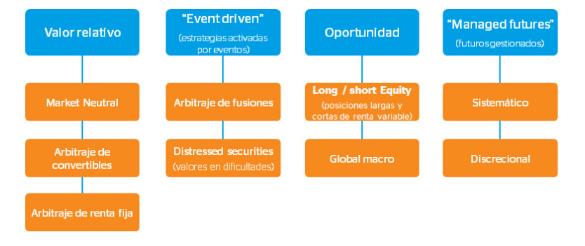
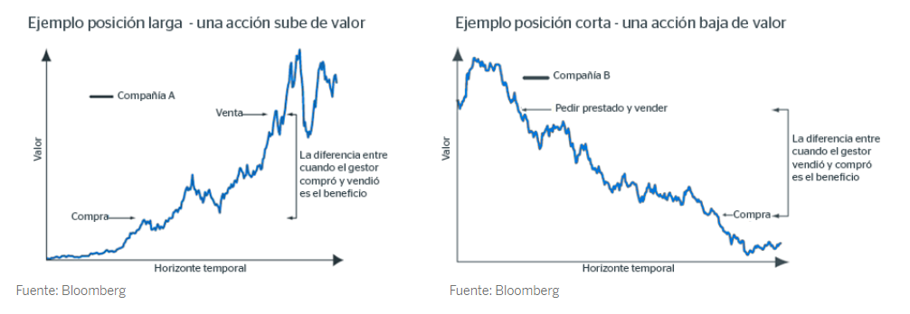
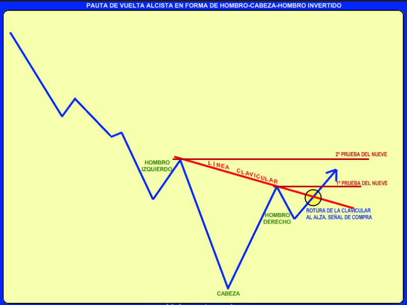

Año 2017
Examen marzo
- Por lo general, el objetivo de un fondo de inversión libre (hedge fund) es:
Superar su benchmark, pero con la menor volatilidad posible.
Superar su benchmark, pero con el menor tracking-error posible.
Obtener rentabilidades positivas independientemente de los movimientos del mercado.
Gestionar la beta de la cartera de una forma dinámica.
La respuesta correcta es la c.
Los Fondos de Inversión Libres (hedge fund), buscan lo que se denomina retorno absoluto independientemente de como se esté comportando el mercado, es decir que su objetivo es siempre obtener rentabilidades positivas.
Esta alternativa de inversión es considerada de alto riesgo por las estrategias que suelen emplear. Son apropiados en situaciones de baja rentabilidad de otros activos o mercados muy convulsos, de hecho como su propio nombre indica, los Hedge Funds (del inglés, fondos de cobertura) utilizan instrumentos y estrategias no permitidas en otro tipo de fondos de inversión con el fin de cubrirse de las oscilaciones del mercado.
- El alfa de una cartera:
Es una alternativa a la beta para cuantificar el riesgo sistemático.
Cuantifica la rentabilidad neta de costes de transacción.
Cuantifica la capacidad del gestor para proporcionar un extra de rentabilidad con respecto al mercado.
Indica las expectativas de crecimiento del precio a largo plazo.
La respuesta correcta es la c.
Puede decirse que es la mejor forma de medir la destreza de un gestor y la de su equipo. Representa el peor o mejor comportamiento de un fondo respecto a su índice de referencia (o benchmark). La definición clásica es algo confusa, pero viene a decir que un alfa positivo significa que el gestor y su equipo están añadiendo valor a la cartera gracias a su destreza. Cuanto mayor es el alfa, mayor es la incidencia del gestor sobre el fondo. Un alfa positivo es un atributo sumamente apreciado.
El alfa, no es una alternativa a la beta ya que la beta examina la sensibilidad de un fondo con respecto a los movimientos del mercado. Una beta igual a 1 significa que el fondo se moverá en consonancia con el mercado. Una beta mayor que 1 significa que el fondo es “más” sensible a los movimientos del mercado.
Las respuestas b y d no tienen sentido si las relacionamos con el alfa ya que ni la rentabilidad neta de costes de transacción, ni las expectativas de crecimiento del precio a largo plazo son medidas de performance de una cartera.
- Se dispone de 1.000 euros para invertir en dos activos. Un activo con riesgo del que se espera una rentabilidad del 18% anual con una desviación estándar del 20%, y un activo sin riesgo que presenta una rentabilidad del 4% anual. ¿Qué cantidad debería invertirse en el activo con riesgo para que la cartera tenga una volatilidad del 15%?
750 euros.
500 euros.
650 euros.
800 euros.
La respuesta correcta es la a.
En este caso particular nos piden calcular el riesgo de la cartera \(p\), que está formada por un activo arriesgado (el activo \(i\)) y un activo sin riesgo \(R_f\).
Bien, pues como nosotros sabemos que el riesgo de una cartera con un sólo activo arriesgado será solamente el riesgo de ese mismo activo (ya que el otro activo que forma esta cartera NO tiene riesgo), bastará con plantear la siguiente ecuación:
\[\sigma_p=w_i\cdot\sigma_i\] Donde,
\(\sigma_p\), es el riesgo de la cartera (conocido e igual al 15%).
\(w_i\), es la ponderación del activo arriegado de la cartera (desconocida).
\(\sigma_i\), es el riesgo del activo arriesgado (conocido e igual al 20%).
Que al despejar la ponderación del activo \(i\) quedará,
\[w_i=\frac{\sigma_p }{\sigma_i}\] Ahora sustituimos y resolvemos,
\[w_i=\frac{0.15 }{0.20}=0.75(75\%)\] Por lo tanto, la cantidad debería invertirse en el activo con riesgo para que la cartera tenga una volatilidad del 15% será de 750 euros \((0.75\cdot 1000)\).
- ¿Cuál es la rentabilidad esperada de un Fondo de Renta Variable española altamente correlacionado con el IBEX–35, que está totalmente cubierto con futuros sobre el IBEX-35?
Cero.
La rentabilidad esperada del IBEX –35.
La rentabilidad del activo sin riesgo.
La TIR del bono a 10 años.
La respuesta correcta es la c.
Si tienes un fondo de renta variable totalmente cubierto, no ganarás ni perderás por los movimientos del mercado por lo que, a priori, puede pensarse que no habrá rentabilidad pero, esto es erróneo.
Al tener dos posiciones, una larga (fondo) y otra corta (la del futuro vendido) el resultado neto será la diferencia entre los precios de ambas. Para poder hacer la diferencia, calcularemos los precios de ambas magnitudes. Por partes, el razonamiento sería:
- El patrimonio del fondo habrá aumentado en x% como consecuencia de los movimientos del mercado. Es decir, las acciones del Ibex suben (no necesitamos el dato para responder a esta pregunta).
2.El precio del futuro, sin embargo, tiene más factores a tener en cuenta. Se calcula de la siguiente forma:
\[F= S \cdot ( 1+ i\cdot \frac{n}{360})\]
Atendiendo a esta fórmula y teniendo en cuenta que estamos en el momento del vencimiento, el precio del futuro tendrá como variables:
\(S\), es el precio del subyacente en el momento del vencimiento (precio del conjunto de acciones del Ibex sobre los que establecemos la posición) que será igual que el precio del fondo.
\(i\), la rentabilidad del activo libre de riesgo
\(n\), 1 día (se entiende que es el día anterior a la liquidación)
El resultado nos dirá que el precio del futuro será muy próximo al del subyacente, únicamente aumentado por la rentabilidad del activo libre de riesgo a 1 día.
Si hacemos la diferencia que comentábamos al principio tendremos:
Resultado = Precio del fondo (cotización del Ibex) - Precio del futuro (Cotización del Ibex multiplicada por (1 + i x 1/360))
Resultado neto de la operación (se anulan las variables “Cotización del Ibex”) = i/360 (la rentabilidad del activo libre de riesgo)
- La planificación financiera personal básicamente consiste en:
Decirle al cliente donde invertir.
Acertar en el timing de las inversiones del cliente.
Integrar las distintas estrategias para cada objetivo financiero del cliente.
Un producto de inversión.
La respuesta correcta es la c.
La planificación financiera personal (o financial planning) consiste en en analizar la situación actual de las finanzas personales (o familiares), y fijarse ciertos objetivos financieros y personales. Para alcanzar cada uno de los objetivos financieros previamente fijados el asesor ha de integrar distintas estrategias que le permitan la consecución de los mismos minimizanzo los riesgos y maximizando la rentabilidad, en la medida de lo posible.
- Un fondo de inversión tiene un ratio de Sharpe de 0,93 con una volatilidad del 26,2%. Si la beta es 1,06; su ratio de Treynor será:
No se puede calcular, pues necesitamos conocer la rentabilidad del fondo y la rentabilidad del activo libre de riesgo.
0,23.
0,51.
3,55.
La respuesta correcta es la b.
En primer lugar vamos a calcular el exceso de rentabilidad (o premio por riesgo) \(E_p-R_f\) a partir del ratio de Sharpe:
\[S_p=\frac{E_p-R_f}{ \sigma_p}\]
Donde,
\(S_p\), es ratio de Sharpe.
\(E_p\), es la rentabilidad esperada de la cartera \(p\).
\(R_f\), es la rentabilidad del activo sin riego.
\(\sigma_p\), es la volatilidad (riesgo) de la cartera \(p\).
Que al despejar el exceso de rentabilidad \(E_p-R_f\) se tiene que,
\[(E_p-R_f)=S_p\cdot \sigma_p\]
Sustituimos los datos del enunciado y calculamos,
\[(E_p-R_f)=0.93\cdot 0.262=0.24366\]
Ahora que conocemos el exceso de rentabilidad (o premio por riesgo) \(E_p-R_f\), aplicamos la fórmula del ratio de Treynor:
\[T_p=\frac{E_p-R_f}{ \beta_p}\]
Donde,
\(S_p\), es ratio de Sharpe.
\(E_p\), es la rentabilidad esperada de la cartera \(p\).
\(R_f\), es la rentabilidad del activo sin riego.
\(\beta_p\), es la beta (sensibilidad a los movimientos del mercado) de la cartera \(p\).
Sustituimos y calculamos,
\[T_p=\frac{0.24366}{1.06}=0.2298\] Luego, su su ratio de Treynor será de 0.23.
- Un gestor de carteras que administra un fondo de inversión de renta variable española altamente diversificado, decide cubrirlo con futuros sobre el IBEX- 35. Determinar el número de contratos según los datos siguientes. Supóngase que el gestor mantiene su posición hasta el vencimiento del contrato:
| Datos: |
|---|
| Valor nominal de la cartera de renta variable 13.800.000 euros |
| Valor efectivo de la cartera de renta variable 18.300.000 euros |
| IBEX-35 contado 14.715,8 |
| Futuro IBEX-35 vto. próximo 14.760,0 |
| Beta global de la cartera (altamente fiable) 1,12 |
La respuesta correcta es la d.
Calculamos el ratio de cobertura con la siguiente fórmula:
\[RC=-\frac{Valor\ efectivo\ de\ la\ cartera\cdot\ \beta_{cartera}}{Indice\ al\ contado\cdot multiplicador}\]
\[RC=-\frac{18300000\cdot1.12}{14715.8\cdot10}=-139.27\simeq 139 \]
- Marisa contrató hace un mes un seguro de vida que cubre el riesgo de fallecimiento de su esposo. El beneficiario del seguro para caso de fallecimiento es su hija Matilde. ¿Qué tratamiento fiscal corresponderá al cobro de la prestación para caso de fallecimiento por el beneficiario?
Tributación por el Impuesto sobre la Renta de las Personas Físicas como rendimiento del capital mobiliario.
Tributación en el Impuesto Sobre Sucesiones y Donaciones, modalidad adquisición gratuita “mortis causa”.
Tributación por el Impuesto sobre Sucesiones y Donaciones, modalidad adquisición gratuita “inter vivos”.
Ausencia de tributación en el Impuesto sobre Sucesiones y Donaciones por tratarse de una renta obtenida por un descendiente.
La respuesta correcta es la c.
Las prestaciones derivadas de un contrato de seguro pueden ser objeto de diferentes impuestos, dependiendo de la contingencia producida y de los elementos personales del mismo.
Cuando el tomador del seguro no es la misma persona que el beneficiario, la tributación corresponde al Impuesto de Sucesiones y Donaciones.
Cuando el tomador del seguro sí es la misma persona que el beneficiario, la tributación corresponde al IRPF.
En este caso, el tratamiento fiscal que corresponderá al beneficiario por el cobro de la prestación (debido al fallecimiento) será la tributación por el Impuesto sobre Sucesiones y Donaciones. La duda puede surgir en la modalidad, pero en este aspecto la ley es clara y dice que las transmisiones se considerarán inter vivos cuando ésta se produce en vida del donante. Y, como Marisa (la donante) sigue en vida el hecho imponible será considerado una adquisición gratuita “inter vivos”.
- La Línea del Mercado de Valores (Security Market Line -SML-) pone en relación la rentabilidad de cada activo con:
La desviación típica del activo.
La beta del activo.
El riesgo especifico del activo.
El índice de mercado donde cotiza.
La respuesta correcta es la b.
La línea del mercado de valores (también conocida por su nombre en inglés, security market line, de la que derivan las siglas SML) es la representación del Modelo de valoración de activos financieros (CAPM). Representa la tasa esperada de retorno de un valor individual \(E\,(R_m)\) en función del riesgo sistemático (no diversificable) \(\beta_i\).
- Una cartera que tiene un coeficiente beta de 0,8 ha obtenido una rentabilidad del 19% con una volatilidad del 23%, mientras que el índice de referencia ha obtenido una rentabilidad del 14%, con una volatilidad del 15%. Calcular el tracking-error de dicha cartera.
8,00%
19,62%
3,85%
15,35%
La respuesta correcta es la b.
Si recordamos una de las dos la fórmulas que tenemos para calcular el tracking-error de una cartera,
\[\sigma_{\alpha,p}=\sqrt{\sigma_p^2-\beta_p^2\cdot \sigma_m^2}\]
Donde,
\(\sigma_{\alpha,p}\), es la desviación típica (volatilidad o riesgo) del alpha de Jensen respecto de la cartera \(p\).
\(\sigma_p^2\), es la varianza de la cartera \(p\).
\(\beta_p^2\), es la beta al cuadrado de la cartera \(p\).
\(\sigma_m\), es la varianza al cuadrado de la cartera de mercado (o benchmark) \(m\).
Bastará con sustituir \(\sigma_p^2=0.23^2\), \(\beta_p^2=0.8^8\) y \(\sigma_m=0.15^2\) en la expresión anterior y calcular,
\[\sigma_{\alpha,p}=\sqrt{0.23^2-0.8^2\cdot 0.15^2}=0.19621(19.62\%)\]
- Una empresa presenta la siguiente información:
| Datos: |
|---|
| Beneficio por acción: 4,32 euros. |
| Dividendo por acción: 2,81 euros. |
| Precio de mercado: 62,44 euros. |
| Precio objetivo: 68,50 euros. |
¿Qué rentabilidad por dividendo tiene esta empresa?
6,92%
4,50%
6,31%
4,10%
La respuesta correcta es la b.
La rentabilidad por dividendo (RD) O también denominada comúnmente dividend yield (DY), es el cociente entre el dividendo y el precio, y se puede obtener de dos formas: usando datos de la empresa,
\[RD=\frac{Dv}{CB}\]
Donde,
\(Dv\), es el dividendo total repartido por la empresa.
\(CB\), es la capitalización bursátil de la empresa.
0 también usando datos de las acciones,
\[RD=\frac{DPA}{PPA}\]
Donde,
\(DPA\), es el dividendo por acción.
\(PPA\), es el precio de cotización.
En nuestro caso, aplicando la segunda fórmula tenemos que:
\[RD = \frac{DPA}{P_0}=\frac{2.81}{62.44}=0.0450(4.5\%)\]
- En la planificación financiera, al determinar la cantidad de dinero necesaria para cuando llegue la jubilación con el fin de complementar la pensión del sistema público, se deben tener en cuenta todos los siguientes factores excepto:
El salario actual y su tasa de crecimiento.
La tasa de interés libre de riesgo.
La pensión pública actual y su incremento anual esperado.
El tiempo que falta para la jubilación.
La respuesta correcta es la b.
La tasa libre de riesgo, es un concepto teórico que asume que en la economía existe una alternativa de inversión que no tiene riesgo para el inversionista. Este ofrece un rendimiento seguro en una unidad monetaria y en un plazo determinado, donde no existe riesgo crediticio ni riesgo de reinversión ya que, vencido el período, se dispondrá del efectivo. En la práctica, se puede tomar el rendimiento de los Bonos del Tesoro de Alemania o Estados Unidos como la inversión libre de riesgo, debido a que se considera que la probabilidad de no pago de un bono emitido por Estados Unidos es muy cercana a cero. Por lo general esta tasa de libre de riesgo es medida por los rendimientos de los bonos de los estados.
Por tanto, si atendemos a la definición de la tasa libre de riesgo podemos afirmar que NO es un factor a tener en cuenta en la planificación financiera, al determinar la cantidad de dinero necesaria para la jubilación con el fin de complementar la pensión del sistema público.
Por el contrario, tanto el salario actual como la pensión pública actual y el tiempo que falte para la jubilación sí serán factores a tener en cuenta a la hora de determinar la cantidad de dinero necesaria para la jubilación. Asimismo se tendra que hacer un seguimiento cuidadoso de la evolución de estas variables, ya que se trata de una planificación dinámica en función de la situación personal y familiar del ahorrador, la coyuntura económica y las posibles contingencias que tengan lugar a lo largo del periodo de acumualación.
- ¿Cuál es el método más utilizado para calcular la tasa de rentabilidad cuando se comparan los resultados obtenidos durante varios intervalos de tiempo por diferentes gestores de fondos de inversión?
La tasa interna de rentabilidad (TIR).
La tasa de rentabilidad ponderada.
La media aritmética de sus rentabilidades.
La tasa geométrica de rentabilidad (TGR).
La respuesta correcta es la d.
La Tasa Geométrica de Rentabilidad (TGR) (Time-weighted rate of return) es la rentabilidad del gestor de la cartera y es especialmente útil para medir la rentabilidad media de las operaciones financieras en las que las revalorizaciones o desvalorizaciones son acumulativas. Por tanto, esta medida es la adecuada y correcta en lugar de la rentabilidad ponderada o la media aritmética.
- Manteniendo constantes el resto de factores, ¿cuál de los siguientes bonos tendrá la mayor variación de precio debido a un cambio de los tipos de interés?
Bono A: vencimiento en 5 años y cupón cero.
Bono B: vencimiento en 8 años y cupón cero.
Bono C: vencimiento en 8 años y cupón del 6%.
Tanto B como C, dependiendo de si el tipo de interés suba o baje.
La respuesta correcta es la b.
Ante variaciones en los tipos de interés sabemos que los mayores cambios en el precio se dan con:
TIR bajas.
Cupones bajos.
Vencimientos largos.
Por lo tanto la mayor variación de precio debido a un cambio de los tipos de interés se dará en el “Bono B: vencimiento en 8 años y cupón cero.” ya que tiene el cupón más bajo (cupón cero) y el vencimiento más largo (8 años).
En otras palabras, seleccionamos el bono de mayor duración (riesgo) de forma que nos ofrecerá una mayor rentabilidad asociada al mayor nivel de riesgo asumido en la inversión. Sabeos también que en un bono cupón cero su duración coincide con su vencimiento, luego 8 años. E igualmente sabemos que cualquier bono que pague cupón, mismo vencimiento y misma TIR, su duración será en cualquier caso inferior a 8 años por el efecto producido por el cobro de los cupones, es decir, por la contribución que éstos hacen a la disminución del riesgo por anticipar el cobro de lo mismos respecto de un bono que no pague cupones (bono cupón cero).
- El Principio de Transparencia del Código Ético de EFPA exige al asesor:
Revelar todo tipo de conflictos de intereses.
Actuar con la máxima integridad.
Incentivar la aceptación del Código Ético.
Reconocer los límites de su competencia profesional.
La respuesta correcta es la a.
Según el Principio de Transparencia del Código Ético de EFPA
Los Miembros siempre deben ser objetivos o explicar a los clientes las razones en los casos que la objetividad esté comprometida, salvo cuando resulte obvio para el cliente que el Asesor representa a su empresario en asuntos vinculados a esta representación.
- Un Miembro deberá mantener su objetividad y honestidad intelectual, debiendo revelar todo conflicto de intereses en el ejercicio de sus actividades profesionales. En aquellos casos en los que los compromisos con sus empresarios hagan imposible esa objetividad, se deberá explicar claramente la situación a los clientes. Cuando se desempeñen funciones de asesoramiento financiero, los Miembros deben informar al cliente si actúa de forma independiente o representa a una empresa.
- En un canal alcista, ¿daremos más importancia al soporte o a la resistencia?
A ambos. Soporte y resistencia son igual de importantes.
La rotura de la línea de soporte, dado que implica un cambio de tendencia.
La rotura de la línea de resistencia, dado que implica cambio de tendencia.
El precio objetivo tras la rotura será equivalente a la anchura del canal y a su longitud.
La respuesta correcta es la b.
Canales de precios: alcistas
Mientras los precios avanzan y estos se encuentran dentro del canal, la tendencia se considera alcista. El aviso de un cambio de tendencia se produce cuando los precios caen por debajo del soporte de la línea de tendencia principal. Una ruptura por encima de la resistencia de la línea del canal alcista indica una aceleración del avance.
En un canal alcista, algunos operadores buscan comprar cuando los precios alcanzan el soporte de la línea principal de tendencia. Por el contrario, buscan vender (o ponerse cortos) cuando los precios llegan a la resistencia de la línea de tendencia principal en un canal bajista del precio. Como con la mayoría de los patrones de precios, otros aspectos del análisis técnico debe utilizarse para confirmar las señales.
- Si la tasa de interés interbancaria a seis meses del dólar y la libra esterlina es 5,5% y 4,0% respectivamente, y el tipo de cambio spot GBP/USD es de 1,80 dólares por libra esterlina, el tipo de cambio a plazo GBP/USD a seis meses será:
GBP/USD 1,77.
GBP/USD 1,81.
GBP/USD 1,79.
GBP/USD 1,83.
La respuesta correcta es la b.
1º Para resolver esta pregunta tenemos que aplicar la siguiente fórmula, que muestra la relación existente entre los tipos de cambio a plazo y los tipos de cambio al contado:
\[{ F }_{ GBP/USD }={ S }_{ GBP/USD }\cdot \frac { 1+{ i }_{ USD }\cdot(\frac { n }{ Base } ) }{ 1+{ i }_{ GBP }\cdot(\frac { n }{ Base } ) } \]
Donde:
- \({ F }_{ GBP/USD }\) : tipo de cambio a plazo o forward de n días (meses, años, etc.) expresado de forma directa
- \({ S }_{ GBP/USD }\) : tipo de cambio a contado o spot expresado de forma directa
- \({ i }_{USD}\) : tipo de interés sobre el dólar.
- \({ i }_{GBP}\) : tipo de interés sobre la libra.
- \(n\) : número de días que trancurren del contrato a plazo.
2º Sustituimos los datos en la ecuación anterior,
\[ { F }_{ USD/EUR }=1,8\cdot \frac { 1+0,055\cdot (\frac { 6 }{ 12 } ) }{ 1+0.04\cdot (\frac { 6 }{ 12 }) }=1.813235 \]
- Cuando, como consecuencia del fallecimiento del asegurado, el cónyuge beneficiario percibe una cierta cantidad procedente de un contrato de seguro de vida, ¿tiene el beneficiario derecho a alguna reducción en el impuesto de sucesiones?
No tiene derecho a reducción alguna.
Tiene derecho a una reducción del 100% de la cantidad percibida.
Tiene derecho a una reducción del 100%, pero con límite.
Tiene derecho a una reducción del 75% de la cantidad percibida.
La respuesta correcta es la c.
En el caso de la tributación en el ISD de los seguros de vida en que las figuras de tomador y beneficiario no sean la misma persona, se produce un hecho imponible que está sujeto al Impuesto sobre Sucesiones y Donaciones (I.S.D.):
– Si la contingencia que origina el cobro de la prestación es la supervivencia del asegurado, el hecho imponible corresponde a la modalidad de Donaciones.
– Si la contingencia que origina el cobro de la prestación es el fallecimiento del asegurado, el hecho imponible corresponde a la modalidad de Sucesiones.
Respecto de las prestaciones de seguros liquidadas por Donaciones, debe señalarse que:
– La base imponible la constituye el importe del capital recibido o el valor actual de la renta.
– Si la prestación se percibe en forma de renta, la tributación por este Impuesto no impide que el beneficiario tribute anualmente en su IRPF por el RCM derivado del cobro de la renta, cuantificado aplicando el coeficiente de integración correspondiente (como renta inmediata).
Respecto de las prestaciones de fallecimiento, debe destacarse que:
– La base imponible la constituye el importe del capital recibido o el valor actual de la renta.
- Existe una reducción establecida por la normativa estatal específica para las prestaciones derivadas de contratos de seguro de vida cuando el beneficiario sea el cónyuge, ascendiente o descendiente del contratante fallecido. La cuantía estatal de esta reducción está limitada a 9.145.49 euros, pero este importe puede ser mayor si la Comunidad Autónoma de residencia fiscal del fallecido así lo ha previsto.1
– En caso de que la prestación se perciba en forma de renta, la tributación por este Impuesto es definitiva: el beneficiario de la renta no debe declarar la renta anual en el IRPF. Además, existe la posibilidad de fraccionar el pago del impuesto en el número de años de duración de la renta (temporal) o 15 años (vitalicia).
- Se presentan los siguientes datos sobre las compañías ABC y XYZ:
| ABC | XYZ | |
|---|---|---|
| Precio por acción | 25,78 | 38,85 |
| Fondos propios | 315.150.250 | 208.659.874 |
| Dividendo por acción | 1,35 | 1,76 |
| Beneficio después de impuestos | 47.650.250 | 35.698.745 |
| Precio objetivo | 34,2 | 42,2 |
| EBIT | 60.587.125 | 37.845.178 |
Según el criterio del ROE se prefiere ABC ya que tiene mayores beneficios después de impuestos.
Según el criterio de rentabilidad por dividendo se prefiere XYZ pues reparte un dividendo más alto.
A y B son correctas.
Ninguna de las opciones es correcta.
La respuesta correcta es la d.
Si calculamos el ROE para cada empresa, tendríamos para ABC,
\[ROE =\frac{BDI}{FP} =\frac{47650250}{315150250}=15.12\%\]
Para XYZ,
\[ROE = \frac{BDI}{FP} =\frac{35698745}{208659874}=17,11\%\]
En este caso por el criterio del ROE elegiríamos a la empresa XYZ.
Si calculamos la rentabilidad por dividendo (RD) para cada empresa, tendríamos para ABC,
\[RD=\frac{DPA}{PPA}=\frac{1.35}{25.78}=5.24\% \]
Para XYZ,
\[RD=\frac{DPA}{PPA}=\frac{1.76}{38.75}=4.53\%\] En este caso por el criterio del RD elegiríamos a la empresa ABC.
- ¿Aproximadamente, qué porcentaje de participación sobre la revalorización media podría ofrecer el siguiente fondo garantizado?
| Datos: |
|---|
| Patrimonio inicial Fondo: 85.000.000 euros. |
| Importe destinado a la compra de bonos de cupón cero y liquidez para |
| garantizar el 100% del patrimonio inicial: 65.500.000 euros. |
| Importe destinado a las comisiones de gestión y depósito, gastos de |
| auditoria, impuestos y otos gastos: 2.000.000 euros. |
La prima de las opciones estándar vale 25 euros para cubrir un nominal de 57 euros, y la prima de las opciones asiáticas vale 15 euros también para cubrir un nominal de 57 euros.
75%
80%
48%
70%
La respuesta correcta es la b.
Para calcular el porcentaje de participación en la revalorización media (opción call asiática), haremos:
- Dinero disponible para la compra de opciones,
\[D_{disponible}=85000000-65000000-2000000=18000000\] Es decir, que comprometemos 65.500.000 euros para la compra de bonos de cupón cero que nos permite garantizar el 100% del patrimonio inicial y comprometemos también 2.000.000 euros para las comisiones de gestión y depósito, gastos de auditoria, impuestos y otos gastos. De forma que, disponemos de 18.000.000 euros que podemos gastar en la participación sobre la revalorización media de un índice a través de la compra de opciones asiáticas.
Calculamos ahora el precio de la opción en %, de forma que podamos saber que porcentaje sobre el total del patrimonio inicial del fondo sería necesario para poder asegurarnos una revalorización del 100% de la subida del índice:
\[\%\,para\,cubrir\,100\%=\frac{15}{57}= 0.263158(26.31\%)\]
Que aplicado al patrimonio inicial del fondo serían 22.368.421.05 euros. Es decir que destinando este importe a la compra de opciones nos asegurarían una participación del 100% sobre la revalorización media del citado ídice; pero como tan sólo disponemos de 18.000.000 euros para invertir, la participación que este fondo garantizado podría ofrecer a sus participes será de:
\[\%^s/indice=\frac{18000000}{22368421.05}=0.8047(80.47\%)\]
- Si los precios de compra y venta para una operación spot son 1,3114 y 1,3125 dólares por euro, ¿cuántos dólares recibirá un empresario que tiene 200.000 euros y los quiere convertir en USD?
262.280,00 USD
262.500,00 USD
152.380,95 USD
152.508,77 USD
La respuesta correcta es la a.
Si los precios de compra y venta para una operación spot son 1,3114 y 1,3125 dólares por euro, me está diciendo que,
| CAMBIO | PRECIOS |
|---|---|
| 1 Dolar estadounidense = 0.7625 Euros | Precio de compra 1 Euro = 1,3114 Dolares |
| 1 Euro = 1.3114 Dolares | Precio de venta de 1 Euro = 1,3125 Dolares |
Por lo tanto, los dólares recibirá un empresario que tiene 200.000 euros y los quiere convertir en USD serán,
\[Dolares\,estadounidense=200000\cdot1.3114=262280\]
- Al hacer la valoración de un fondo por medio de un ranking, se debe tener en cuenta:
| I. La vocación inversora del fondo. |
| II. La rentabilidad obtenida en el último mes. |
| III. Las rentabilidades obtenidas en los tres últimos años. |
| IV. La volatilidad del fondo. |
I y III son correctas.
I, II, III y IV son correctas.
I, III y IV son correctas.
I y II son correctas.
La respuesta correcta es la a.
A la hora de establecer rankings, el análisis de las rentabilidades de los 3 últimos años como mínimo es fundamental, pues nos da una idea clara sobre la consistencia de un fondo (períodos inferiores no son tan relevantes). Además, no debemos olvidar la vocación inversora del mismo, pues comparar productos de diferente categoría no tiene sentido y nos podría llevar a conclusiones erróneas.
- El índice IFO representa:
La medición del clima empresarial en Europa.
Una encuesta realizada por la universidad de Francia sobre los empresarios.
El pulso del clima empresarial alemán.
El conocimiento de la confianza del consumidor alemán realizado a través de una encuesta.
La respuesta correcta es la c.
El Indicador IFO es un indicador avanzado de producción alemán. Se elabora una encuesta a 10.000 empresas alemanas acerca de las actividades presentes de cada empresa y de las actividades previstas en los próximos seis meses. Si la tendencia es alcista, tiende a interpretarse como una recuperación de la economía, y viceversa. Aunque es un indicador alemán, su interpretación suele extrapolarse al resto de la economía europea. Este indicador se elabora de forma mensual.
- A propósito de las normas GIPS (Global Investment Performance Standards), ¿cuál de las siguientes afirmaciones es correcta?
Se aplican por los gestores para evaluar más eficazmente las características de los inversores potenciales.
Constituyen los requisitos mínimos obligatorios de transparencia definidos por INVERCO.
Se trata de principios que los gestores aplican para asegurar una representación correcta y una completa información relativa a la propia performance de la cartera.
Son criterios definidos y aplicados por la CNMV en su labor de supervisión de los gestores de fondos de inversión.
La respuesta correcta es la c.
El propósito de los Global Investment Performance Standards (GIPS) es el establecimiento de estándares para el cálculo y la presentación de rendimientos de inversión reconocidos internacionalmente. Intentando asegurar así una representación correcta y una completa de la información relativa a la propia performance de la cartera.
- De acuerdo con el teorema de la inmunización financiera, un inversor debe invertir en una cartera de bonos cuya duración media sea:
Igual a la esperanza de vida del inversor.
Superior a su horizonte temporal de inversión.
Inferior a su horizonte temporal de inversión.
Igual a su horizonte temporal de inversión.
La respuesta correcta es la d.
El teorema de la inmunización financiera es la estrategia de gestión de carteras de renta fija que asegura que los cambios en los tipos de interés no afectarán al valor de la cartera de títulos. La inmunización trata de eliminar la sensibilidad del precio a la variación de los tipos de interés a través de equilibrar la Duración de Macaulay de la cartera de activos con la duración de la cartera de pasivos.
Según el teorema de inmunización una cartera de bonos está inmunizada del riesgo de tipo de interés si la duración de la cartera es igual al horizonte temporal deseado de la inversión.
- De las siguientes parejas de factores, ¿cuál es la que más influye en la confección de un fondo de inversión garantizado?
La volatilidad y el banco que aporta la garantía.
El subyacente y la volatilidad del mismo.
La volatilidad y los tipos de interés.
Los tipos de interés y el vencimiento del producto.
La respuesta correcta es la c.
Tipos de interés elevados, nos permitirán destinar un mayor importe al derivado. Al mismo tiempo, una volatilidad baja nos permitiría pagar primas más baratas.
- Un inversor con expectativas alcistas en el mercado de renta variable español compró el 18 de junio un contrato de futuros sobre el IBEX–35 vencimiento julio a 15.080 puntos. Hoy 29 de junio, el precio de mercado de dicho contrato ha subido un 1,28% y decide cerrar su posición. ¿Cuál será el resultado absoluto de la operación y la rentabilidad simple obtenida, si el depósito de garantía aportado fue de 9.000 euros?
Beneficio de 1.930 euros y rentabilidad del 21,44%
Beneficio de 193 euros y rentabilidad del 2,14%
Pérdida de 1.930 euros y rentabilidad del -21,44%
Pérdida de 193 euros y rentabilidad del -2,14%
La respuesta correcta es la a.
Para resolver esta pregunta vamos a plantear primero el flujo de caja en el momento final de la operación (valor final):
\[V_f=9000+\left[P_{liquidacion}\cdot\%(revalorizacion)\cdot Multiplicador\right]\]
Donde,
\(P_{vencimiento}\), será el preció a vencimiento del IBEX–35(julio a 15.080 puntos).
\(\%(revalorizacion)\), el precio de mercado del contrato (en este caso subido un 1,28%).
\(Multiplicador\), será la cantidad por la que se multiplica el índice IBEX 35 para obtener su valor monetario. Por tanto, cada punto del índice IBEX 35 tiene un valor de 10 euros.
Luego, si sustituimos y calculamos tenemos que:
\[V_f=9000+\left[15080\cdot 1.28\% \cdot 10 \right]=10930.24\] El valor final es de \(10.930,24\) y el beneficio en euros es de,
\[B^o=V_f-garantia=10930.24-9000=1930.24\] Y la rentabilidad simple de,
\[R_{simple}=\frac{V_f-garantia}{garantia}=\frac{10930.24-9000}{9000}=0.214471(21.44\%)\]
- En el caso de un trabajador por cuenta ajena, ¿cuál de las siguientes cuestiones NO podemos considerar como pregunta básica al momento de planificar para la jubilación?
¿Cuándo empezar a ahorrar?
¿Cuánto dinero será necesario?
¿Cuánto cotizar a la Seguridad Social?
¿Cuándo espera jubilarse?
La respuesta correcta es la c.
La cuota a cotizar a la Seguridad Social NO la podemos considerar como pregunta básica a la hora de planificar para la jubilación ya que estas han de ser la establecidas anualmente para las distintas contingencias y categorías profesionales de los trabajadores (grupos de cotización).
- Una cartera de renta fija cuyo valor de mercado es hoy de 20 millones de euros presenta una duración corregida o modificada igual a 7,5. Si el tipo de interés se espera que aproximadamente caiga en un 0,5%, entonces:
La rentabilidad adicional de la que nos beneficiamos si se confirman las expectativas es aproximadamente de un 3,75%.
Obtendremos un beneficio aproximado de 750.000 euros.
El valor de mercado de la cartera, tras la variación de los tipos de interés será aproximadamente de 20.850.000 euros.
Son correctas las respuestas a y b.
La respuesta correcta es la d.
La rentabilidad adicional de la que nos beneficiamos si se confirman las expectativas es aproximadamente de,
\[\frac{\Delta P}{P}\simeq \left(-D_{corregida}\right)\cdot\Delta TIR=(-7.5)\cdot (-0.005)=0.0375(3.75\%)\]
La Duración corregida también nos sirve para estimar el efecto en precio de variaciones en la TIR la podemos expresar como,
\[P_1\simeq P_0\cdot\left[1+((-D_{corregida})\cdot\Delta TIR)\right]\]
donde,
\(P_1\), es el precio estimado del bono ante una variación de la TIR.
\(P_0\), es el precio actual del bono .
\(D_{corregida}\), es la duración corregida.
Que al sustituir los valores y calcular nos da un resultado de,
\[P_1\simeq 20000000\cdot\left[1+((-7.5)\cdot0.005\right]=20750000\] Luego,
\[B^o=V_f-V_i=20750000-20000000=750000\] Obtendremos un beneficio aproximado de 750.000 euros.
- Utilizan los instrumentos derivados para realizar apuestas direccionales, y los podemos dividir en sistemáticos y discrecionales, ¿de qué estrategia utilizada por los fondos de inversión libre (hedge funds) se trata?
Long/short Equity.
Managed Futures (CTA).
Arbitraje de Renta Fija.
Arbitraje de Fusiones.
La respuesta correcta es la b.
La estrategia CTA o Commodities Trading Advisor, trata de una forma de inversión alternativa basada en los futuros y opciones gestionados y fondos sobre este tipo de productos derivados.
La estrategia adopta un enfoque sistemático o discrecional de la inversión en contratos de futuros en los mercados globales de bonos, renta variable, futuros sobre commodities y divisas. Las estrategias sistemáticas se apoyan en la aplicación de análisis estadísticos para tomar posiciones de inversión, mientras que las estrategias discrecionales se apoyan en el juicio del gestor de inversiones.
- Una determinada empresa cotiza a 60 euros y tiene un beneficio por acción de 5 euros. El PER medio del sector es de 10. ¿Qué podemos deducir de estos datos?
Esta empresa cotiza con prima respecto al sector.
La rentabilidad por dividendo de la empresa es del 8,33%.
La empresa cotiza a descuento con respecto al sector.
El inversor tardara 6 años en recuperar su inversión.
La respuesta correcta es la a.
Sabemos que el ratio PER es:
\[PER=\frac{PPA}{BPA}\] Donde,
\(PPA\), es el precio por acción (precio de cotización).
\(BPA\), es el beneficio por acción.
Luego si sustituimos los valores del precio de cotización (precio actual) y el beneficio por acción en la fórmula anterior tenemos que,
\[PER=\frac{PPA}{BPA}=\frac{60}{5}=12\] Y rentabilidad por dividendo (yield) de la empresa viene dada por,
\[RD=\frac{DPA}{PPA}\]
Donde,
\(DPA\), es el dividendo por acción.
\(PPA\), es el precio por acción (precio de cotización).
Que, al desconocer el dividendo por acción no la podemos calcular.
El PER nos dice cuántas veces está incluido el beneficio en el precio, o, en otras palabras, cuántos años de beneficio actual estamos pagando en el precio. En este caso, estamos pagando 12 años de beneficio actual. Por lo tanto podemos afirmar que es falso que el inversor tardara 6 años en recuperar su inversión.
Finalmente, como el PER medio del sector es de 10 y el de la empresa 12 podemos deducir que esta empresa cotiza con prima respecto al sector.
- La Utilización de la Capacidad Productiva (UCP) es un porcentaje de la capacidad instalada total. En cuanto a este indicador es posible afirmar que:
Si se encuentra entre el 80% y 85%, se esta en plena utilización de la capacidad productiva.
Si es inferior a 100%, independientemente de la cifra, indica infrautilización de la capacidad productiva, y la economía estaría desperdiciando recursos.
Si está por debajo del 80% indica recesión.
No es posible identificar la plena utilización de la capacidad si no se conoce la productividad.
La respuesta correcta es la a.
La Utilización de la Capacidad Productiva (UCP) es un indicador del grado de utilización de las plantas y la maquinaria, el cual refleja el potencial de producción del país. Cubre los sectores Industrial, Minería, Electricidad y Energía. Si, éste se encuentra entre el 80% y 85%, se consideraque el potencial de producción del país esta en plena utilización de su capacidad productiva.
- ¿Con cuál de los siguientes factores NO está positivamente correlacionado el precio de una opción call sobre una acción?
El precio de la acción.
El tiempo a vencimiento.
La volatilidad de la acción.
El precio de ejercicio.
La respuesta correcta es la d.
| Los factores que determinan el valor de una opción ante un aumento de: | Call | Put |
|---|---|---|
| Precio de ejercicio | - | + |
| Cotización de la acción subyacente | + | - |
| Volatilidad de la acción subyacente | + | + |
| Tipo de interés | + | - |
| Tiempo a vencimiento | + | +/- |
| Dividendos a pagar hasta vencimiento | - | + |
| Pago del dividendo | nulo | nulo |
Por lo tanto, el precio de ejercicio NO está positivamente correlacionado el precio de una opción call sobre una acción.
- En cuanto a los fondos de inversión inmobiliaria, ¿cuál de las siguientes afirmaciones es correcta?
Pueden invertir en todo tipo de inmuebles en régimen de alquiler.
No requieren de coeficiente de liquidez.
Debe garantizar la posibilidad de reembolso al partícipe al menos una vez al año.
Las comisiones aplicables son libres.
La respuesta correcta es la c.
Los fondos de inversión mobiliaria se abonan en un plazo máximo de tres días hábiles. Sin embargo, los fondos de inversión inmobiliaria suelen tener una menor liquidez, la normativa dice que como mínimo debe poderse reembolsar una vez al año. Además en el folleto se establece un preaviso de 10 días en los casos en los que se solicite un reembolso por una cantidad superior a 300.000 euros.
- Cuando una acción toca su nivel de resistencia, de acuerdo con el análisis técnico, ¿qué se espera que ocurra?
La cantidad de personas que quieran vender la acción se incrementará bastante.
La cantidad de personas que quieran vender la acción se reducirá bastante.
La cantidad de personas que quieran comprar la acción se incrementará bastante.
El volumen de negociación se mantendrá constante.
La respuesta correcta es la a.
Habitualmente cuando la cotización rompe una resistencia, tiene una rápida y corta subida, seguida de una caída hasta las cercanías de la resistencia y es después de esta caída cuando se produce el movimiento alcista definitivo. El descenso antes del alza definitiva se conoce como pull back y es el momento que se debe aprovechar para comprar.
- Una sociedad holding, y que por tanto tiene al menos una participación en el capital de otra sociedad operativa (más del 5% de los derechos de voto):
Puede percibir dividendos que en la mayoría de casos estarán exentos de tributación, en la medida que se podrá aplicar la deducción por doble imposición del cien por cien.
Se considera que es una sociedad “operativa”, esto es, que realiza una actividad empresarial de gestión y dirección de participaciones.
Las acciones y/o participaciones de los socios pueden alcanzar los beneficios fiscales de la empresa familiar (exención en el Impuesto sobre el Patrimonio y reducción del 95% en el Impuesto sobre Sucesiones).
Todas las anteriores.
La respuesta correcta es la d.
- Adquirimos un bono a tres años de vencimiento, con cupón del 4,25%, a una TIR del 3,50%. La semana siguiente los tipos se ubican en el 4% (para simplificar así se quedarán hasta el vencimiento). La tasa de rentabilidad efectiva anual que esperamos obtener al vencimiento será:
3,65 %
3,52 %
4,00 %
4,24 %
La respuesta correcta es la b.
El bono generará los siguientes flujos de caja (cash-flow):
Dentro de 1 año: 4,25
Dentro de 2 años: 4,25
Dentro de 3 años: 104,25
El bono lo hemos adquirido por:
\[P_0=\frac{4,25}{\left(1+0,035\right)^1}+\frac{4,25}{\left(1+0,035\right)^2}+\frac{104,25}{\left(1+0.035\right)^3}=102,101228\]
Si capitalizamos los cupones al nuevo tipo de interés, al final de la inversión tendremos:
\[C_3=4,25\cdot(1+0,04)^2+4,25\cdot (1+0,04)^1+104,25=113,2668\]
Por lo tanto invertimos 102,101228 y en 3 años tenemos 113,2668, por lo tanto podemos calcular la tasa de rentabilidad efectiva obtenida:
\[V_f=V_0\cdot(1+TRE)^n\]
Donde,
\(V_f\), es el valor final e igual a 113,2668.
\(V_0\), es el valor inicial e igual a 102,101228.
Ahora bastará despejar la TRE y calcular,
\[TRE=\left(\frac{113,2668}{102,101228}\right)^\frac{1}{3}-1=0,0351991(3,52\%)\]
- La última etapa en un proceso de planificación financiera personal es:
Implementar una estrategia para la consecución de los objetivos.
Establecer un plan financiero.
Definir los objetivos.
Revisión del plan.
La respuesta correcta es la d.
El asesoramiento no sirve de nada, si las estrategias no se revisan a lo largo del tiempo. Por lo que periódicamente se ha de hacer un seguimiento para supervisar que se están cumpliendo los objetivos previstos y en caso necesario reconducir la situación para poder alcanzarlos.
- De acuerdo con el Capital Asset Pricing Model (CAPM), un activo que esté infravalorado se ubicará:
Por encima de la Security Market Line (SML).
Por debajo de la Security Market Line (SML).
Justo a la altura de la Security Market Line (SML).
Son correctas A, B y C; dependiendo si la beta del activo es mayor, menor o igual a uno.
La respuesta correcta es la a.
De acuerdo con el Capital Asset Pricing Model (CAPM), un activo que esté infravalorado se ubicará por encima de la Security Market Line (SML). Y, un activo que esté sobreavalorado se ubicará por encima de ésta.
- Una compañía que cotiza actualmente a 50 euros, repartirá el próximo ejercicio un dividendo por acción de 1 euro, el cual se incrementará un 2% anual. Si el coste de capital es del 5% y la tasa libre de riesgo del 3%, ¿sería interesante invertir en esta compañía?
Sí, la compañía está infravalorada.
No, la compañía está sobrevalorada.
Sí, pero solo sí varia la tasa libre de riesgo.
No, pues está correctamente valorada.
La respuesta correcta es la b.
Aplicamos el modelo de Gordon-Shapiro,
\[P_0=\frac{d_1}{k-g}\]
Donde,
\(P_0\), es el valor teórico de la acción.
\(d_0\), es el dividendo del periodo actual.
\(k\), es la tasa de descuento del mercado.
\(g\), es la tasa de crecimiento de los dividendos.
Sustituimos y calculamos,
\[P_0=\frac{1}{0.05-0.02}=33.33\]
Luego como el valor teórico actual de la acción es de 33,33 euros y ésta cotiza a 50 euros, NO sería interesante invertir en esta compañía.
- El perfil de riesgo del inversor puede cambiar a lo largo de su vida debido a:
| I. Cambios en la legislación fiscal |
| II. Cambios en la situación económica y personal del inversor |
| III. Cambios en el entorno económico |
Solamente la II.
Solamente la II y la III.
Solamente la III.
La I, II y III.
La respuesta correcta es la b.
El perfil de riesgo de un inversor podría variar debido a los cambios en la situación laboral, personal o familiar y también ante cambios en el entorno económico. Mientras que los cambios en la fiscalidad no son un factor que determine el perfil de riesgo de un inversor.
- En el mercado se encuentran los siguientes tipos de interés al contado:
| Datos: |
|---|
| 3.793% a un mes |
| 3.860% a tres meses |
| 3.878% a cuatro meses |
Encontrar el tipo forward o a plazo para una operación que se realiza dentro de tres meses para un mes de plazo. (aproximar en las operaciones al sexto decimal y la respuesta al tercero)
3,888%
3,903%
3,894%
3,793%
La respuesta correcta es la c.
Para resolver esta pregunta nos planteamos la ecuación del tipo forward o a plazo para periodos inferiores al año:
\[(1+_{0}S_{n} \cdot \frac{n }{12 })=(1+_{0}S_{n} \cdot \frac{n }{12 })\cdot(1+f_{n,(n+1)}\cdot \frac{(n+1)-n }{12 })\]
Sustituimos tipos de interés al contado correspondientes \(_{0}S_{n}\), los plazos \(n\),
\[(1+0.03878 \cdot \frac{4 }{12 })=(1+0.03860 \cdot \frac{3 }{12 })\cdot(1+f_{3,4}\cdot \frac{1 }{12 })\]
Ahora despejamos el tipo forward o a plazo \(f_{3,4}\) para una operación que se realiza dentro de tres meses para un mes de plazo,
\[f_{3,4}=\left[\frac{(1+0.03878 \cdot \frac{4 }{12 })}{(1+0.03860 \cdot \frac{3 }{12 })}-1\right]\cdot\left(\frac{12}{1}\right)=0.0389441(3.894\%)\]
Luego, el el tipo forward \(f_{3,4}\) es de \(3.894\%\)
- En función de que los activos financieros negociados se acaben de emitir o de que se intercambien activos previamente emitidos, distinguiremos entre:
Mercados de renta fija y de renta variable.
Mercados regulados y mercado OTC.
Mercados primarios y secundarios.
Mercados al contado y mercados de derivados.
La respuesta correcta es la c.
Los Mercados Financieros admiten diversas clasificaciones en función del criterio al que se atienda:
Según el plazo de los activos que en ellos se negocien, los Mercados Financieros reciben distintas denominaciones: mercados monetarios y mercados de capital.
Según el momento de entrega del activo financiero, hablaremos de mercados de contado o de derivados (o a plazo).
En función de que los activos financieros negociados se acaben de emitir o de que se intercambien activos previamente emitidos, distinguidos entre mercados primarios y secundarios.
Atendiendo a los activos financieros que en ellos se negocian, encontramos mercados de renta fija y mercados de renta variable.
Según se intercambien divisas o sólo activos denominados en moneda nacional, tendremos mercados de divisas o mercados domésticos.
- ¿Cuál es el precio entero (precio efectivo) de un bono del Estado el día 18/12/2021, sabiendo que su cotización (precio ex cupón) es 101,275%, que paga cupones constantes anuales del 3,20% y que su vencimiento es el 31/1/2025?
101,661%
98,461%
101,275%
104,089%
La respuesta correcta es la d.
Para resolver esta pregunta hemos de calcular el cupón corrido y sumarlo a su precio de cotización (o precio ex cupón) que es conocido e igual a 101,275%. Por tanto, planteamos la fórmula del cupón corrido,
\[CC=\frac{D_c}{D_t}\cdot C\]
donde,
\(CC\), es el cupón corrido.
\(D_{c}\), es el tiempo transcurrido desde el pago del último cupón.
\(D_{t}\), es el tiempo que transcurre entre el pago de dos cupones consecutivos
\(C\), es el importe del cupón que se paga periódicamente.
Ahora debemos realizar el cálculo para conocer el tiempo (en días) que ha transcurrido desde el pago del último cupón hasta la fecha presente (18/12/2021), y para ello sabemos que la próxima fecha del cupón que se paga periódicamente es el 31/1/2022 (ya que el vencimiento es el 31/1/2025).
Por tanto calculamos su diferencia, sabiendo que desde el 18/12/2021 al 31/1/2022 van 43 días más el día corriente. Es decir 44 días, luego habrán transcurrido un total de 321 días (365-44) desde que se cobrara el último cupón. Lo que implica que el cupón devengado y no cobrado es un rendimiento implícito que acumula este bono a la fecha de su valoración.
Ahora sustituimos en la fórmula y calculamos,
\[CC=\frac{321}{365}\cdot 0.032=0.02814(2.82\%)\] Luego, el precio efectivo será la suma del precio ex cupón más el cupón corrido,
\[P_{efectivo}=101.275\%+2.814\%=104.089\%\]
- Una empresa repartirá un dividendo por acción de 1,50 euros el próximo año. Si su precio teórico es de 50,00 euros, su valor nominal 25,00 euros y está cotizando a 40,00 euros; ¿cuál será la rentabilidad por dividendo?
3,00%
3,75%
6,00%
Faltan datos para poder responder a la pregunta.
La respuesta correcta es la b.
La rentabilidad por dividendo (RD), también denominada comúnmente yield (rentabilidad en inglés), es el cociente entre el dividendo y el precio, y se puede obtener de dos formas: usando datos de la empresa,
\[RD=\frac{Dv}{CB}\] Donde,
\(Dv\), es el dividendo total repartido por la empresa.
\(CB\), es la capitalización bursátil de la empresa.
0 también usando datos de las acciones,
\[RD=\frac{DPA}{P_0}\] Donde,
\(DPA\), es el dividendo por acción.
\(CB\), es el precio de cotización.
En nuestro caso, aplicandola segunda fórmula tenemos que:
\[RD = \frac{DPA}{P_0}=\frac{1.5}{40}=0.0375(3.75\%)\]
Nota: Al tratarse de una remuneración dineraria directa, la rentabilidad por dividendo es muy útil para medir la rentabilidad de caja de una acción en concreto, aunque no considera ni el beneficio ni la plusvalía potencial de una acción.
- ¿Cuál es el apalancamiento bruto de este contrato de futuros?
Valor efectivo del contrato: 104.500 euros
Depósito en garantía requerido: 9.500 euros
9,50.
10,45.
11.04.
11,00.
La respuesta correcta es la d.
El efecto apalancamiento es la relación que existe entre el resultado de la inversión y el capital invertido.
\[Apalancamiento= \frac {Resultado\,inversion } {Capital\,invertido}\]
Luego,
\[Aplancamiento=\frac{104500}{9500} =11.00\]
- En un fondo de inversión, ¿quién calcula la comisión de gestión?
La entidad depositaria.
La firma auditora.
La sociedad gestora.
La CNMV.
La respuesta correcta es la c.
Las comisiones de gestión y depositaría son cargadas al fondo de forma directa (por la sociedad gestora y por el depositario, respectivamente), por lo que se restan del valor del patrimonio del fondo y reducen la rentabilidad obtenida por el inversor.
Además, para algunos fondos, la gestora puede cobrar directamente al partícipe comisiones por la suscripción y/o el reembolso de las participaciones.
48.¿Qué nombre reciben las aportaciones realizadas a planes de pensiones, más los rendimientos obtenidos por las inversiones del patrimonio del fondo de pensiones y menos los gastos producidos?
Acciones o participaciones, según el tipo de inversiones del fondo de pensiones.
Participaciones del plan de pensiones.
Derechos consolidados.
Participaciones preferentes.
La respuesta correcta es la c.
¿Qué son los derechos consolidados?
Las aportaciones a un plan de pensiones dan lugar al derecho consolidado del partícipe.
En los planes de aportación definida (como son los planes del sistema individual), el derecho consolidado viene dado por las aportaciones, la rentabilidad de las inversiones que integran el fondo de pensiones, los gastos y, en su caso, las pérdidas producidas. Los rendimientos de las inversiones del fondo, las variaciones al alza o a la baja del valor de mercado de las inversiones, los gastos (por ejemplo: comisiones de gestión y depósito), las pérdidas y beneficios en la venta de activos del fondo, se “imputan” a los derechos consolidados de los partícipes individualmente, en función de su participación en el fondo.
La expresión “derecho consolidado” no implica necesariamente un valor garantizado o una garantía de una rentabilidad o revalorización, sino que la rentabilidad obtenida y el importe del derecho consolidado pueden ir variando al alza y a la baja en el transcurso del tiempo.
Los activos financieros que integran el fondo de pensiones se valoran a precios de mercado, según su cotización en los mercados bursátiles y otros mercados financieros. Las gestoras de los fondos de pensiones calculan diariamente el valor del fondo y de los derechos consolidados, que puede cambiar en función de las variaciones del valor de mercado de las inversiones.
Estas variaciones del valor de mercado de los activos que integran el fondo de pensiones determinan variaciones positivas o negativas del valor de los derechos consolidados. Las informaciones que deben suministrar las gestoras sobre rentabilidades del fondo de pensiones, correspondientes a períodos pasados, no garantizan su obtención a futuro, aunque son útiles para conocer y comparar la evolución y la tendencia del fondo de pensiones, teniendo en cuenta que los planes de pensiones son productos de ahorro a largo plazo.
En los planes de prestación definida (como pueden ser los de empleo), el derecho consolidado deriva de las aportaciones y del sistema financiero-actuarial de capitalización utilizado por el plan.
Los derechos consolidados del partícipe no son embargables hasta el momento en que se cause el derecho a la prestación (al producirse la contingencia) o en que se hagan efectivos en los supuestos de enfermedad grave o desempleo de larga duración. Si se produce una orden de embargo, no se puede ejecutar hasta que se den dichas circunastancias.
Los derechos consolidados pueden movilizarse de un plan de pensiones a otro, y a planes de previsión asegurados o planes de previsión social empresarial en los supuestos y condiciones previstos en la normativa.
- Un mercado de acciones presenta una desviación típica mensual con respecto a su rentabilidad igual al 3%, ¿Cuál de los valores siguientes aproxima mejor la estimación de la desviación típica anual de dicho mercado?
22,05%
10,39%
10,48%
36,00%
La respuesta correcta es la b.
Para anualizar la desviación típica mensual (volatilidad) tenemos que multiplicar la observación mensual por la raíz cuadrada del número de meses que contiene el periodo de un año:
\[\sigma_{anual}=\sigma_{mensual}\cdot\sqrt{12}=0.03\cdot\sqrt{12}=0.103923(10.39\%)\]
- ¿Cuál de las siguientes afirmaciones sobre protección al inversor no es correcta?
Más allá de las reclamaciones ante la entidad, el inversor podrá dirigirse a alguno o a varios de los siguientes organismos: Banco de España, CNMV y Dirección General de Seguros.
El grado de protección se establece en función del importe y duración del servicio/producto que la entidad ofrezca al inversor.
Los test de idoneidad y el test de adecuación permiten la evaluación de los clientes y de la adecuación de sus características de los distintos productos y servicios ofrecidos (perfil de riesgo Vs características del cliente).
Las entidades están obligadas a aprobar un Reglamento para la Defensa del Cliente.
La respuesta correcta es la b.
La Directiva MiFID contempla tres niveles de protección al inversor (cliente), en función de su categoría. Se establecen tres categorías de inversores (clientes), que, clasificadas siguiendo el mayor grado de protección que la norma les concede, son:
Minorista: se incluye todo cliente MiFID que no sea profesional.
Profesional: cliente con la experiencia, los conocimientos y la cualificación necesarios para tomar sus propias decisiones de inversión y para valorar correctamente los riesgos inherentes a dichas decisiones.
Contraparte elegible: dentro de esta categoría se incluyen los grandes inversores institucionales (ejemplo: entidades de crédito, empresas de servicios de inversión, etc.). Se trata de una subcategoría de los clientes profesionales.
Examen diciembre
- ¿Cuál de las siguientes alternativas presenta de forma correcta un ranking de menor a mayor beta (riesgo de mercado) de las siguientes estrategias de hedge funds: equity long/short, distressed securities, equity market neutral?
Market neutral, distressed securities, equity long/short.
Distressed securities, market neutral, equity long/short.
Equity long/short, market neutral, distressed securities.
Las tres estrategias tienen un riesgo de mercado nulo.
La respuesta correcta es la a.
Algunas de las estrategias más habituales de retorno absoluto son:
Estrategias Equity market neutral (de renta variable, sin exposición al riesgo de mercado)
El objetivo es lograr la inversión en renta variable sin exposición al riesgo de mercado (es decir, a su dirección), a través de pares de valores normalmente dentro de un mismo sector.
Si el gestor detecta una relación entre los precios de ambos valores y considera que se mantendrá en el tiempo, actuará si en un momento determinado la relación se modifica, ya que espera que retorne a su nivel histórico. Busca de esta manera títulos sobrevalorados para vender e infravalorados para comprar. Así, el gestor capturará la diferencia de comportamiento entre ambos valores, con independencia de si el mercado sube o baja, neutralizando ese riesgo.
La exposición neta a mercado es normalmente inferior al 20%.
Equity market neutral es una de las estrategias que presenta una menor correlación con los activos tradicionales.
Ejemplo:
Un ejemplo típico este tipo de estrategia es con acciones de los dos grandes bancos españoles. Si el diferencial promedio entre ambas se aleja del histórico, el gestor actuará con la expectativa de que vuelva a cerrarse la diferencia de comportamiento.
Estrategias Long Short Equity (posiciones largas y cortas de renta variable)
Esta estrategia, muy popular entre los hedge funds, se basa en una inversión activa en renta variable, es decir, a través de posiciones largas y cortas, y mediante el uso de acciones o derivados, y que permite** adoptar posiciones largas** (comprar valores de una empresa que se espera suban) y posiciones cortas.
A diferencia de la estrategia “market neutral”, donde el riesgo mercado prácticamente se elimina, en este caso dicho riesgo disminuye pero NO se elimina, y, en general, presenta mayor volatilidad.
Según el análisis del gestor, el fondo podrá tener un sesgo comprador (long, exposición neta larga o comprada de mercado) o vendedor (short, exposición neta corta o vendida de mercado), con exposiciones netas que, normalmente, se sitúan entre +20% y -20%. En cualquier caso, el beneficio no proviene de la evolución del mercado en el período, sino de que el gestor haya acertado en su análisis de las compañías que van a subir y las que van a caer en precio.

nota: una posición corta es aquella donde se toman prestadas acciones de una compañía pagando un interés para venderlas, esperando que el precio de las acciones baje o se comporte peor que la media del mercado. Después se compran a un precio más barato, si efectivamente han bajado, y se devuelve a quien las había prestado, obteniendo así un beneficio. La forma de implementar posiciones cortas en el mundo UCIT es a través de derivados (opciones, futuros,…)
Estrategias Global Macro
Son estrategias de inversión flexible y global que tratan de anticiparse a tendencias futuras que tendrán impacto sobre los distintos activos. Invierten así en diferentes activos o relaciones entre activos (renta variable, renta fija, divisas, materias primas), distintos mercados (desarrollados y emergentes) y a cualquier plazo (muy corto, corto o medio plazo) mediante posiciones direccionales y relativas.
El gestor busca beneficiarse del análisis, principalmente de la coyuntura macroeconómica y de las políticas monetarias y fiscales, relaciones intergubernamentales, etc., con el objetivo de prever cómo afectará su evolución a los tipos de interés, la inflación, las bolsas… Si el gestor deduce que determinada clase de activo va a tener un comportamiento brusco en una u otra dirección se posicionará en esa dirección para obtener el máximo beneficio del escenario previsto. Es, por tanto, una estrategia que habitualmente presenta mayor volatilidad y mayor posibilidad de presentar fuertes caídas (o subidas) que otras estrategias de retorno absoluto.
El riesgo de esta estrategia se encuentra en acertar con el momento en el que se producirá la tendencia a la que el gestor quiere anticiparse.
Ejemplo:
Un gestor que estime que Reino Unido podría entrar en recesión a consecuencia del Brexit puede optar por vender futuros sobre el índice FTSE 100 de bolsa. Un gestor que considere que una economía puede mejorar a la luz de los datos macroeconómicos puede tratar de capturar su potencial comprando la divisa.
Managed futures/ CTA
Estos fondos se caracterizan por los instrumentos que utilizan, futuros y opciones financieros y su empleo de modelos estadísticos y econométricos para determinar sus decisiones de inversión, tratando de detectar comportamientos históricos que se puedan modelizar matemáticamente.
Inicialmente este proceso inversor se utilizaba para detectar tendencias de precios en las materias primas, de ahí que perdure el nombre CTA (commodity trading advisors), aunque en la actualidad se crean modelos sobre distintos instrumentos (índices bursátiles, tipos de cambio, tipos de interés y materiales, como el petróleo o el oro).
Junto con equity market neutral, es la estrategia de retorno absoluto que mayor diversificación aporta por su baja correlación frente a activos tradicionales.
Son estrategias que utilizan un apalancamiento elevado, por lo tanto el riesgo también lo es.
La elevada volatilidad de esta estrategia hace que sea imprescindible respetar un horizonte temporal de más largo plazo en su inversión.
Estrategias Event driven (estrategias guiadas por eventos)
Se trata de una estrategia más común en el entorno hedge funds que en el regulado de retorno absoluto (UCIT), debido a las problemas que presenta en cuanto a la elegibilidad de los instrumentos (no aptos en la regulación UCIT) y al cumplimiento de criterios de diversificación.
El objetivo es aprovechar situaciones “extraordinarias” en compañías (procesos de reestructuración, de absorción, fusión, liquidación, quiebra, etc), con independencia del comportamiento del mercado de renta fija o renta variable. El potencial beneficio se da por la situación puntual de las compañías y no por la dirección general del mercado.
En especial, en un arbitraje de fusiones, el gestor trata de anticiparse al anuncio comprando las acciones de la compañía a comprar y vendiendo las acciones de la compañía adquirente. La ganancia será la diferencia entre el precio ofertado y el precio de cierre del día después de hacerse pública la operación.
Otra estrategia es la conocida como “distressed securities”, donde el gestor compra valores de empresas en dificultades financieras a unos precios muy bajos esperando que la situación se solvente.
- Un fondo de Renta Variable que replica EuroStoxx50 está perfectamente cubierto con futuros ¿Cuál es la rentabilidad esperada?
Nula.
La del activo sin riesgo.
La del índice EuroStoxx.
Ninguna de las anteriores.
La respuesta correcta es la b.
Si tienes un fondo de renta variable totalmente cubierto, no ganarás ni perderás por los movimientos del mercado por lo que, a priori, puede pensarse que no habrá rentabilidad pero, esto es erróneo.
Al tener dos posiciones, una larga (fondo) y otra corta (la del futuro vendido) el resultado neto será la diferencia entre los precios de ambas. Para poder hacer la diferencia, calcularemos los precios de ambas magnitudes. Por partes, el razonamiento sería:
El patrimonio del fondo habrá aumentado en x% como consecuencia de los movimientos del mercado. Es decir, las acciones del EuroStoxx suben (no necesitamos el dato para responder a esta pregunta).
El precio del futuro, sin embargo, tiene más factores a tener en cuenta. Se calcula de la siguiente forma:
\[F= S \cdot ( 1+ i\cdot \frac{n}{360})\]
Atendiendo a esta fórmula y teniendo en cuenta que estamos en el momento del vencimiento, el precio del futuro tendrá como variables:
\(S\), es el precio del subyacente en el momento del vencimiento (precio del conjunto de acciones del EuroStoxx sobre los que establecemos la posición) que será igual que el precio del fondo.
\(i\), la rentabilidad del activo libre de riesgo
\(n\), 1 día (se entiende que es el día anterior a la liquidación)
El resultado nos dirá que el precio del futuro será muy próximo al del subyacente, únicamente aumentado por la rentabilidad del activo libre de riesgo a 1 día.
Si hacemos la diferencia que comentábamos al principio tendremos:
Resultado = Precio del fondo (cotización del EuroStoxx) - Precio del futuro (Cotización del EuroStoxx multiplicada por (1 + i x 1/360))
Resultado neto de la operación (se anulan las variables “Cotización del EuroStoxx”) = i/360 (la rentabilidad del activo libre de riesgo)
- Señalar la correcta. Los FII:
No tienen porqué arrendar los inmuebles de su cartera.
Sus comisiones son libres.
Obligatorio facilitar reembolso 1 vez al año.
Ninguna de las anteriores.
La respuesta correcta es la c.
El derecho de propiedad del partícipe se documenta a través de las participaciones, que representan su derecho sobre una parte del Fondo y sobre las que puede obtener el reembolso en el momento que lo solicite (salvo que en el folleto se pida un plazo de preaviso por ser un importe elevado).
Los fondos de inversión mobiliaria se abonan en un plazo máximo de tres días hábiles.
Sin embargo, los fondos de inversión inmobiliaria suelen tener una menor liquidez, la normativa dice que como mínimo debe poderse reembolsar una vez al año. Además en el folleto se establece un preaviso de 10 días en los casos en los que se solicite un reembolso por una cantidad superior a 300.000 euros.
- Supongamos que la rentabilidad del mercado ha sido del 2%, y la rentabilidad del activo sin riesgo 4%. Tenemos dos fondos, el A con una rentabilidad del 5%, una beta de 1,3 y una volatilidad del 15%. El otro fondo, el B tiene una rentabilidad del 6%, una beta de 1.5 y una volatilidad del 18%. ¿Cuál de las siguientes afirmaciones es cierta?
Los puntos adicionales de volatilidad se remuneran con mayor rentabilidad en el fondo A que en el B.
El fondo A tiene un índice de Sharpe mayor que el B, y un índice de Treynor inferior.
El fondo B tiene un valor superior al A en los índices de Sharpe y de Treynor,
Ninguna de las afirmaciones anteriores es correcta.
La respuesta correcta es la c.
En primer lugar vamos a calcular el ratio de Sharpe para los fondos A y B:
\[S_p=\frac{E_p-R_f}{ \sigma_p}\]
Donde,
\(S_p\), es ratio de Sharpe.
\(E_p\), es la rentabilidad esperada de la cartera \(p\).
\(R_f\), es la rentabilidad del activo sin riego.
\(\sigma_p\), es la volatilidad (riesgo) de la cartera \(p\).
\[S_A=\frac{5-4}{ 15}=0,067\]
\[S_B=\frac{6-4}{18}=0,111\]
Por tanto, Sharpe de B > Sharpe de A
En segundo lugar, aplicamos la fórmula del ratio de Treynor para los fondos A y B:
\[T_p=\frac{E_p-R_f}{ \beta_p}\]
Donde,
\(S_p\), es ratio de Sharpe.
\(E_p\), es la rentabilidad esperada de la cartera \(p\).
\(R_f\), es la rentabilidad del activo sin riego.
\(\beta_p\), es la beta (sensibilidad a los movimientos del mercado) de la cartera \(p\).
\[T_A=\frac{5-4}{1,3}=0,769\]
\[T_B=\frac{6-4}{ 1,5}=1,33\]
Por tanto, Treynor de B > Treynor de A
- Considera una cartera de renta fija con duración de 4 años y un horizonte temporal de la inversión 4,5 años. Entonces:
La cartera está perfectamente inmunizada.
No está inmunizada y el riesgo de reinversión es mayor que el riesgo precio.
No está inmunizada y el riesgo de reinversión es menor que el riesgo precio.
No está inmunizada, pero el riesgo de reinversión es igual al riesgo precio.
La respuesta correcta es la b.
Cuando llevamos a cabo una inversión en activos de renta fija o monetarios, pueden ocurrir los siguientes casos:
Si \(D > H\), esto es, si la duración es mayor que el horizonte temporal de la inversión a cartera NO estará inmunizada y en la medida que el horizonte temporal es inferior a la duración se incurre en una situación de riesgo de precio.
Si \(D = H\), entonces la duración de la cartera es igual al horizonte temporal de la inversión y en consecuencia la cartera estará inmunizada.
Si \(D < H\), esto es, si la duración es menor que el horizonte temporal de la inversión la cartera NO estará inmunizada y en la medida en que la duración de la inversión es menor que el horizonte temporal, se incurre en una situación de riesgo de reinversión.
- Cuando valoramos un fondo a través del rating, tenemos en cuenta:
| I. La Vocación inversora. |
| II. La Rentabilidad último mes. |
| III. La Rentabilidad últimos 3 años. |
| IV. La volatilidad. |
Son ciertas I, II, III y IV.
Son ciertas III y IV.
Son ciertas I y III.
Son ciertas I, III y IV.
La respuesta correcta es la d.
El Rating recoge una clasificación cualitativa de los fondos considerando, para cada categoría de fondos, tanto criterios de rentabilidad (posición en el ranking y estabilidad de dicha posición) como de riesgo.
Principales características del sistema de Rating:
· Se agrupan los fondos en función de su categoría. Lógicamente es recomendable comparar fondos que tienen una política de inversión similar y, por tanto, se pueden clasificar dentro de una misma categoría.
· Se calculan mensualmente, durante los tres últimos años, los datos de rentabilidad y volatilidad (desviación típica como medida del riesgo del fondo) a 12 meses.
· Para cada categoría de fondos se le asigna un peso específico a la rentabilidad y a la volatilidad.
· Comparando la evolución conjunta de la rentabilidad-riesgo de cada fondo frente al resto de fondos que integran su categoría, se obtiene el Rating.
· El rating divide en 5 grupos a los fondos tratados, calificando a los mejores fondos de cada categoría con cinco estrellas (*) y a los peores con una estrella.
- Supongamos que la rentabilidad de un fondo ha sido – 8%, la rentabilidad del mercado – 5%, y la rentabilidad del activo libre de riesgo 4%. Además, la beta del fondo ha sido 1,2 y su volatilidad un 10%. Por último, el tracking error ha sido un 2%. ¿Cuál es el índice de Treynor de este fondo?
– 10%
1,2
– 2,5%
– 1%
La respuesta correcta es la a.
Si aplicamos la fórmula del ratio de Treynor:
\[T_p=\frac{E_p-R_f}{ \beta_p}\]
Donde,
\(S_p\), es ratio de Sharpe.
\(E_p\), es la rentabilidad esperada de la cartera \(p\).
\(R_f\), es la rentabilidad del activo sin riego.
\(\beta_p\), es la beta (sensibilidad a los movimientos del mercado) de la cartera \(p\).
Sustituimos y calculamos,
\[T_A=\frac{(-8)-4}{1,2}=-10\%\] Obtenemos que el índice de Treynor para este fondo será del 10%.
- Vamos a componer con 1.000 euros una cartera de dos activos: el activo 1 tiene rentabilidad esperada del 10% y volatilidad del 8%, y el activo 2 sin riesgo tiene una rentabilidad esperada del 3% ¿Qué importe habrá que invertir en el activo con riesgo si queremos que la cartera tenga volatilidad del 5%?
625 euros.
300 euros.
375 euros.
50 euros.
La respuesta correcta es la a.
La volatilidad de la cartera estará formada solamente por la volatilidad del activo 1 y será igual al 5% (\(\sigma_p= 5\%\)),
\[\sigma_p=w_1\cdot\sigma_1=5\%\]
Conocemos también la volatilidad del activo arriesgado (activo 1), así podemos plantear la siguiente ecuación:
\[0,05=w_1\cdot0,08\]
Y despejando la ponderación del único activo arriesgado de la cartera,
\[w_1(\%)=\frac{0,05}{0,08}=0,625(62,5\%)\] obtenemos un 62,5%, que será el porcentaje sobre el patrimonio invertido en el activo con riesgo si queremos que la cartera tenga volatilidad una del 5%.
Finalmente, para poder conocer el importe que se habrá que invertir en el activo arriesgado para obetner una volatilidad del 5% en la cartera bastará con calcular cuánto representa el 62,5% sobre los 1.000 euros de la inversión:
\[w_1(euros)=0,0625^s/1.000=625\ euros\] de donde obtenemos los 625 euros, que será el importesobre el patrimonio invertido en el activo con riesgo si queremos que la cartera tenga volatilidad del 5% .
- Un miembro de EFPA está obligado a:
Mantener su objetividad y honestidad intelectual, debiendo revelar todo conflicto de intereses en el ejercicio de sus actividades profesionales.
Mantener su objetividad y honestidad intelectual, debiendo no revelar los conflictos de intereses en el ejercicio de sus actividades profesionales.
No está obligado a nada.
Las opciones a y b son correctas.
La respuesta correcta es la a.
- Transparencia:
Los Miembros siempre deben ser objetivos o explicar a los clientes las razones en los casos que la objetividad esté comprometida, salvo cuando resulte obvio para el cliente que el Asesor representa a su empresario en asuntos vinculados a esta representación.
Un Miembro deberá mantener su objetividad y honestidad intelectual, debiendo revelar todo conflicto de intereses en el ejercicio de sus actividades profesionales. En aquellos casos en los que los compromisos con sus empresarios hagan imposible esa objetividad, se deberá explicar claramente la situación a los clientes. Cuando se desempeñen funciones de asesoramiento financiero, los Miembros deben informar al cliente si actúa de forma independiente o representa a una empresa.
- Si el indicador UCP se sitúa en 85 %:
Indica que hay plena capacidad utilizada.
No se utilizan los recursos plenamente porque no indica 100 %.
Si baja hasta 80 % entra la economía en recesión.
Ninguna de las anteriores.
La respuesta correcta es la a.
Este indicador coincidente con el ciclo se expresa en porcentaje y, por lo tanto, puede tomar valores entre 0 y 100. Durante periodos de expansión, la UCP toma valores cercanos al 85% (plena utilización de su capacidad instalada total) y durante periodos de recesión, la UCP tiende a tomar valores cercanos al 70%.
- ¿Cuál es EYG de una empresa que cotiza a 9 euros y que prevé obtener un BPA de 1,25 euros que reparte el 40% de los beneficios en concepto de dividendos? La TIR de las obligaciones del estado es un 4,25%
13,89%
4,34%
9,64%
11,025%
La respuesta correcta es la c.
Nos piden calcular el earning yield gap (EYG), esta ratio es el inverso del PER e incorpora el descuento en su rentabilidad de la tasa libre de riesgo (en este caso las obligaciones del estado).
\[EYG=\frac{1}{PER}-R_f= EY-R_f \]
Por lo tanto, en primer lugar calculamos el PER de la empresa como:
\[PER=\frac{P_0}{BPA}=\frac{9}{1,25}=7,2\] En segundo lugar, sustituimos y calculamos, \[\textbf{Earning Yield Gap}= \frac{1}{PER}-R_f = \frac{1}{7,2}-0,0425=0,09638(9,64\%)\]
- El precio de mercado de un bono es hoy de 101,40%. Si el tipo de interés disminuye en 25 pb (puntos básicos) el precio del bono aumenta en 1,5 pp (puntos porcentuales). ¿Cuál será la duración modificada del bono?
6
16,66
5,92
6,43
La respuesta correcta es la c.
La relación entre variaciones relativas del precio y variaciones absolutas de la TIR es:
\[\frac{P_o}{P} \cong - D_M \cdot \Delta TIR\]
De donde tendremos que despejar la duración Modificada \(D_M\),
\[D_M\cong-\left(\frac{\frac{P_o}{P}}{\Delta TIR} \right)\]
Donde al sustituir y calcular,
\[D_M\cong-\left(\frac{\frac{1,5}{101,40}}{-0,0025} \right)\cong5,917\]
- Compramos un futuro sobre Ibex35 a 10.000. En el momento de cerrar la posición cotiza a 10.025. ¿Cuál es la ganancia bruta y la rentabilidad conseguida?
El depósito garantía = 9.000 euros.
250 euros y 2,78%.
100 euros y 10%.
1.000 euros y 5%.
Ninguna de los anteriores.
La respuesta correcta es la a.
Al tratarse de un contrato de futuro comprado, nos beneficiamos (obtenemos ganancia) cuando se revalorice el precio de cotización del subyacente (en nuestro caso es el índice Ibex35).
\[B/P=(V_f-V_0)\cdot nº\ contratos\cdot multiplicador\]
En este caso la cotización de dicho índice ha aumentado y considerando el valor del punto a 10 euros (multiplicador), la ganacia bruta será de,
\[B/P=(10.025-10.000)\cdot 1\cdot (10)=250 \ euros\] Por otra parte, calculamos la rentabilidad como el resultado de la operación dividido entre la inversión efectivamente realizada,
\[r=\frac{Beneficio}{Inversion}=\frac{250}{9.000}=0,0277(2,78\%)\]
- Un sujeto pasivo tiene unas acciones en una SICAV. El VTC 31-12 del año anterior de la SICAV es de 8.000.000€, la capitalización del promedio de los beneficios de los tres últimos ejercicios es 6.000.000€, su valor liquidativo a 31-12, 7.000.000€ y su valor nominal a 31-12 de 6.200.000€. ¿Por qué valor debe declararse en el IP?
8.000.000 porque es el mayor valor.
6.000.000 por ser el menor valor.
7.000.000 porque en las SICAV se va al valor liquidativo.
6.200.000 porque lo importante es la aportación del socio (es decir, el nominal).
La respuesta correcta es la c.
El valor según IP de las acciones de SICAV y participaciones de FI es el Valor liquidativo a 31 de diciembre.
- Al elaborar un producto estructurado, qué factores inciden más en el diseño del mismo:
Subyacente, volatilidad y comisiones.
Volatilidad, horizonte temporal y comisiones.
Subyacente, horizonte temporal y tipo de interés.
Volatilidad, tipo de interés y comisiones.
La respuesta correcta es la d.
Al elaborar un producto estructurado, los factores inciden más en el diseño del mismo son:
La volatilidad
Los tipos de interés
Las comisiones
- Tenemos 180 millones captados para un fondo garantizado con participación en la revalorización media del Eurostoxx. De esta cantidad, detraemos costes por importe de 2 millones y la cantidad destinada al bono cupón cero que es de 150 millones ¿Qué revalorización se podrá trasladar si la prima de la opción asiática es 25 euros por un nominal de 90 euros y la opción europea por el mismo nominal está a 50 euros?
56%.
28%.
80%.
50%.
La respuesta correcta es la b.
Para calcular el porcentaje de participación en la revalorización media (para la revalorización media tomamos la opción asiática), haremos:
- Dinero disponible para la compra de opciones,
\[D_{disponible}=180.000.000-150.000.000-2.000.000=28.000.000\] De forma que, disponemos de 28.000.000 euros que podemos gastar en la participación sobre la revalorización media de un índice a través de la compra de opciones asiáticas.
- Calculamos ahora el precio de la opción en %, de forma que podamos saber que porcentaje sobre el total del patrimonio inicial del fondo sería necesario para poder asegurarnos una revalorización del 100% de la subida del índice:
\[\%\,para\,cubrir\,100\%=\frac{25}{90}= 0.278(28\%)\]
Que aplicado al patrimonio inicial del fondo serían 50.000.000 euros (0,0277*180.000.000=50.000).
Es decir que destinando este importe (50.000.000 euros) a la compra de opciones nos asegurarían una participación del 100% sobre la revalorización media del citado ídice; pero como tan sólo disponemos de 28.000.000 euros para invertir, \[\%^s/indice=\frac{28.000.000}{50.000.000}=0.56(56\%)\] Por lo que la participación en revalorización media del Eurostoxx que este fondo garantizado podría ofrecer a sus participes será del 56%
- ¿Qué es el RSI-14?
Nos sirve para marcar la tendencia.
Es un indicador de fuerza del mercado, definida como la relación entre la oferta y la demanda del título, que nos marca zonas de sobrecompra y sobreventa.
Nos marca techos y suelos en una escala de 0 a 200.
Un valor inferior a 30 es una señal de venta.
La respuesta correcta es la b.
El indicador Relative Strength Index que fue desarrollado por J. Welles Wilder en 1978, es un indicador de fuerza del mercado, que mide en cada instante la fuerza de la relación entre la oferta y la demanda. Es un índice de fuerza interna que varía entre 0 y 100.
Si el valor del RSI es mayor que 70, la serie está sobrecomprada y aumenta la posibilidad de una corrección a la baja en los precios. Esta no es una señal de venta por si misma, pero deberíamos estar en el momento de tomar beneficios, tras una subida fuerte.
Si el RSI es menor que 30, la serie está sobrevendida y aumenta la posibilidad de una corrección alcista en los precios. Esta no es una señal de compra por si misma, pero deberíamos estar atentos para aprovechar un posible rebote en los precios, tras un descenso fuerte.
Si el RSI está entre 30 y 70, los niveles de precios están dentro de una zona no definida.
- La cuestión más relevante del modelo Gordon-Shapiro:
Es que, a partir de un determinado momento del futuro, la tasa de rentabilidad exigida por los accionistas es constante.
Es que, a partir de un determinado momento del futuro, la tasa de crecimiento de los dividendos o del cash-flow libre es constante.
Es que no hay lugar para valoraciones subjetivas.
Ninguna de las anteriores.
La respuesta correcta es la b.
La cuestión más relevante del modelo Gordon-Shapiro es que, a partir de un determinado momento del futuro, la tasa de crecimiento de los dividendos o del cash-flow libre es constante.
- Supongamos que el tipo de cambio entre el dólar estadounidense y el euro es EUR / USD 1.2560, que el tipo de interés en la Zona Euro es el 1,5% y en Estados Unidos es el 0,5% (ambos tipos, a un año). Si la teoría de la paridad del tipo de interés es cierta, entonces, para un plazo de 1 año, una de estas afirmaciones es falsa ¿cuál?
El euro estaría operando con descuento frente al dólar.
El tipo de cambio forward a un año es superior al tipo spot.
Los puntos swap son -124.
El tipo de cambio forward es 1,2436
La respuesta correcta es la b.
Primero tenemos que conocer el tipo de cambio forward a partir de la siguiente fórmula:
\[F_{EUR/USD}=S_{EUR/USD}\cdot\frac{1+i_{USD}\cdot\frac {dias}{360}}{1+i_{EUR}\cdot \frac {dias}{360}}\] Sustituimos y calculamos,
\[F_{EUR/USD}=1,2560\cdot \frac{ 1+0,005 \cdot 1}{1+0,015 \cdot 1}=1,2436\] Por tanto, el tipo de cambio forward para el plazo de 1 año es: EUR/USD 1,2436
Y, los Puntos swap serán:
\[F_{EUR/USD}-S_{EUR/USD}=1,2436 – 1,2560 = – 0,0124 = - 124\]
- Si los tipos de cambio directos del yen y del franco suizo son USD/JPY (106,31/106,35) y USD/CHF (0,9685 / 0,9688) respectivamente, ¿cuál será la cotización del tipo de cambio cruzado CHF/JPY?
109,73 / 109,81
0,00910 / 0,00911
0,01134 / 0,01144
109,77 / 109,78
La respuesta correcta es la a.
Primero calculamos el tipo de cambio cruzado comprador (bid price):
Para ello utilizaremos el precio bid del USD/JPY y el precio ask del USD/CHF
\[\left\{\begin{matrix} 1\quad USD=106,31\quad JPY \\ 1\quad USD=0,9688 \ CHF \end{matrix}\right\} { \Longrightarrow \textbf{106,31 JPY= 0,9688 CHF }}\]
\[\textbf{106,35 JPY= 0,9685 CHF } \Longrightarrow 1\ CHF=\frac{106,31}{0,9688}\ JPY\]
\[1 \ CHF = 109,73 \ JPY\] Por tanto, la cotización BID sería CHF / JPY 109,81.
A continuación, calculamos el tipo de cambio cruzado vendedor (ask price):
Para ello utilizaremos el precio ask del USD/JPY y el precio bid del USD/CHF
\[\left\{\begin{matrix} 1\quad USD=106,35\quad JPY \\ 1\quad USD=0,9685 \ CHF \end{matrix}\right\} { \Longrightarrow \textbf{106,35 JPY= 0,9685 CHF }}\]
\[\textbf{106,35 JPY= 0,9685 CHF } \Longrightarrow 1\ CHF=\frac{106,35}{0,9685}\ JPY\]
\[1 \ CHF = 109,81 \ JPY\]
Por tanto, la cotización ASK sería CHF / JPY 109,81.
- Tenemos un futuro sobrevalorado:
Compraremos subyacente y venderemos futuro.
Compraremos subyacente y futuro.
Compraremos futuro y venderemos subyacente.
Venderemos subyacente y futuro.
La respuesta correcta es la a.
Si el precio del futuro es mayor que el resultado de la operación, significa queel futuro o forward está sobrevalorado.
Por tanto, debemos de comprar en el mercado spot (el activo subyacente) y vender el futuro.
- En un mercado financiero eficiente en su forma fuerte.
Sólo se puede batir al mercado si se cuenta con información privilegiada (lo que está prohibido, y es perseguido por la CNMV y entidades similares).
Los analistas financieros pueden obtener beneficios de su estudio de los flujos de caja futuros de las empresas, beneficios que compensan el coste de recabar y analizar esa información y además generan un beneficio para los inversores.
El análisis técnico es útil.
Ninguna de las anteriores es cierta.
La respuesta correcta es la d.
Hay tres tipos de eficiencia en los mercados según la hipótesis de mercados eficientes:
Eficiencia débil: se basa en los precios históricos, que reflejan toda la información contenida en los precios pasados. Por lo que la información pasada (volumen y precios) no tienen ningún poder de predicción sobre el futuro precio de los valores, porque los precios son independientes de un periodo a otro. En un contexto de eficiencia débil de los mercados no se puede obtener rendimientos ajustados al riesgo utilizando análisis técnico.
Eficiencia semi-fuerte: incorpora además, la información pública. Los valores se ajustan rápidamente cuando la información se hace pública. Por lo que los precios reflejan toda la información pública disponible. Esto implicaría que no se podrían obtener rendimientos ajustados al riesgo mediante análisis fundamental.
Eficiencia fuerte: es la eficiencia que incorpora las dos anteriores y la información privada (interna). Los precios no sólo reflejan el histórico y la información pública, si no también toda la información que pueda obtenerse mediante el análisis de la empresa y de la economía. Esto implica que ningín tipo de inversor puede acceder a información relevante para los precios, por lo que nadie puede constantemente obtener rendimientos excesivos en el mercado.
- Para analizar la rentabilidad de un gestor de fondos utilizaremos:
TIR.
TGR.
Media aritmética rentabilidades.
Volatilidad.
La respuesta correcta es la b.
La Tasa Geométrica de Rentabilidad (TGR) (Time-weighted rate of return) es la rentabilidad del gestor de la cartera y se calculará realizando la media geométrica de las rentabilidades simples de los diferentes periodos.
- El índice ISM:
Es el indicador que realiza el Instituto Francés.
Mide el clima empresarial alemán.
Es una encuesta a consumidores europeos.
Es un indicador avanzado de la confianza empresarial norteamericana.
La respuesta correcta es la d.
El índice ISM (anteriormente NAPAM) muestra una perspectiva anticipada sobre la fortaleza del sector manufacturero en EEUU.
Se calcula a partir de una encuesta realizada a más de 300 empresas de más de 20 sectores distintos relacionados con la actividad manufacturera, y diversificados por la aportación de cada uno de ellos al PIB. Abarca indicadores como nuevos pedidos, producción, empleo, inventarios, plazos de entrega, precios, pedidos de exportación y pedidos de importación.
Importancia: Muy Alta. El propio dato del ISM en bruto puede indicarnos hacia dónde va la economía del país. Un resultado superior a 50 puntos mostraría un sector manufacturero en expansión, mientras que de situarse por debajo de los 50 puntos indicaría una desaceleración del sector. Cabe recordar que para hablar de recesión de la economía en su conjunto, el indicador debería alcanzar un valor por debajo de 42.
Frecuencia: Mensual.
Hora de publicación: A las 16:00 horas, hora española.
Disponibilidad: El primer día hábil del mes en curso.
Fuente: Instituto para la Gestión y el abastecimiento (Institute for Supply Management)
- En la Planificación Financiera:
El gestor tendrá que acertar con el timing.
El gestor tendrá que obtener siempre la máxima rentabilidad.
El gestor tendrá que conseguir siempre mínima volatilidad.
El gestor tendrá que integrar los diferentes objetivos del cliente en una serie de estrategias.
La respuesta correcta es la d.
En la Planificación Financiera el gestor tendrá que integrar los diferentes objetivos del cliente en una serie de estrategias.
El gran problema que encontramos en los mercados financieros es los cambios, de ahí la necesidad de realizar una serie de revisiones de resultados periódicas así como de estrategias lo cual lleva a un contacto continuo entre el asesor y el cliente.
- En la Planificación Financiera habrá que conseguir una estrategia para cada objetivo porque:
Cada uno puede exigir capacidad de ahorro diferente.
Cada uno puede tener un horizonte temporal distinto.
El momento de desinversión en los diferentes productos será distinto.
Todas las anteriores.
La respuesta correcta es la d.
En la Planificación Financiera habrá que conseguir una estrategia para cada objetivo ya que cada individuo tendrá capacidad de ahorro diferente, un horizonte temporal distinto (generalmente en función de su edad) y un plazo de desinversión distinto en cada uno de los productos.
- Cuando se produce la donación de un inmueble, en la tributación por ISD se aplicará la normativa de la comunidad autónoma…
Residencia habitual del donatario.
Residencia habitual del donante.
Donde radique el inmueble.
Ninguna de las anteriores.
La respuesta correcta es la c.
Para el caso de donación de bienes inmuebles se aplicará la legislación de la Comunidad Autónoma donde radiquen los inmuebles.
- Las normas GIPS:
Son exigidas por INVERCO.
Las utiliza la CNMV en su labor de supervisión.
Son unos parámetros homogéneos que utilizan algunos gestores de fondos de inversión para comparar sus resultados y dar amplia información sobre los mismos.
Ninguna de las anteriores.
La respuesta correcta es la c.
La necesidad de la industria de presentar homogéneamente los resultados de la gestión es indiscutible para que haya una competencia leal y por el bien de la industria en sí.
De esta forma la AIMR Association of Investment Management and Research, promulgó en USA unos estándares de presentación y evaluación de resultados, los PPS (Performance Presentation Standards).
Con la globalización de la industria de las inversiones y por tanto la competencia entre gestores de diferentes países se promulgaron unos estándares globales que son conocidos como GIPS (Global Investment Performance Standards) que tienen como objetivo la uniformidad en el cálculo y presentación de los resultados.
- ¿Cómo se realiza un sistema de “trading” entre precio y una media móvil?
Mediante el cruce de dos medias móviles exponenciales cortas.
Si el Precio > Media Móvil, señal de compra y si Precio < Media Móvil, señal de venta (en ambos casos, en el momento de cortar o de cortar con un cierto margen de consolidación).
Observando si el precio oscila por encima de la media móvil.
No es posible su realización.
La respuesta correcta es la b.
La Media móvil (Moving average) es indicadores técnico que intenta alisar las oscilaciones del precio del valor.
Los objetivos principales de las medias son:
identificar las tendencias,
identificar los posibles cambios de tendencias y generar señales de compra y venta mediante su cruce con el precio o con otra media móvil.
Por lo tanto, si se realiza un sistema de “trading” entre precio y una media móvil tenemos que:
Si el Precio > Media Móvil, nos da una señal de compra
Si el Precio < Media Móvil, nos da una señal de venta
- Considera los siguientes información de la empresa A:
| Dividendo por acción del próximo ejercicio = 1 euro |
| Coste de Capital = 8% |
| Tasa de crecimiento de los dividendos = 5% |
| Rentabilidad activo sin riesgo = 4% |
| Precio de cotización de la empresa = 50 euros |
Compraremos porque está infravalorada.
No compraremos porque está sobrevalorada.
Nos es indiferente comprar o no.
No tenemos datos para valorar si compramos o no.
La respuesta correcta es la b.
Si aplicamos el modelo de Gordon-Shapiro para calcular el valor teórico de las acciones de la empresa A, tenemos que:
\[P_0=\frac{d_1}{k-g}\]
Donde,
\(P_0\), es el valor teórico de la acción.
\(d_0\), es el dividendo del periodo actual.
\(k\), es la tasa de descuento del mercado.
\(g\), es la tasa de crecimiento de los dividendos.
Sustituimos y calculamos,
\[P_0=\frac{1}{0,08-0,05}=33,33\] La empresa está sobrevalorada basándonos,
\[P_{teorico}<P_{cotizacion}\]
El valor teórico de la acción (según el modelo de Gordon-Shapiro) es tan solo de 33,33€/acción, lo que es muy inferior al precio que tiene hoy en el mercado (precio de cotización = 50€/acción).
- Tenemos datos de dos empresas:
| Euros (€) | EMPRESA A | EMPRESA B |
|---|---|---|
| FFPP | 300.000 | 1.000.000 |
| COTIZACIÓN (PPA) | 40 | 100 |
| DIVIDENDO POR ACCIÓN (DPA) | 4 | 7 |
| BAI | XXXX | XXXX |
| EBIT | XXXX | XXXX |
| BDI | 6.000.000 | 10.000.000 |
Según el criterio del ROE elegiría empresa B porque tiene más beneficios.
Según el criterio de rentabilidad por dividendo, elegiría empresa B porque reparte más dividendo.
La rentabilidad por dividendo de la empresa A es del 10 %.
Ninguna de las anteriores.
La respuesta correcta es la c.
- Si calculamos el ROE para cada empresa, tendríamos que para la empresa A,
\[ROE =\frac{BDI}{FP} =\frac{6.000.000}{300.000}=20\%\]
- Para B,
\[ROE = \frac{BDI}{FP} =\frac{10.000.000}{1.000.000}=10\%\]
En este caso por el criterio del ROE elegiríamos a la empresa A porque tiene más beneficios.
- Si calculamos la rentabilidad por dividendo (DY) para cada empresa, tendríamos para A:
\[DY=\frac{DPA}{PPA}=\frac{4}{40}=0,10(10\%) \]
- Para B,
\[DY=\frac{DPA}{PPA}=\frac{7}{100}=0,07(7\%)\]
En este caso por el criterio del DY elegiríamos a la empresa A.
- La duración modificada de un bono es de 6,4 y su precio de mercado es hoy de 990,65€. ¿Cuál de los siguientes valores constituye la mejor aproximación del cambio que sufrirá el precio ante una disminución del 0,50% en el tipo de interés?
-31,70€
-63,40€
31,70€
63,40€
La respuesta correcta es la c.
La relación entre variaciones relativas del precio y variaciones absolutas de la TIR es:
\[\frac{P_o}{P} \cong - D_M \cdot \Delta TIR\]
Donde al sustituir y calcular,
\[\frac{P_o}{P} \cong - 6,4 \cdot \frac{-0,50}{100}=0,0032(3,2\%)\]
- Un título sobrevalorado:
Se situará por encima de la CML.
Se situará por debajo de la CML.
Estará en la misma CML.
Ninguna de las anteriores.
La respuesta correcta es la d.
Si un título, quedara por encima de la Línea del Mercado de Títulos (SML), significaría que su rentabilidad esperada es excesiva para el riesgo sistemático que ofrece, y por tanto sería un título interesante (infravalorado). Los inversores tratarían de comprarlo , haciendo aumentar su precio hasta conseguir que su rentabilidad esperada lo situara sobre la recta.
Y si, por el contrario, un título, quedara por debajo de la SML, al ofrecer una rentabilidad demasiado baja para su riesgo, nadie querría comprarlo a su precio de mercado (estaría sobrevalorado), por lo que éste debería bajar de precio hasta situar al valor sobre la recta.
Según el CAPM, en el equilibrio todos los títulos y carteras (y no sólo las eficientes, como ocurría en la Línea del Mercado de Capitales) deberán situarse sobre la misma SML.
- En la Línea del Mercado de Títulos (SML):
Todas las carteras (o títulos) situadas en la línea son eficientes.
Se remunera más a las carteras (o títulos) que tienen una mayor volatilidad.
Se remunera más a las carteras (o títulos) que tienen un mayor riesgo sistemático.
No puede haber títulos con betas negativas.
La respuesta correcta es la C.
En la Línea del Mercado de Títulos (SML) se remunera más a las carteras (o títulos) que tienen un mayor riesgo sistemático.
- Dados los siguientes datos:
| Cartera | Índice |
|---|---|
| Volatilidad = 5% | Volatilidad = 3% |
| Beta = 0,4 | - |
Hallar el Tracking Error.
4,85%.
6%.
2%.
7%.
La respuesta correcta es la a.
El tracking error mide la dispersión que ha tenido la rentabilidad de la cartera respecto a la rentabilidad del benchmark. Es por tanto un instrumento utilizado por los gestores para medir el grado de indexación de una cartera.
Si recordamos existen dos la fórmulas para calcular el tracking-error de una cartera,
- la primera es a partir del ratio de información,
\[RI_p = \frac{E_ p - \beta_p E_m }{TE_p}\] Pero como no conocemos el ratio de información (\(RT_p\)), aplicamos la que se muestra acontinuación. Que podemos decir que se trata de la volatilidad del índice repecto de la cartera.
\[\sigma_{\alpha,p}=\sqrt{\sigma_p^2-\beta_p^2\cdot \sigma_m^2}\]
Donde,
\(\sigma_{\alpha,p}\), es la desviación típica (volatilidad o riesgo) del alpha de Jensen respecto de la cartera \(p\).
\(\sigma_p^2\), es la varianza de la cartera \(p\).
\(\beta_p^2\), es la beta al cuadrado de la cartera \(p\).
\(\sigma_m\), es la varianza al cuadrado de la cartera de mercado (o benchmark) \(m\).
Bastará con sustituir \(\sigma_p^2=0.23^2\), \(\beta_p^2=0.8^8\) y \(\sigma_m=0.15^2\) en la expresión anterior y calcular,
\[\sigma_{\alpha,p}=\sqrt{0,05^2-0.4^2\cdot 0,03^2}=0.0485(4,85\%)\]
- Dado dos bonos cupón cero:
uno, a 4 años que cotiza hoy a 97,71% y su valor de reembolso es del 125%,
el otro, es un bono cupón cero a 7 años que cotiza hoy a 101,76% y se amortiza al 152%.
¿Cuál será la pendiente de la ETTI?.
Creciente.
Decreciente.
Plana.
Convexa.
La respuesta correcta es la b.
Simplemente deberemos hacer el valor de cotización para ambos bonos cupón cero y obtendremos la TIR de los 2 bonos.
Con la calculadora Casio FC-200 V y usando la función BOND.
BONO 1
Introducimos los siguientes valores:
n = 4 años
RDV = valor de reembolso en % = 125
CPN = cupón en % = 0
PRC = - 97.71
YLD = ¿? (introcucimos: 0 + EXE, ya que es lo que nos piden)
Volvemos a YLD y pulsamos la tecla SOLVE apareciendo en pantalla:
- YLD = 6.351
BONO 2
Introducimos los siguientes valores:
n = 7 años
RDV = valor de reembolso en % = 152
CPN = cupón en % = 0
PRC = - 101,76
YLD = ¿? (introcucimos: 0 + EXE, ya que es lo que nos piden)
Volvemos a YLD y pulsamos la tecla SOLVE apareciendo en pantalla:
- YLD = 5.9
Así pues como el segundo bono tiene más vencimiento que el primero y los tipos van decreciendo la pendiente es negativa.
- Un bono A tiene un precio del 102,25% y una TIR del 3,5%. Su duración es de 8,15 años. Un bono B cotiza al 101,65%, tiene una TIR del 4,25% y una duración de 9,25 años
¿Cuál será preferible tener en cartera si se espera una disminución de idéntica cuantía en la TIR de ambos?
Será preferible el bono A ya que al ser la TIR más baja el impacto en el precio será menor.
Será preferible el bono B ya al ser la TIR más alta el impacto en el precio será menor.
Será preferible el bono A ya que al ser menor su duración modificada también será menor la caída en el precio.
Será preferible el bono B ya que al ser mayor su duración modificada también será mayor la subida en el precio.
La respuesta correcta es la d.
Como los dos bonos tienen distinta TIR calculamos primero la Duración Modificada (DM):
\[DM_A =7,87;\ DM_B =8,8729\] Se espera una disminución de idéntica cuantía en la TIR de ambos bonos, esto provocará una subida en el precio, que será mayor en el bono de mayor Duración Modificada que es el bono B.
- Si los precios de compra y venta para una operación spot son 1,3510 y 1,3522 dólares por euro, ¿cuántos dólares recibirá un empresario que tiene 200.000 euros y los quiere convertir en USD?
270.200 USD
270.440 USD
148.038,49 USD
147.907,11 USD
La respuesta correcta es la a.
Cotización (bid/ask) del EUR/USD 1,3510 / 1,3522
La entidad (el operador) compra EUR a 1,3510 USD y vende EUR a 1,3522 USD.
Un empresario que tiene 200.000 euros podrá venderlos a 1,3510 (que es el precio de compra del operador). Por tanto, los convertirá en 200.000 x 1,3510 = 270.200 USD
- ¿Tiene sentido ejecutar una opción Call que se encuentre At The Money?
Sí, siempre que pensemos que el subyacente se va a depreciar.
Sí, siempre que pensemos que el subyacente se va a apreciar.
La opción más favorable sería venderla.
Siempre que tengamos cubierta la posición con futuros con un vencimiento superior.
La respuesta correcta es la c.
El valor de una opción no se compone únicamente por su valor de ejecución, siendo parte de su valor el “valor temporal”. Este valor temporal (derivada de aplicar el tiempo hasta vencimiento y la volatilidad del subyacente) será un valor que perderíamos en el caso de ejecutar la opción antes de su vencimiento, por lo que, pensemos lo que pensemos sobre la evolución del subyacente, la opción que nos reportará un mayor beneficio será venderla en el mercado.
- En relación a los Hedge Funds y los ETF´s, de forma general se podría decir que:
La beta de los Hedge Funds es mayor que la de los ETF´s.
La beta de los Hedge Funds es menor que la de los ETF´s.
La beta de los Hedge Funds coincide con la de los ETF´s.
Los Hedge Funds deben tener valores de beta cercanos a 1, y los ETF´s valores de beta cercanos a 0.
Respueta correcta la b
El objetivo del gestor de un Hedge Fund debe ser proporcionar un retorno absoluto, es decir, una rentabilidad positiva siempre independientemente del movimiento de los mercados financieros.
Para lograr esa rentabilidad positiva incluso en mercados bajistas, deberá tener una exposición nula (o casi nula), al mercado (por tanto, una característica que define a estas IIC es que su beta, debería ser muy cercana a cero).
El objetivo del gestor de un ETF, también conocido como fondo cotizado, es replicar un índice bursátil o de renta fija, un tipo de cambio o una materia prima, entre otros.
El hecho de reproducir un índice significa que replica la composición de este a través de la gestión pasiva; esto es, la rentabilidad obtenida por el ETF viene dada por su benchmark, siempre que logre su objetivo de replicar al índice. Esto se analiza a través de la beta del fondo, que en un ETF debería ser igual a 1 o alrededor de 1.
- Antonio es un inversor averso al riesgo. Luis es un inversor menos averso al riesgo que Antonio. Podemos afirmar que:
Para un mismo nivel de riesgo, Luis requerirá una mayor rentabilidad que Antonio.
Para un mismo nivel de rentabilidad, Antonio tolerará un mayor riego que Luis.
Para un mismo nivel de riesgo, Antonio requerirá una mayor rentabilidad que Luis.
Para un mismo nivel de rentabilidad, Luis tolerará un mayor riego que Antonio.
La respuesta correcta es la d.
El grado de aversión al riesgo es la preferencia de un inversor por evitar incertidumbre (riesgo) en sus inversiones financieras. Debido a esta actitud ante el riesgo, Luis tolerará un mayor riego que Antonio ya que la aversión de Luis es inferior a la de Antonio. En otras palabras, Luis es un inversor más arriesgado que Antonio.
- La fase de expansión del ciclo económico se define, entre otras por las siguientes características:
Aumento de la producción y del desempleo.
Aumento de los beneficios empresariales y de los tipos de interés.
Caida del consumo y la inversión.
Destrucción de empleo y alta tasa de morosidad.
La respuesta correcta es la b.
Esta fase se cracteriza por ser el momento de máximo esplendor, con crecimiento del PIB sin tensiones inflacionistas, la confianza de empresarios y consumidores se consolida favorablemente, ya que los consumidores compran más y esto hace que los beneficios de las empresas aumenten. Los tipos de interés empiezan a aumentar para controlar la inflación.
- De entre las funciones de Comisión Nacional del Mercado de Valores (CNMV), señalar cual de las siguientes afirmaciones es falsa:
Admisión a cotización de nuevas empresas.
Control de las ofertas públicas de adquisición.
Velar por la transparencia de los mercados.
Compensar y liquidar las operaciones realizadas en la negociación.
La respuesta correcta es la d.
La Comisión Nacional del Mercado de Valores (CNMV) es el organismo encargado de la supervisión e inspección de los mercados de valores españoles y de la actividad de cuantos intervienen en los mismos.
Por lo tanto, es también el organismo encargado de la admisión a cotización de nuevas empresas así como del control de las ofertas públicas de adquisición (OPA’s).
El objetivo de la CNMV es velar por la transparencia de los mercados de valores españoles y la correcta formación de precios, así como la protección de los inversores. La CNMV, en el ejercicio de sus competencias, recibe un importante volumen de información de y sobre los intervinientes en los mercados, gran parte de la cual está contenida en sus Registros Oficiales y tiene carácter público.
La acción de la Comisión se proyecta principalmente sobre las sociedades que emiten u ofrecen valores para ser colocados de forma pública, sobre los mercados secundarios de valores, y sobre las empresas que prestan servicios de inversión y las instituciones de inversión colectiva. Sobre estas últimas, así como sobre los mercados secundarios de valores, la CNMV ejerce una supervisión prudencial, que garantiza la seguridad de sus transacciones y la solvencia del sistema.
La CNMV participa activamente en instituciones internacionales como IOSCO (Organización Internacional de Comisiones de Valores), ESMA (Autoridad Europea de Mercados y Valores) o el FSB (Consejo de Estabilidad Financiera). Asimismo, colabora con el Instituto Iberoamericano del Mercado de Valores.
Adicionalmente, la CNMV asesora al Gobierno y al Ministerio de Economía en materias relacionadas con el mercado de valores.
Iberclear, por su parte desempeña la función de liquidar y compensar, además lleva el registro contable de aquellos valores que son admitidos, esto se lleva a cabo a través de anotaciones en cuenta. Dicha liquidación de las operaciones realizadas de compra venta, se lleva a cabo tres días hábiles después del día en el que se haya llevado a cabo la negociación.
- La tasa de paro es una medida de:
El número de personas que se han dado de alta en la Seguridad Social.
El ratio de personas que no trabajan entre el total de la población.
El ratio de personas activas pero que no tienen ocupación entre el total de la población activa.
El ratio de personas que no trabajan entre el total de personas mayores de 16 años.
La respuesta correcta es la c.
La tasa de paro o tasa de desempleo es la forma que tenemos de conocer las personas que no están trabajando. Su fórmula de cálculo es la población de 16 años y más que no está trabajando y busca trabajo (personas activas), dividido entre la población económicamente activa de 16 años y más, esto es, ocupados más desocupados.
\[Tasa\ de\ paro=\frac{numero\ de\ activos\ desempleados}{Poblacion\ activa}\cdot100\]
- Si en una noticia se menciona que en el mercado la acción de una empresa es “poco profunda”, esto significa que:
El dividendo que paga es inferior al promedio de empresas de su sector.
Es un título que tiene poca liquidez, pues no tiene muchas órdenes de compra y de venta permanentemente.
Es una acción que le falta poco para tocar “suelo” y estrá próxima a un rebote que incremente su cotización.
Es una acción que se caracteriza por tener una reducida volatilidad.
La respuesta correcta es la b.
La profundidad de una acción podríamos definirla como la cantidad de oferta y demanda de ella misma en el mercado en un momento determinado. Se trata pues de un elemento de transparencia que permite conocer la facilidad/dificultad de realizar intercambios entre vendedores y compradores. Es decir, su liquidez.
- En una compra de una opción de compra (Call):
Las expectativas del comprador son alcistas.
El riesgo se limita al pago de la prima.
El punto muerto se da cuando el precio de ejercicio más la prima pagada es igual al precio del activo subyacente.
Todas son correctas.
La respuesta correcta es la d.
¿Cuándo interesa comprar una opción Call?
Cuando el inversor tiene expectativas alcistas sobre el Mercado.
Si la acción cae por debajo del precio de ejercicio, las pérdidas máximas son siempre fijas y conocidas (son exactamente igual al precio que pagó por la opción, o sea, la prima).
En una opción call, el punto muerto a vencimiento será donde el precio de ejercicio más la prima pagada es igual al precio del activo subyacente.
- La principal caracteristica de un fondo indexado es:
Tener un tracking-error mayor del 2,5%.
Ser un fondo de fondos que invierte únicamente en ETF (fondos cotizados).
El gestor invierte mayoritariamente en instrumentos derivados haciendo una gestión directa en la selección de títulos.
El gestor selecciona los títulos en los que invierte sin valorar los activos replicando la composición del índice de mercado.
La respuesta correcta es la d.
Una forma de clasificar los fondos es teniendo en cuenta cómo seleccionan sus activos. Aquí hay dos opciones: gestión activa y gestión pasiva.
Un fondo de gestión pasiva es aquel en que el gestor no toma decisiones en función de su análisis del mercado, sino que trata de obtener una rentabilidad similar a un índice bursátil concreto.
Los fondos de inversión indexados son la forma más frecuente de fondos de gestión pasiva, donde el gestor replica el índice al que está referenciado el fondo. Es de gestión pasiva porque el gestor no toma posiciones en las empresas que crea que más van a subir, sino que busca comprarlas todas (con su correspondiente ponderación dentro del índice) y obtener los mismos resultados que el índice en su conjunto.
- Cuáles de estas afirmaciones no se corresponde con un Plan de Pensiones.
Es un instrumento de ahorro finalista.
No puede ser discriminatorio.
Sólo puede recuperarse la inversión por ocurrencia de las contingencias de fallecimiento, jubilación o invalidez.
Las aportaciones son irrevocables.
La respuesta correcta es la c.
No es cierto que sólo pueda recuperarse la inversión por la ocurrencia de las citadas contingencias, ya que existen dos supuestos extraordinarios de liquidez como son el desempleo de larga duración o enfermedad grave y una contingencia adicional como es la severa o gran dependencia.
- Un titulo con una rentabilidad esperada del 20% y una volatilidad del 14% que siga una Ley Normal tiene una probabilidad aproximada del 68% de que su rentabilidad oscile entre:
14% y 20%
6% y 34%
-9% y 50%
0% y 34%
La respuesta correcta es la b.
Sabemos que la probabilidad acumulada entre el 6% y el 34% es de un 68%,
\[\mu-\sigma=20\%-14\%=6\%\]
\[\mu+\sigma=20\%+14\%=34\%\]
Puesto que es la distancia que hay entre la media más 1 desviación típica y la media menos 1 desviación típica.
Donde,
\(\mu\), es la media.
\(\sigma\), es la desviación típica o volatilidad.
- ¿Cómo se calcula el rendimiento del capital mobiliario derivado de la adquisición de acciones como resultado de una operación de conversión de obligaciones convertibles en acciones
Por diferencia del vaor de mercado de las acciones convertibles y el valor de adquisición o suscripción de las obligaciones.
Por un importe igual al valor de mercado de las acciones convertibles en el momento de la conversión.
No existe una renta gravable en el momento de la conversión.
Por un importe igual al valor de adquisición o suscrpción en el momento que son objeto de conversión.
La respuesta correcta es la a.
La operación de conversión de obligaciones en acciones, da lugar un rendimiento de capital mobiliario por importe de la diferencia entre el valor obtenido en dicha operación (precio de conversión de la acción) y el valor de adquisición o suscripción de las obligaciones.
Examen septiembre
- ¿A qué tipo de inversor de entre los siguientes le recomendaría una inversión mayoritariamente invertido en renta variable internacional?
A un cliente conservador buscando una garantia del capital invertido en un momento determinado.
A un cliente próximo a la jubilación, momentos antes de que necesite recuperar esta inversión.
A un cliente de mediana edad con un horizonte temporal para deshacer la posición superior a 10 años.
A cualquiera de ellos.
La respuesta correcta es la c.
Obviamente un cliente de mediana edad con un horizonte temporal superior a 10 años es un inversor al que se le podría recomendar estar mayoritariamenete invertido en renta variable internacional (o euro).
En el resto de los casos planteados parece absurdo recomendar este tipo de inversión, tanto por la asunción de riesgos que implica para un perfil conservador, como para un cliente a punto de jubilarse que dispone de un escaso horizonte temporal para disponer de la inversión realizada.
- Si el valor liquidativo de una participación de un fondo de inversión es de 45,12 euros y al cabo de cuatro años es de 62,70 euros, calcular la rentabilidad efectiva anual que habrá ofrecido dicho fondo:
38,96%
9,47%
8,57%
7,00%
La respuesta correcta es la c.
Para resolver la pregunta planteamos la TRE,
\[V_f=V_0\cdot \left(1+TRE\right)^n\]
Que al despejar tenemos,
\[TRE=\left(\frac{V_f}{V_0}\right)^{\frac{1}{n}}-1\]
Sustituimos y calculamos,
\[TRE=\left(\frac{62.70}{45.12}\right)^{\frac{1}{4}}-1=0.08573(8.57\%)\]
Nota: si nos fijamos en caso de que nos pidiera la rentabilidad acumulada para el periodo de cuatro años, la respuesta correcta sería la a. Ya que,
\[R_4=\frac{V_f-V_0}{V_0}\cdot 100=\frac{62.70-45.12}{45.12}\cdot100=38.96\%\]
- ¿Cuál de las siguientes condiciones son necesarias para la existencia de un contrato de seguros?
| I. Que exista un interés asegurable. |
| II. Que se pueda valorar económicamente. |
| III. Que no sea fuente de lucro para el asegurado. |
| IV. La incertidumbre sobre la ocurrencia del riesgo asegurado. |
Sólo I, II y IV.
Sólo I, III y IV.
Sólo I, II, y III.
I, II, III y IV
La respuesta correcta es la d.
Son necesarias todas las siguientes condiciones son para la existencia de un contrato de seguros:
Que exista un interés asegurable
Que se pueda valorar económicamente
Que no sea fuente de lucro para el asegurado
La incertidumbre sobre la ocurrencia del riesgo asegurado
- Tenemos dos bonos de dos empresas españolas (EFG y HIJ), emitidos en euros, con cupones anuales y a los que les quedan, a fecha de hoy, exactamente cinco años para su vencimiento. El bono de la empresa EFG tiene un cupón anual del 6% y un rating de A+. El bono de la empresa HIJ tiene un cupón anual del 4% y un rating de BBB. En estas circunstancias, ¿qué afirmación es correcta?
| I. La TIR del bono de EFG es mayor pues tiene un cupón mayor. |
| II. La TIR del bono de HIJ es menor pues tiene un cupón menor. |
| III. La TIR del bono de EFG es mayor pues tiene un rating más alto. |
| IV. La TIR del bono de HIJ es mayor pues tiene un rating más bajo. |
Son correctas las afirmaciones I, II y III.
Son correctas las afirmaciones I, II y IV.
Sólo es correcta la afirmación III.
Sólo es correcta la afirmación IV.
La respuesta correcta es la d.
Los inversores, prefieren un menor riesgo de default (menor probabilidad) para un determinado rendimiento, mientras que las notas de calificación más bajas (mayor probabilidad) son las que ofrecen mayores rentabilidades al inversor, como una forma de compensar el mayor riesgo asumido.En otras palabras, para un menor rating crediticio (BBB > A+) implica mayor TIR lo cual implica que la TIR que ofrcerá el bono de HIJ es mayor pues tiene un rating más bajo.
- En cuanto al rating de los activos de renta fija, ¿cuál de las siguientes afirmaciones es verdadera?
Mide la calidad crediticia de la emisión.
Permanece inalterada a lo largo de la emisión.
Depende del cupón del bono.
Depende de las expectativas del inversor.
La respuesta correcta es la a.
Los Ratings los podemos definir como las calificaciones que obtienen los emisores y emisiones de renta fija (deuda pública y privada).
Por lo tanto el Rating de una determinada emisión de renta fija nos informa sobre el nivel de riesgo que asume el inversor cuando invierte en dicha emisión. El rating por tanto mide la calidad crediticia de la emisión en el momento actual y sus perspectivas futuras.
- Indique la afirmación correcta:
El mercado de “bloques” del SIBE tiene la modalidad open y la fixing.
El efecto dilución en una ampliación de capital es la reducción del precio de la acción al dividirse el capital propio de la sociedad emisora en un mayor número de acciones.
Las órdenes “de mercado” tienen unos límites de precio para que se ejecute la operación.
En el mercado continuo, el precio de apertura de una acción siempre coincide con el precio de cierre de la sesión anterior.
La respuesta correcta es la b.
El efecto dilución en una ampliación de capital es el efecto por el que la incorporación de nuevos socios al capital de una compañía implica la reducción del porcentaje de participación (y del precio de la acción) de los accioneistas preexistentes a dicha ampliación.
- La respuesta a es incorrecta ya que:
El mercado de bloques es utilizado para operaciones de gran envergadura aplicadas por los miembros de mercado que, por sus características, no son fáciles de realizar en la contratación principal y no reducen la liquidez del mercado. El horario de este mercado coincide con el del mercado continuo en mercado abierto, es decir, desde las 9:00 a las 17:30 horas. Se opera bajo dos modalidades:
Mercado de Bloques Convenidos.
Mercado de Bloques parametrizados.
- La respuesta c es incorrecta ya que:
Las órdenes “de mercado” se introducen sin especificar límite de precio y se negocia a los mejores precios de contrapartida existente (para una orden de compra la contrapartida es una orden de venta y para una orden de venta la contrapartida es una orden de compra). El riesgo para el inversor en este tipo de órdenes es que no controla el precio de ejecución. Si se ejecuta parcialmente, lo que reste se sigue ejecutando a los siguientes precios ofrecidos. En caso de que no se pueda ejecutar (porque no haya contrapartida suficiente) la orden permanece en el mercado a la espera de contrapartida (en el momento que haya contrapartida la orden se ejecuta al precio que dicha contrapartida fije). Estas órdenes se pueden introducir tanto en períodos de subasta como de mercado abierto.
- La respuesta d es incorrecta ya que:
En el mercado continuo, la subasta de apertura comienza a las 8.30 de la mañana y finaliza a las 9:00, aunque finaliza con un cierre aleatorio de 30 segundos, con lo cual la apertura de negociación de la bolsa de valores comienza con una apertura aleatoria debido al cierre de la subasta de apertura.
En la subasta de apertura se reciben y ordenan todas las órdenes de compra y venta ofreciendo en tiempo real el precio de equilibrio al que se ejecutarían las órdenes de finalizar en ese momento la subasta de apertura. Al finalizar la subasta de apertura se ejecutarán las negociaciones. Por tanto, el precio fijado en la subasta de apertura, será el precio de apertura del mercado.
- ¿Cuál de las siguientes afirmaciones es FALSA con relación a las subastas de Deuda del Estado?
El tipo de interés marginal es menor que el tipo de interés medio.
El precio medio es mayor que el precio marginal.
A las peticiones no competitivas se les adjudica el importe solicitado al precio medio.
Las peticiones no competitivas son adjudicadas a un tipo de interés inferior al tipo de interés marginal.
La respuesta correcta es la d.
Las peticiones presentadas se clasifican por orden descendente de precios.
Las subastas se resuelven generalmente según el sistema holandés modificado, combinando elementos de la subasta holandesa (de precio único) con elementos de la subasta convencional (de precios múltiples).
El Secretario general del Tesoro, a propuesta de una Comisión formada por dos representantes del Banco de España y dos representantes de la Secretaría General del Tesoro y Política Financiera, determina el volumen nominal a emitir y, a partir de la última petición admitida, el precio mínimo aceptado, a partir del cual se calcula el tipo de interés marginal.
Se aceptan todas las peticiones al precio mínimo o por encima de éste, salvo que exista prorrateo (en tal caso, sólo afectará a las peticiones realizadas al precio marginal); las peticiones no competitivas se aceptan en su totalidad.
A partir de las peticiones competitivas aceptadas, se calcula el precio medio ponderado de la subasta, expresado en porcentaje del valor nominal y redondeado por exceso a tres decimales.
El precio de adjudicación de los valores se determina de la siguiente forma: las peticiones realizadas al precio mínimo se adjudican a este precio; las peticiones entre el precio mínimo y el precio medio ponderado redondeado pagarán el precio pujado; y las peticiones por encima del precio medio ponderado redondeado y las no competitivas pagarán el precio medio ponderado redondeado. En todos los casos es necesario incrementar el precio ex-cupón por el cupón corrido devengado hasta la fecha.
Por lo tanto, la respuesta incorrecta es la c, ya que las peticiones no competitivas son adjudicadas a un tipo de interés SUPERIOR al tipo de interés marginal.
- Una semana antes del vencimiento, un inversor compra por 3 euros una opción put con precio de ejercicio de 80 euros, siendo en ese momento el valor del subyacente 78 euros. ¿Cuál de las siguientes afirmaciones es correcta?
El valor intrínseco de la put es 2 euros.
El valor intrínseco de la put es 1 euro.
El valor intrínseco de la put es 5 euros.
El valor temporal de la put es 2 euros.
La respuesta correcta es la a.
Sabemos que:
Valor intrínseco de PUT = Precio de ejercicio – Precio del activo.
Luego, si la opción fuese ejercitada deberíamos recibir 80 euros menos 78 euros, es decir, 2 euros por acción. Y, si nos dicen que el inversor compró por 3 euros la opción put, 1 euro será su valor temporal.
- Las provisiones técnicas tienen como principal función:
Autoasegurar a la compañías de seguro.
Garantizar el cumplimiento de los compromisos de las compañías de seguro.
Cubrir el impago de las primas por parte de los asegurados.
Calcular el beneficio de las aseguradoras.
La respuesta correcta es la b.
Las provisiones técnicas tienen como principal función garantizar el cumplimiento de los compromisos de las compañías de seguro.
- Los planes de pensiones de prestación definida implican que:
La prestación a recibir en el momento de la contingencia es conocida de antemano.
La aportación queda fijada de antemano y la prestación no es conocida.
Se garantiza un rentabilidad.
Tanto la aportación como la prestación es conocida de antemano.
La respuesta correcta es la a.
Los Planes de Pensiones se ajustarán a las modalidades siguientes:
Planes de aportación definida, son planes en los que queda determinado la aportación que se va a hacer a los mismos y la cuantía de las prestaciones no es conocida hasta la fecha que se produce la contingencia (jubilación, fallecimiento o invalidez).
Planes de prestación definida, son planes en los que se conoce de antemano la prestación que se va a recibir, por lo que quedan como incógnitas las aportaciones que sean necesarias para llegar a tal fin.
Planes mixtos, donde se producen las dos circunstancias anteriores simultáneamente. por ejemplo es típico el plan de sistema de empleo donde la contingencia de jubilación es un compromiso de aportación definida, pero sin embargo las prestaciones en caso de fallecimiento o invalidez están predeterminadas de antemano, es decir, son una prestación definida.
Sólo los planes del sistema de empleo y los del sistema asociado podrán ser de cualquiera de las tres categorías anteriores. pero los planes del sistema individual sólo pueden ser de aportación definida.
- Felipe ha percibido 25.000 euros en concepto de prestación por fallecimiento procedente de un plan de pensiones que tenía contratado su padre. ¿Qué tributación corresponderá por el cobro de dicha cantidad?
Las cantidades se deberán declarar en el IRPF como rendimiento del capital mobiliario.
La tributación se producirá en el Impuesto sobre Sucesiones Y Donaciones.
Las cantidades se deberán declarar en el IRPF como rendimiento del trabajo.
Las cantidades se deberán declarar en el IRPF como rendimiento de actividades económicas si Felipe es empresario individual o un profesional independiente.
La respuesta correcta es la c.
El importe procedente de un plan de pensiones tendrá en todo caso, también en la contingencia de fallecimiento, la consideración de rendimientos del trabajo, y de ese modo deberán hacer constar los herederos el importe que rescaten en su declaración del IRPF.
- Un contribuyente del IRPF ha vendido en 2017, por 6.000 euros, unas acciones que adquirió hace dos años por 4.500 euros. La operación de venta le ha supuesto unos gastos adicionales de 25 euros. Calcule la carga fiscal asociada a esta operación en el IRPF:
300 euros.
280,25 euros.
315 euros.
La ganancia obtenida está exenta de gravamen.
La respuesta correcta es la b.
Las ganancias obtenidas por la compra-venta de acciones en 2017 se mantienen en los tramos que se aplican desde 2016. Las ganancias de hasta 6.000 euros tributan por el 19%; entre 6.000 y hasta 50.000 euros, al 21%, y a partir de 50.000 euros, al 23%.
Además de las ganancias, al hacer la declaración de IRPF también podrá incluir los gastos de la operativa. En concreto, podrá imputar al resultado, es decir, restar del beneficio obtenido los gastos imputables siempre que se contemplen dentro de los siguientes epígrafes:
Gastos de administración y depósito de valores negociables. Se considerarán como gasto los importes que las empresas de servicios de inversión, entidades de crédito u otras entidades financieras repercutan sobre sus clientes y que, de acuerdo con la Ley 24/1988, de 28 de julio, del Mercado de Valores, tengan por finalidad retribuir la prestación derivada de la realización por cuenta de sus titulares del servicio de depósito de valores representados en forma de títulos o de la administración de valores representados en anotaciones en cuenta” (artículo 26 de la Ley de IRPF).
Comisiones de compra-venta. Este es un gasto que sólo se puede imputar en el caso de las acciones y que el bróker tendrá que remitir al contribuyente de forma detallada para poder incluirlo en tu declaración de IRPF.
Por tanto, el cálculo quedaría:
\[B/P=6000-4500-25=1475\]
\[C_{fiscal}=Beneficio\cdot tipo (19\%)=280.25\]
- ¿Cuánto pagará un cliente si adquiere un pagaré de 1.000 euros de nominal y se le ofrece una rentabilidad del 2,75% a 90 días?
975,02 euros.
991,33 euros.
993,26 euros.
989,45 euros.
La respuesta correcta es la c.
Aplicamos la fórmula que nos permite calcular el precio actual de un activo de renta fija emitido al descuento (pagarés, letras, etc.):
\[P_0=\frac{1000}{\left(1+i\cdot\frac{d}{365}\right)}\]
donde,
\(P_0\), es el precio del pagaré, expresado en valor nominal.
\(i\), es el tipo de interés en tantos por uno.
\(d\), es el número de días que restan hasta el vencimiento.
Ahora sustituimos los valores y calculamos,
\[P_0=\frac{1000}{\left(1+0.0275\cdot\frac{90}{365}\right)}=993.2648(99.32\%)\]
- ¿Cuál de las siguientes opciones de política monetaria utilizarán los Bancos Centrales para hacer frente a un escenario de recesión?
Venta de valores.
Compra de valores.
Aumentar el requerimiento de reservas de los bancos comerciales.
Aumento de la tasa de descuento.
La respuesta correcta es la b.
Para hacer frente a un escenario de recesión la política monetaria que utilizarán los Bancos Centrales será una política monetaria expansiva que consista en:
Compra de bonos en el mercado abierto: aumento de la base monetaria y aumento de la oferta monetaria.
Disminución del tipo de interés de referencia de la política monetaria: aumento del crédito a los bancos comerciales, aumento de la base monetaria y de la oferta monetaria.
Disminución del coeficiente legal de caja: aumenta la capacidad de creación de dinero bancario, aumento del multiplicador monetario y aumento de la oferta monetaria.
- ¿Cuál es el tipo de interés implícito de una Letra del Tesoro comprada en el mercado secundario a un presio de 98,725%, faltando 225 días para su vencimiento?
2,103%.
2,066%.
2,165%.
2,095%.
La respuesta correcta es la b.
Planteamos la fórmula de una letra,
\[P_0=\frac{100}{\left(1+i\cdot\frac{d}{360}\right)}\]
donde,
\(P_0\), es el precio de la letra, expresado en porcentaje sobre el nominal.
\(i\), es el tipo de interés en tantos por uno.
\(d\), es el número de días que ha mantenido el inversor la letra en su poder.
Al desejar el tipo de interés, tenemos:
\[i=\left(\frac{100}{P_0}-1\right)\cdot\left(\frac{360}{d}\right)\]
Sustituimos y calculamos,
\[i=\left(\frac{100}{98.725}-1\right)\cdot\left(\frac{360}{225}\right)=0.020663(2.066\%)\]
- Determine el beneficio por acción estimado por el mercado bursátil, de una empresa que cotiza a 103,5 euros con un PER de 23:
0,22.
4,50.
3,50.
Ninguna de las respuestas anteriores.
La respuesta correcta es la b.
Sabemos que el ratio PER es:
\[PER=\frac{P_0}{BPA}\]
Sustituimos los valores del PER y del precio de cotización (precio actual) en la fórmula anterior y despejamos el BPA (beneficio por acción),
\[PER=\frac{P_0}{BPA}\Rightarrow23=\frac{103.5}{BPA}\Rightarrow BPA=4.5\]
Donde el BPA es igual al 4,50.
- ¿Cuál de las siguientes afirmaciones es verdadera?
Un contrato de futuros tiene siempre mayor valor que su correspondiente forward debido a que posee mayor liquidez.
Antes del vencimiento, el precio del contrato de futuros es siempre mayor que el del activo subyacente como consecuencia del valor temporal del dinero.
Un contrato de futuros siempre vale menos que su correspondiente contrato forwirard debido a que la entrega solo puede tener lugar al vencimiento.
Ninguna de las proposiciones anteriores.
La respuesta correcta es la d.
El precio en un contrato forward o a plazo se calcula de igual forma,
\[F=S\cdot\left[1+(i-d)\cdot\frac{T}{Base}\right]\]
Luego, un contrato de futuros tiene siempre el mismo valor que su correspondiente forward debido independientemente de que los contratos de futuros tienen una negociación mucho más fácil y amplia que los contratos forward debido a que los primeros se negocian en mercados regulados. Por lo que la respuesta a es falsa.
Antes del vencimiento, el precio del contrato de futuros será siempre menor que el del activo subyacente como consecuencia del valor temporal del dinero. Por lo que la respuesta b es falsa también.
Un contrato de futuros siempre lo mismo que su correspondiente contrato forward, además la entrega en ambos contratos puede tener lugar previa al vencimiento.
Al no existir un mercado secuandario donde negociar los contratos a plazo o forward será más complicado deshacer la operación antes del vencimiento pero no por ello vale menos su correspondiente contrato de futuros.
- ¿Qué significa que la compañía ABC, cuya acción cotiza a 200 euros y paga un dividendo de 12 euros, va a realizar un split 4 por 1?
Que cada acción de la compañía se convertirá en cuatro acciones y que cada una valdrá 50 euros.
Que cada cuatro acciones de la compañía se convertirá en una, que cada una tendrá un precio de 800 euros.
Que se necesitan cuatro acciones de la compañía ABC para acudir a la ampliación de capital.
Que la compañía va a repartir el dividendo del año en curso en tres dividendos parciales cada uno de tres euros.
La respuesta correcta es la a.
Un un split 4 por 1 es una operación por la cual una compañía ABC divide el valor nominal de su acción (200 euros) en una proporción de 4x1 (el número de acciones y el precio de las mismas en la misma proporción). De tal forma, que cada acción de la compañía ABC se convertirá en cuatro acciones y que cada una valdrá 50 euros.
- En un Unit Linked garantizado, ¿cuál de los siguientes sujetos asume el riesgo, al vencimiento, de que la rentabilidad obtenida sea inferior a la rentabilidad mínima garantizada?:
La compañía aseguradora.
El contratante.
El gestor de los fondos a quien se le confía la gestión del producto.
El agente de seguros.
La respuesta correcta es la a.
En un seguros unit linked el tomador asume el riesgo de inversión de las mismas, es decir, el resultado de la inversión. Ahora bien, en este caso nos hablan de un Unit Linked garantizado y por tanto la compañía aseguradora es quien garantiza la citada rentabilidad mínima.
- Hace dos años se compraron en el mercado 1.325 acciones a un precio unitario de 10,87 euros y hoy se venden al precio de 11,56 euros. Si durante dicho periodose cobró un dividendo de 2 euros por acción. La rentabilidad simple de la operación será:
6,34%
22,78%
11,69%
24,75%
La respuesta correcta es la d.
Para resolver esta pregunta tenemos que aplicar la fórmula de la rentabilidad simple cuando el título paga dividendos, que es la siguiente:
\[R_t=\dfrac{(p _{t}-p _{t-1})+D_t}{p_{t-1}}\] Calculamos en primer lugar el valor inicial de las acciones:
\[p_{t-1}=1325\cdot 10.87=14402.75\] En segundo lugar el valor final,
\[p_{t}=1325\cdot11.56=15317.00\] En tercer lugar el valor total de los dividendos cobrados, \[D_t=1325\cdot2=2650\]
Ahora bastará con susutituir los valores y calcular,
\[R_t=\dfrac{(15317.00-14402.75)+2650}{14402.75}=0.24747(24.75\%) \]
- ¿Cuál es la TAE de un préstamo de 15.000 euros que hay que devolver al año de su concesión mediante un solo pago, pactado a un tipo de interés nominal del 4,50% capitalizable mensualmente y con una comisión de apertura del 0,50%?
4,95%
5,12%
5,87%
6,11%
La respuesta correcta es la b.
En primer lugar vamos a calcular el tipo efectivo mensual \(i_{12}\) a partir del tipo nominal mensual \(j_{(12)}\) que nos dan en el enunciado:
\[j_{(12)}=0.045\Rightarrow i_{12}=\frac{j_{(12)}}{12}=\frac{0.045}{12}=0.00375\] Ahora calculamos el importe que efectivamente recibimos descontando el \(0,5\%\) de la comisión de apertura,
\[V_0=15000\cdot(1-0.005)=14925\] Calculamos el importe que tenemos que que devolver al año de su concesión mediante un solo pago,
\[V_f=15000\cdot(1+0.00375)^{12}=15689.09738\]
Finalmente, planteamos una equivalencia financiera donde el importe efectivamente recibido ha de ser igual a lo efectivamente entregado, es decir:
\[\sum valor\,flujos\,recibidos=\sum valor\,flujos\,entregados\]
Donde,
\[V_f=V_0\cdot(1+i)^n\]
Por tanto tenemos que,
\[15689.09738=14925\cdot(1+TAE)^1\]
Que al despejar la TAE,
\[TAE=\frac{15689.09738}{14925}-1=0.051195(5.12\%)\]
Luego la TAE de esta operación de préstamo ha sido del \(5,12\%\)
- ¿Qué consecuencias fiscales tiene en el IRPF la aplicación del llamado “régimen de diferimiento por traspasos” entre instituciones de inversión colectiva?
El contribuyente genera una deducción en la cuota igual del importe efectivamente traspasado.
La ganancia patrimonial derivada del traspaso no se integra en la base imponible correspondiente al periodo impositivo en que se realice la operación y ésta quedará diferida hasta el momento en que el contribuyente realice el desembolso definitivo. Además, dicha ganancia patrimonial no quedará sujeta a retención a cuenta en el periodo en que se realice el traspaso.
La ganancia patrimonial obtenida por el contribuyente queda exenta y no tributa nunca.
La ganancia patrimonial obtenida por el contribuyente tributará en su totalidad como rendimiento del capital mobiliario.
La respuesta correcta es la b.
En el IRPF el régimen de diferimiento de la tributación, conocido como traspaso es un régimen especial que se aplica cuando el importe obtenido en el reembolso se destina a la suscripción de otras participaciones en IIC. En estos casos, la ganancia o pérdida patrimonial no computará y las nuevas participaciones suscritas conservarán el valor y la fecha de adquisición de las participaciones transmitidas o reembolsadas, siempre que se trate de:
Reembolsos de participaciones de Fondos de Inversión.
Transmisiones de acciones de Sociedades de Inversión, si se cumplen ciertas condiciones.
Asimismo en el IRPF estarán exentas de retención las ganancias patrimoniales derivadas del reembolso o transmisión de participaciones o acciones en IIC, cuando no proceda su cómputo por aplicación del régimen de diferimiento de la tributación anteriormente mencionado.
- ¿Cuál es el coeficiente de abatimiento aplicable a la pérdida patrimonial procedente de la venta de acciones cotizadas adquiridas antes del 31-12-1994?
25%
11,11%
14,28%
No es posible aplicar coeficientes de abatimiento sobre las pérdidas patrimoniales.
La respuesta correcta es la d.
Si el resultado es una pérdida patrimonial no será objeto de reducción
Fuente: https://www.agenciatributaria.es/AEAT.internet/Inicio/Ayuda/Manuales__Folletos_y_Videos/Manuales_de_ayuda_a_la_presentacion/Ejercicio_2017/_Ayuda_Modelo_100/8__Cumplimentacion_IRPF_II/8_2__Ganancias_y_perdidas_patrimoniales/8_2_2__Reglas_generales_de_calculo/8_2_2_2__Regimen_transitorio_de_las_ganancias_derivadas/8_2_2_2__Regimen_transitorio_de_las_ganancias_derivadas.html
- En los Mercados de Valores se pueden negociar:
| I. Derechos de suscripción preferentes. |
| II. Activos de renta fija. |
| III. ETF´s. |
Solamente I.
I y III.
I y II.
I, II y III.
La respuesta correcta es la d.
En los Mercados de Valores no sólo se contratan acciones, el producto más conocido, también se negocian otros activos financieros (bonos, obligaciones-renta fija- y derechos de suscripción preferentes, acciones de fondos de inversión cotizados -ETF’s), que las empresas e inversores deciden vender o negociar en función de sus necesidades de financiación o inversión.
- ¿Cómo se determina la mejor ejecución de las órdenes de clientes?
En términos de contraprestación total, compuesta por el precio del instrumento financiero y los costes relacionados con la ejecución.
Valorando si las órdenes se han ejecutado lo más rápidamente posible.
Considerando el número de quejas y reclamaciones presentadas por los clientes en relación con la ejecución de sus órdenes.
Valorando si los costes relacionados con la ejecución son los mínimos posibles.
La respuesta correcta es la a.
La mejor ejecución de las órdenes del clientes no es el mejor resultado posible limitado al precio de ejecución, sino que será considerado en términos de contraprestación total incluyendo:
Precio. Expresión monetaria del valor que se podría obtener por la negociación del instrumento financiero en los posibles centros de ejecución incluidos en la presente política.
Costes inherentes de la operación (incluidos los derechos de mercado, comisiones, costes de liquidación y cualesquiera otros costes incorporables al precio).
Velocidad de ejecución y liquidación.
- En cuanto al valor liquidativo de los fondos de inversión, ¿cuál de las siguientes afirmaciones es correcta?
Cuando hay muchas suscripciones el valor liquidativo subeia17e pues hay más demanda que oferta de participaciones.
Cuando hay muchos reembolsos el valor liquidativo baja pues hay más oferta que demanda de participaciones.
Los reembolsos y las suscripciones no tienen ningún efecto en el valor liquidativo del fondo pues la Sociedad Gestora emite y reduce el número de participaciones de forma automática.
Las afirmaciones A y B son correctas.
La respuesta correcta es la c.
El valor liquidativo de los fondos de inversión los reembolsos y las suscripciones no tienen ningún efecto, pues la Sociedad Gestora emite y reduce el número de participaciones de forma automática.
Por ejemplo, si un fondo está compuesto por un total de 500.000 participaciones y tiene en cartera acciones por valor de 9.000.000 EUR y 1.000.000 EUR en liquidez, su valor liquidativo será de 20 EUR.
\[V_L=\frac{10000000}{500000}=20\]
Tras un reembolso de 50.000participaciones, el fondo estará compuesto por un total de 450.000 participaciones y acciones por valor de 8.000.000 EUR y 1.000.000 EUR en liquidez, su valor liquidativo será de 20 EUR igualmente.
\[V_L=\frac{9000000}{450000}=20\]
- ¿Qué es el test de conveniencia?
La evaluación del cliente, cuando se preste el servicio de asesoramiento en materia de inversiones o de gestión de carteras, en relación con sus conocimientos, experiencia, situación financiera, y objetivos de inversión.
La evaluación de los conocimientos y experiencia del cliente cuando se presten servicios distintos del servicio de asesoramiento o de gestión de carteras.
La clasificación del cliente como minorista o profesional.
La solicitud de clasificación como contraparte elegible.
La respuesta correcta es la b.
Test MIFID: Test de Idoneidad
Si la Entidad realiza actividades de Asesoramiento Financiero en Inversiones y Gestión de Carteras, es decir, realiza recomendaciones personalizadas, de forma puntual o continuada, sobre productos financieros que se ajusten a los objetivos de inversión del cliente y su situación financiera, están obligados a la realización de un Test de Idoneidad.
En dicho Test de Idoneidad se recogen cuestiones referentes a la situación financiera del potencial inversor, los objetivos de inversión y los conocimientos y experiencia en el ámbito de inversión correspondiente a un determinado tipo de producto o servicio.
Test MIFID: Test de Conveniencia
Si la Entidad realiza actividades de Comercialización de Productos Financieros, es decir, solo ofrece productos financieros que considere adecuados, están obligados a la realización de un Test de Conveniencia. Mediante la realización de este Test de Conveniencia se pretende conocer si el Cliente es capaz de comprende la naturaleza y riesgos de los productos que la Entidad comercializa.
Este Test de Conveniencia por tanto trata de valorar los conocimientos y experiencia del cliente, realizándole cuestiones referentes a: La Tipología de Productos y Servicios que haya contratado con anterioridad, su volumen, frecuencia y naturaleza y a su vez cuestiones formativas, académicas y profesionales del Cliente potencial (nivel de estudios, profesión actual…).
- ¿Cuál de las siguientes afirmaciones es verdadera con relación a las comisiones aplicables por los fondos de inversión?
Las comisiones de gestión y depósito se aplican indirectamente al partícipe a través del valor liquidativo.
Las comisiones de gestión y depósito se aplican al partícipe cuando efectúa los reembolsos.
Las comisiones de gestión y depósito se aplican a 31 de diciembre de cada año.
Tanto las comisiones de gestión como las de depósito pueden aplican sobre los resultados obtenidos.
La respuesta correcta es la a.
Las principales comisiones de los fondos de inversión son:
Comisiones de gestión y depósito: son las que cobran la gestora y el depositario, respectivamente. Estas comisiones son implícitas, es decir, ya están deducidas del valor liquidativo del fondo, puesto que se cargan directamente al fondo de inversión.
Comisiones de suscripción y reembolso: pueden ser a favor de la gestora o del propio fondo (en este caso se denomina descuento a favor del fondo). Son explícitas, es decir, se cargan al partícipe en el momento en que se realiza la suscripción o el reembolso, como un porcentaje del importe suscrito o reembolsado y deduciéndose de este.
Es posible que se cobren comisiones por cambiar la inversión de un compartimento a otro, dentro del mismo fondo.
- Según la legislación de planes de pensiones, los planes de pensiones del sistema individual pueden ser de:
Aportación indefinida.
Prestación definida.
Prestación indefinida
Ninguna de las anteriores.
La respuesta correcta es la d.
Podemos clasificar los planes de pensiones en:
Plan de pensiones de aportación definida: aquél en el que la cuantía de las aportaciones a realizar por el partícipe (y, en su caso, por el promotor) se encuentra previamente definida. Las prestaciones, por su parte, se cuantificarán en el momento en que tenga lugar la contingencia, en función de la capitalización de las aportaciones.
Plan de pensiones de prestación definida: aquél donde se fija la prestación a recibir por el partícipe (o beneficiario), mientras que las aportaciones concretas a realizar varían anualmente en función de cálculos actuariales.
Plan de pensiones mixto: supone una combinación de las anteriores modalidades.
Los planes de pensiones individuales sólo pueden ser de aportación definida.
- ¿Qué rentabilidad real anual se ha alcanzado durante un año si la inversión efectuada ha permitido alcanzar una rentabilidad financiera del 5%, mientras que la inflación durante dicho período ha sido del 3% anual?
1,94%
2,00%
2,34%
1,90%
La respuesta correcta es la a.
La fórmula para convertir las tasas nominales en reales y viceversa, siendo conocida o estimada la tasa de inflación anual, es la siguiente:
\[(1+ i_n) = ( 1+ i_r ) \cdot( 1 + g)\]
Siendo:
\(i_n\)= interés nominal
\(i_r\) = interés real
\(g\) = tasa de inflación.
Si despejamos \(g\),
\[g=\frac{ (1+ i_n)}{ ( 1+ i_r )}-1 \] Sustituimos y calculamos,
\[g=\frac{ (1+ 0.05)}{ ( 1+ 0.03 )}-1=0.0194(1.94\%) \]
- En relación al leasing financiero, indique cual de las siguientes afirmaciones es correcta:
La propiedad del bien corresponde en todo momento al arrendatario.
Hasta que se ejecuta la opción de compra, la propiedad del bien corresponde a la entidad arrendadora.
El mantenimiento del bien corre a cargo de la compañía de leasing.
Ninguna de las anteriores.
La respuesta correcta es la b.
El leasing es un contrato de arrendamiento financiero, con opción de compra obligatoria a ejercitar a decisión del arrendatario que se utiliza para la puesta a disposición de inmovilizado dentro de empresas y particulares. Este tipo de contrato se caracteriza por la obligatoriedad de dicha opción sobre el bien puesto a disposición y, porque la propiedad del bien corresponde a la entidad arrendadora hasta que el arrendatario ejecuta la opción de compra.
- En un Plan de Pensiones del sistema individual, el participe conoce durante la fase de aportaciones:
La forma en que se determinará la cantidad de la pensión de jubilación.
El importe que lleva acumulado en cada momento.
La cantidad que recibirá en el momento de la jubilación.
El importe que debe tener acumulado en el momento de la jubilación.
La respuesta correcta es la b.
Los planes de pensiones individuales son contratos en virtud de los cuales se efectúan aportaciones que se van acumulando y quedan permanentemente invertidas en activos financieros, con la finalidad de ir constituyendo un ahorro (derechos consolidados) para el cobro de prestaciones cuando se produzcan las contingencias previstas (jubilación, fallecimiento, incapacidad laboral, dependencia, etc.).
por tanto, en un Plan de Pensiones del sistema individual, el participe conoce durante la fase de aportaciones el importe que lleva acumulado en cada momento.Sin embargo, no conocerá la cuantía de la prestación que estará en función de los “derechos consolidados”, que haya acumulado de las aportaciones realizadas más los rendimientos generados (rentabilidad).
Las prestaciones de los planes de pensiones son dinerarias y pueden ser en forma de capital (es decir, la percepción de un pago único); de renta (percepción de dos o más pagos sucesivos con periodicidad regular, incluyendo al menos un pago en cada anualidad); prestaciones mixtas (que combinen rentas y capital) o prestaciones distintas de las anteriores en forma de pagos sin periodicidad regular.
La opción de renta a su vez puede ser vitalicia (pagos durante el resto de la vida del beneficiario) o temporal (pagos periódicos durante un tiempo determinado).
- ¿Cuál de entre los siguientes no se halla entre los principios fundamentales del código ético de EFPA?
La obligación de actuar responsablemente a fin de rendir un servicio a los intereses del público.
La obligación de abstenerse de divulgar noticias confidenciales, de acuerdo con el principio de la reserva.
La obligación de actuar honesta y correctamente al relacionarse con toda persona con la cual haya contacto profesional.
La obligación de buscar la mayor rentabilidad de las inversiones propuestas al cliente.
La respuesta correcta es la d.
El Código Ético de EFPA se basa en
Principios fundamentales que establecen el comportamiento ético esencial de los asesores financieros, y
Principios clave que se han definido como estándares que se recomienda que adopte cada asociación nacional para dar efecto a cada Principio Fundamental Específico.
Los Principios Fundamentales son:
- Primacía del interés del cliente
En todas sus actividades profesionales, los asesores financieros deberán respetar los más altos estándares de honestidad, integridad, y justicia y llevar a cabo sus obligaciones con todo el debido cuidado y diligencia. El seguimiento de este principio al actuar deberá inspirar confianza y seguridad en los clientes y a la vez otorgar buena reputación a la profesión del asesor financiero en su conjunto.
- Los asesores financieros deberán siempre negociar de manera justa con todos sus clientes o clientes potenciales.
- Los asesores financieros deberán siempre llevar a cabo el Test de idoneidad y conveniencia según los estándares más altos de la profesión.
- Los asesores financieros deberán siempre seguir los más altos estándares de la profesión al proporcionar información, hacer recomendaciones o informar a los clientes.
- Los asesores financieros no deberán desvelar información confidencial sobre clientes y clientes potenciales y sus negocios salvo que sea requerido por ley.
- Los asesores financieros no deberán realizar declaraciones que puedan ser engañosas respecto a los servicios ofrecidos a los clientes y clientes potenciales.
- Los asesores financieros deberán actuar siempre de manera justa y según los estándares más altos de la profesión al ejecutar órdenes.
- Estándares más altos
En todas sus actividades profesionales, los asesores financieros deberán respetar los más altos estándares de honestidad, integridad, y justicia y llevar a cabo sus obligaciones con todo el debido cuidado y diligencia. El seguimiento de este principio al actuar deberá inspirar confianza y seguridad en los clientes y a la vez otorgar buena reputación a la profesión del asesor financiero en su conjunto. Principios clave:
- Los asesores financieros deberán mostrar la máxima integridad al tomar decisiones.
- Los asesores financieros deberán aplicar los estándares éticos más altos en su relación con el cliente. Deberá descartarse la mínima sospecha de engaño o incorrección de cualquier tipo.
- Los asesores financieros deberán prestar mucha atención y cuidado a los detalles en su trabajo. Esto incluye la recopilación meticulosa y el análisis de la información del cliente, una valoración minuciosa de las opciones así como la presentación significativa de recomendaciones.
- Independencia y Objetividad
Los asesores financieros deberán encargarse de mantener la independencia y objetividad y dar opiniones justas en el desarrollo de sus actividades profesionales.
Principios clave:
- Los asesores financieros deberán ser capaces de dar opiniones y recomendaciones de modo desapasionado y sin tener en consideración su propia remuneración.
- Los asesores financieros deberán ser objetivos y deberán esforzarse para asegurarse de que sus decisiones no están excesivamente influenciadas por sus propios intereses o prejuicios.
- Los asesores financieros deberán ser neutros en relación con la recomendación de productos específicos a sus clientes. Deberá divulgarse el alcance total de los productos a elegir. Los clientes deberán estar seguros de que los productos a elegir ofrecidos satisfacen sus objetivos y necesidades.
- Los asesores financieros deberán revelar cualquier hecho o circunstancia que pueda comprometer su capacidad para actuar de manera completamente independiente o que pueda influir en su objetividad.
- Competencia Profesional
Los asesores financieros deberán esforzarse en todo momento por mantener y mejorar su competencia profesional, y deberán reconocer los límites de sus conocimientos y habilidades. Asimismo, los asesores financieros deberán reconocer las circunstancias en las que su conocimiento y competencias no sean suficientes para realizar la tarea en cuestión y buscar el apoyo de otros profesionales.
Los asesores financieros deberán usar sus certificaciones con el debido cuidado para mejorar el prestigio y confianza de dichas certificaciones y las asociaciones vinculadas a éstas.
Principios clave:
- Los asesores financieros deberán llevar a cabo los pasos específicos para esforzarse de manera continua en el mantenimiento y mejora de sus competencias profesionales.
- Los asesores financieros deberán siempre tener cuidado de no ofrecer servicios en los que no son competentes. En dichos casos el servicio deberá ser rechazado o bien otro profesional, con las cualificaciones adecuadas, deberá ser consultado.
- Los asesores financieros deberán demostrar sus competencias y su profesionalismo siempre que interactúen con sus clientes.
- Cumplimiento de todas las leyes
Los asesores financieros deberán conocer y cumplir todas las leyes, normas, regulaciones aplicables, y los códigos éticos y estándares de conducta profesional de asociaciones nacionales o regionales, y no deberán violarlas de manera consciente.
Principios Clave:
- Los asesores financieros deberán cumplir todas las leyes, normas, regulaciones aplicables y este Código Ético en su relación con el cliente.
- Los asesores financieros deberán estar al día de todos los reglamentos pertinentes.
- Base razonable y Representación Justa
Principio: Los asesores financieros deberán presentar a sus clientes y clientes potenciales las recomendaciones de inversión, la distribución de cartera y el rendimiento de la cartera así como cualquier otro asesoramiento, de manera justa, exacta y completa, de un nivel de comparabilidad profesional.
Principios Clave:
- Los asesores financieros deberán seguir un criterio razonable en sus recomendaciones de inversión, y deberán apoyarse en un análisis meticuloso y laborioso y el conocimiento de los objetivos, las limitaciones y la tolerancia al riesgo de cada cliente.
- Los asesores financieros deberán distinguir claramente los hechos y las opiniones. Las predicciones así como las opiniones personales de los asesores deberán presentarse como tales de manera clara.
- Los asesores financieros deberán divulgar los principios básicos y métodos utilizados para dar recomendaciones y gestionar las carteras, y cualquier cambio material de éstos; todos los hechos materiales y factores de riesgo deberán ser divulgados en su totalidad.
- En caso de utilizar material preparado por terceras personas, los asesores financieros deberán mencionar la fuente.
- Los asesores financieros deberán guardar la documentación adecuada para apoyar sus recomendaciones de inversión y otras actividades profesionales.
- Los asesores financieros, mientras estén en posesión de información privilegiada relativa a los emisores de instrumentos financieros o a instrumentos financieros, no deberán aprovecharse de, ni comunicar dicha información, hasta que se haga pública.
- Prevención y Revelación de Conflictos de Intereses
Principio: Los asesores financieros deberán tomar las medidas necesarias para resolver conflictos de intereses que de manera razonable pueda parecer que perjudican a su independencia y objetividad, y si no divulgar cualquier conflicto aparente.
Principios Clave:
- Los asesores financieros deberán esforzarse por resolver o minimizar todos los conflictos de intereses que de manera razonable pueda parecer que perjudican a su independencia y objetividad respecto a sus clientes y clientes potenciales y cualquier parte afectada.
- Si no se pueden evitar dichos conflictos de intereses, los asesores financieros deberán divulgarlo a sus clientes, clientes potenciales y cualquier parte afectada.
- Los asesores financieros deberán divulgar a sus clientes y clientes potenciales todos los pagos o beneficios pertinentes recibidos de una fuente diferente de las de sus empresas. Los asesores financieros deberán estar dispuestos a y ser capaces de explicar los fundamentos de los honorarios y otra remuneración relativa a los servicios llevados a cabo en nombre del cliente.
- Los asesores financieros no deberán aceptar regalos ni otros beneficios que de manera razonable pueda parecer que afectan a su independencia y objetividad.
- Los asesores financieros deberán dar prioridad a las transacciones de inversión de los clientes frente a las transacciones de cuentas personales o de sus empresas.
- Uso de las designaciones EFPA
Principio: Los asesores financieros y planificadores deberán usar de manera apropiada la designación que se les haya concedido, y buscar lo mismo de los otros, de conformidad con el marco desarrollado por EFPA y accesible en el sitio web de EFPA.
Principios Clave:
- Los miembros de EFPA pueden utilizar únicamente la designación que se les haya concedido, y únicamente tras haberse registrado en la base de datos Nacional de Afiliados.
- Las designaciones de EFPA son únicamente EFPA EFA y EFPA EFP.
- La designación EFPA debe usarse estrictamente de conformidad con el marco aprobado por la junta de EFPA. El uso incorrecto de las designaciones se considerará una violación de este Código Ético.
- Los miembros de EFPA deberán asegurarse de que el resto (periodistas, departamentos de marketing, recursos humanos, etc.) también utilizan de manera adecuada las designaciones de EFPA.
- ¿Cuál de las siguientes funciones es competencia de las Sociedades Gestoras de Instituciones de Inversión Colectiva?
Decidir la clasificación del fondo de inversión entre las categorías determinadas por la CNMV.
Calcular el valor liquidativo de la participación.
Controlar al depositario.
Todas las anteriores.
La respuesta correcta es la b.
Con carácter general, la entidad gestora calcula el valor liquidativo diariamente y tiene la obligación de hacerlo público a través de su página web y de los boletines de las bolsas de valores. Existen determinados fondos que, por su naturaleza o por las características de los activos en los que invierten, pueden calcular el valor liquidativo con una periodicidad superior.
El depositario debe vigilar el control que hace la sociedad gestora.
- Señalar la afirmación correcta sobre el concepto de fondo índice:
Intentar replicar los resultados de un índice financiero.
Invierten mayoritariamente en renta fija, renta variable y/o derivados..
Llevan a cabo estrategias de cobertura para ofrecer una rentabilidad absoluta a los inversores independientemente de que el mercado suba o baje.
Es un fondo de gestión alternativa.
La respuesta correcta es la a.
Los fondos índices no son fondos de gestión alternativa.
Los fondos de inversión mobiliaria pueden clasificarse en:
Fondos ordinarios o normales, que invierten mayoritariamente en renta fija, renta variable y/o derivados.
Fondos de fondos, que invierten mayoritariamente en otros fondos de inversión.
Fondos índice, cuya política de inversión consiste en replicar a un determinado índice.
Fondos cotizados (ETF), que son negociados en las bolsas de valores como las acciones y que serán definidos más extensamente más adelante.
Fondos alternativos o hedge funds (como se conocen en el mundo anglosajón), son fondos de inversión muy especializados, de última tecnología, que llevan a cabo estrategias de cobertura para ofrecer una rentabilidad absoluta a los inversores independientemente de que el mercado suba o baje.
- Cuáles de estas afirmaciones no se corresponde con un Plan de Pensiones.
Es un instrumento de ahorro finalista.
No puede ser discriminatorio.
Sólo puede recuperarse la inversión por ocurrencia de las contingencias de fallecimiento, jubilación o invalidez.
Las aportaciones son irrevocables.
La respuesta correcta es la c.
No es cierto que sólo pueda recuperarse la inversión por la ocurrencia de las citadas contingencias, ya que existen dos supuestos extraordinarios de liquidez como son el desempleo de larga duración o enfermedad grave y una contingencia adicional como es la severa o gran dependencia.
- Cuando vendemos una opción CALL:
Tenemos la obligación de comprar el subyacente a un precio determinado en una fecha determinada.
Tenemos la obligación de vender el subyacente a un precio determinado en una fecha determinada.
Tenemos el derecho de comprar el subyacente a un precio determinado en una fecha determinada.
Tenemos el derecho de vender el subyacente a un precio determinado en una fecha determinada.
La respuesta correcta es la b.
Cuando vendemos una opción CALL tenemos la obligación de vender el subyacente a un precio determinado en una fecha determinada.
- Como tributarán las obligaciones (o bonos) convertibles en el IRPF:
Los intereses o cupones serán rendimientos de capital mobiliario sujetos a una retención del 19,5%.
La prima de conversión da lugar un rendimiento de capital mobiliario (diferencia entre el valor de la conversión y el de la adquisición) y no tiene retención. El valor de canje se toma del que corresponde a los títulos recibidos.
La transmisión se declarará como rendimiento de capital mobiliario por el importe de la diferencia entre lo obtenido en la transmisión y el valor de adquisición.
Todas las respuestas son correctas.
La respuesta correcta es la d.
En cuanto al IRPF, la tributación de las obligaciones convertibles es la siguiente:
-Intereses o cupones: son rendimientos de capital mobiliario sujetos a una retención del 19,5%.
-Operación de conversión: la prima de conversión da lugar un rendimiento de capital mobiliario (diferencia entre el valor de la conversión y el de la adquisición) y no tiene retención. El valor de canje se toma del que corresponde a los títulos recibidos.
-Transmisión: se declara como rendimiento de capital mobiliario por el importe de la diferencia entre lo obtenido en la transmisión y el valor de adquisición. Para saber si tiene retención o no, hay que tener en cuenta las condiciones particulares de la emisión.
El rendimiento se integra en la base del ahorro. Son deducibles los gastos de administración y depósito de valores negociables.
- En los Planes de Pensiones de aportación definida, la cuota parte correspondiente al partícipe determinada a partir de las aportaciones realizadas, rentabilidades obtenidas y gastos aplicados se denomina:
Derecho económico.
Cuenta de posición.
Derecho consolidado.
No tiene denominación específica.
La respuesta correcta es la c.
Las aportaciones realizadas a planes de pensiones, más los rendimientos obtenidos por las inversiones del patrimonio del fondo de pensiones y menos los gastos producidos se denomina derecho consolidado.
El término derecho económico está vinculado a la figura de beneficiario y la cuenta de posición al Plan.
- Un opcion CALL es:
La compra de un CALL supone ganancias ilimitadas y posibilidad de pérdidas limitadas.
Da la opción a la posición larga de comprar un determinado activo a un precio determinado en el futuro.
Fija la obligación a la posición corta de la opción a intercambiar el activo en caso de que la posición larga ejecute la opción.
Todas las respuestas son correctas.
La respuesta correcta es la d.
En las opciones de compra (opciones CALL) el comprador adquiere el derecho, aunque no la obligación, a comprar el subyacente a un precio determinado en la fecha de vencimiento establecida, mientras que el vendedor de CALL asume esa obligación.
Cuando un inversor compra una opción CALL espera que el valor del subyacente suba en los mercados; es decir, tiene expectativas alcistas. Si llegada la fecha de vencimiento, su apuesta resulta acertada y el precio del subyacente es superior al precio de ejercicio fijado en el con- trato, le interesará ejercer la opción, ya que puede comprar el activo subyacente más barato.
Por el contrario, si el precio no sube como esperaba y el precio de ejercicio es mayor que el del subyacente, no ejercerá la opción y perderá la inversión realizada, es decir, la prima.
La venta de un CALL supone ganancias limitadas y posibilidad de pérdidas ilimitadas y viceversa en la compra.
- Los rendimientos negativos del capital mobiliario integrados en la base imponible del ahorro, podrán compensarse:
Con los rendimientos positivos del capital mobiliario de la base imponible del ahorro y, en su caso, con el saldo positivo de ganancias y pérdidas patrimoniales de la base imponible del ahorro de ese año.
Con los rendimientos positivos del capital mobiliario de la base imponible del ahorro y, en su caso, con el saldo positivo de ganancias patrimoniales, con el límite del 25% de dicho saldo en 2018, y el exceso si lo hubiera , se trasladará a los cuatro años siguientes.
Sólamente se podrán compensar en la base imponible del ahorro de los cuatro años siguientes.
Todas las respuestas anteriores son correctas.
La respuesta correcta es la b.
Los rendimientos negativos del capital mobiliario integrados en la base imponible del ahorro, podrán compensarse con los rendimientos positivos del capital mobiliario de la base imponible del ahorro y, en su caso, con el saldo positivo de ganancias patrimoniales, con el límite del 25% de dicho saldo en 2018, y el exceso si lo hubiera , se trasladará a los cuatro años siguientes.
- Las expectativas del comprador de un futuro son:
Alcistas respecto al precio del subyacente.
Bajistas respecto al precio del subyacente.
Contrarias respecto al vendedor del subyacente.
a y c son ciertas.
La respuesta correcta es la d.
Si se piensa que el precio de activo subyacente va a tener una fuerte revalorización de hoy a futuro, se presentan dos alternativas:
Comprar el activo hoy pagando su precio de contado (spot).
Comprar un contrato de futuros sobre dicho activo subyacente con vencimiento a futuro.
Si se elige la segunda alternativa y, recordando que el contrato de futuros obliga a comprar al precio pactado el día de vencimiento, el beneficio o pérdida se producirá por comparación del precio del activo el día de vencimiento y el precio del contrato de futuros.
Mientras que para el comprador del futuro las expectativas son contrarias respecto del vendedor, es decir, sus expectativas serán bajistas.
- El valor extrínseco de una opción depende de:
La volatilidad del mercado.
De los tipos de interés.
Del precio al contado del subyacente.
Todas las respuestas son correctas.
La respuesta correcta es la d.
El valor temporal (o valor extrínseco de la opción) es el conjunto de factores que afectan al precio de la prima de una opción y dependerá:
del tiempo hasta vencimiento,
de la volatilidad,
del tipo de interés a corto plazo y,
del precio al contado del subyacente.
- La Delta de una opción es:
Es la sensibilidad que tiene la prima de una opción respecto a variaciones en el tipo de interés.
Es la sensibilidad que tiene la prima de una opción respecto a variaciones en el valor del subyacente.
A mayor delta más le influye la volatilidad al precio de la opción.
Es la relación con el tipo de interés.
La respuesta correcta es la b.
La delta indica cómo variaría la prima ante las variaciones en el precio del subyacente.
Matemáticamente es la primera derivada y se interpreta como la cuantía del cambio producido en la prima al modificarse en una unidad el precio de contado del subyacente. Si se ha comprado una opción, delta indicará cuánto puede subir o bajar en función de los movimientos de la cotización del subyacente. Es decir, la velocidad (o sensibilidad) de cambio de la prima frente a las fluctuaciones del precio del subyacente.
- ¿Qué significa el concepto de “High Yield” en una escala de rating de renta fija?
Que son bonos con probabilidad de impago mayor que los de alto grado de inversión o solvencia.
Que son emitidos por empresas que están en procesos de revisión de beneficios.
Que son empresas que garantizan el pago del 100% del capital.
Que se trata de bonos con un cupón alto, generalmente igual o mayor al 6%.
La respuesta correcta es la a.
La deuda high yield es un instrumento de renta fija corporativa emitida por compañías con baja calidad crediticia. El interés (cupón) pagado por estas compañías por su deuda es considerablemente mayor que el de la deuda emitida por Gobiernos o por compañías con una calidad crediticia superior, para compensar a los inversores por el mayor riesgo de impago.
- El precio de disparo de orden de stop loss dinámica de venta hace referecia al:
Fluctuación del precio de cotización.
Precio intrtoducido en el momento de gravar la orden.
Precio de activación dinámico.
Al precio que siempre mantiene inalterado a lo largo de la vida de la orden.
Respueta correcta la c
Un Stop loss dinámico de venta es una orden de venta que se envía al mercado cuando se cumpla una condición marcada. En lugar de que la cotización alcance un determinado precio, en este caso, la condición es un % de fluctuación del precio de cotización o una variación del mismo.
La orden que se enviará al mercado una vez que se cumpla la condición será una orden a mercado . Como en el resto de órdenes stop, la principal ventaja es poder limitar el riesgo asumido en una inversión, con la particularidad de que ese límite fluctúa ante subidas en la cotización de la acción.
Cuando la cotización de la acción sube, el stop sube manteniéndose el diferencial que se obtiene de restar el precio de mercado y el precio de disparo en el momento de grabar la orden.
- ¿Son productos MiFID los depósitos vinculados al Euribor?
No, pues el régimen no los considera productos estructurados.
Sí, como el resto de los depósitos.
Sí, pues no son productos puramente bancarios.
Sólo si el cliente lo exige.
Respueta correcta la c
Se consideran depósitos estructurados sujetos a MiFID II los depósitos que sean plenamente reembolsables en la fecha de vencimiento en condiciones que establezcan que todo interés o prima se abonará (o peligrará) según una fórmula en la que intervengan factores como los siguientes:
un índice o combinación de índices, excluidos los depósitos de tipo variable cuya rentabilidad esté directamente vinculada a un índice de tipos de interés como Euribor o Libor;
un instrumento financiero contemplado en la Directiva relativa a los mercados de instrumentos financieros, o una combinación de instrumentos financieros;
una materia prima o una combinación de materias prima u otros activos no fungibles físicos o no físicos, o
un tipo de cambio o una combinación de tipos de cambio;
A los anteriores efectos es necesario aclarar que, como los depósitos estructurados son un tipo de producto de inversión, no incluyen depósitos vinculados únicamente a tipos de interés, como Euribor o Libor, independientemente de que los tipos de interés estén predeterminados o de que sean fijos o variables. Estos depósitos están excluidos, por lo tanto, del ámbito de aplicación de MiFID II.
- El gestor de un Hedge Fund compra 100.000€ en acciones de Indra, y pide prestadas acciones de La caixa por un valor de 50.000€ que posteriormente vende. Después de esas operaciones, las acciones de Indra suben un 6% y las acciones de La caixa suben un 2%. En ese momento el Fondo cierra sus dos posiciones. ¿Cuál será el resultado de la operación para el Fondo?
Ganancia de 4.000€
Pérdida de 5.000€
Ganancia de 5.000€
Ganancia de 12.000€
Respueta correcta la c
En primer lugar calculamos la posición en Indra al final del periodo:
\[V_{f, Indra}=V_{0, Indra}\cdot (1+r_{periodo})=100.000\cdot (1+0,06)=106.000\]
Para poder calcular la ganancia/perdida en Indra:
\[G/P_{Indra}=V_{f, Indra}-V_{0, Indra}=106.000-100.000=6.000\] En segundo lugar calculamos la posición en La caixa al final del periodo:
\[V_{f, La\ caixa}=50.000\cdot (1-0,02)=49.000\] Para poder calcular la ganancia/perdida en La caixa:
\[G/P_{La\ caixa}=V_{f, La\ caixa}-V_{0, La\ caixa}=49.000-50.000=-1.000\]
Finalmente, calculamos el neto (ganancia en este caso) de la operación:
\[G/P_{total}=V_{f, total}-V_{0, total}=[(106.000+49.000)]-[(100.000+50.000)]=155.000-150.000=5.000\]
Es decir, en el momento que el Fondo cierra sus dos posiciones el resultado de la operación para el Fondo es una ganancia de 5.000€.
Nota: las ventas en corto (también denominadas short-selling), son estrategias de inversión que consisten en tomar prestado un activo para venderlo. En el futuro, el inversor tendrá que adquirir el activo de nuevo para poder devolvérselo al prestatario. Las ventas en corto se llevan a cabo cuando el inversor espera que el precio del activo se reduzca en el futuro (sin embargo en este caso ha ocurrido lo contrario, las aciones.
- Determine la afirmación que no es correcta respecto al sistema de arbitraje para la protección del consumidor de seguros:
Es un medio voluntario para la solución del conflicto para consumidores y usuarios.
Se encuentra tutelado por la Administración.
Las decisiones suelen ser vinculantes para las partes.
Cierra completamente la posibilidad de acudir a la vía judicial.
Respueta correcta la d
El sistema de arbitraje es un medio voluntario para la solución del conflicto, específico para consumidores y usuarios, que se encuentra tutelado por la Administración. Las decisiones arbitrales suelen ser vinculantes para las partes, aunque no se cierra completamente la posibilidad de acudir a la vía judicial ordinaria.
- ¿Son válidos los incentivos en el ámbito del asesoramiento?
En el asesoramiento no independiente, siempre que se cumplan los requisitos para que el incentivo aumente la calidad del servicio.
En el asesoramiento no independiente, sin perjuicio de que se cumplan o no los requisitos para que el servicio aumente la calidad del servicio.
Sólo en el ámbito del asesoramiento no independiente.
Sólo en el ámbito de la gestión de carteras.
Respueta correcta la a
Para determinar la política de incentivos, se deben determinar con carácter previo los conceptos de asesoramiento, comercialización y gestión discrecional de carteras.
Estos no sólo determinan la necesidad de realizar los test de conveniencia y/o de idoneidad, sino que permiten identificar los tres supuestos en los que tras MiFID II todavía se pueden cobrar incentivos (pagos por parte de terceros para incentivar la venta de determinados productos).
Asesoramiento, que en función de la dependencia de los productos y de la recurrencia del mismo se puede distinguir a su vez en:
Independiente, arquitectura abierta o No independiente, arquitectura propia.
Puntual (venta asesorada) o recurrente (continuado). Esto determina la fijación del coste del servicio, ya que el primero será gratuito o de bajo coste, a diferencia del segundo.
Los incentivos están prohibidos en el asesoramiento independiente y en la gestión discrecional de carteras.
Para que los incentivos sean válidos, en el ámbito del asesoramiento no independiente, deben aumentar la calidad del servicio al cliente:
Sobre y el acceso a una amplia gama de instrumentos financieros idóneos, incluyendo un número apropiado de instrumentos de terceros proveedores que no tengan vínculos estrechos con la empresa de inversión.
Combinando el asesoramiento no independiente con:
una oferta al cliente, por lo menos una vez al año, para evaluar la continuidad de la idoneidad de los instrumentos financieros en los que el cliente haya invertido (evaluación anual) o,
otro servicio recurrente que sea probable que aporte valor para el cliente, como por ejemplo asesoramiento sobre la asignación de activos óptima para el cliente.
El suministro de acceso, a un precio competitivo, a una amplia gama de instrumentos financieros que puedan satisfacer las necesidades del cliente, incluyendo un número apropiado de instrumentos de terceros proveedores que no tengan vínculos estrechos con la empresa de inversión, junto con cualquiera de las dos opciones siguientes:
La provisión de herramientas de valor añadido, tales como herramientas objetivas de información que ayuden al cliente a tomar decisiones de inversión o a controlar, diseñar y ajustar la gama de instrumentos financieros en los que haya invertido, o
La provisión de informes periódicos del rendimiento, costes y gastos asociados con los instrumentos financieros
Examen marzo
- ¿Cuál de las siguientes afirmaciones con respecto al valor de una opción call a vencimiento es FALSA?
Si el precio de la acción subyacente es mayor al precio de ejercicio, la posición vendedora puede generar pérdidas.
El valor de la opción comprada es el mayor entre cero y el precio de la acción subyacente menos el precio de ejercicio.
El valor de la opción comprada es el mayor entre cero y el precio de ejercicio menos el precio de la acción subyacente.
Para todos los precios de la acción subyacente que sean iguales o menores al precio de ejercicio, la opción tiene un valor de cero.
La respuesta correcta es la c.
En lo primero que tenemos que fijarnoes es en el vencimiento, en este caso, el enunciado nos pide indicar qué afirmación es FALSA con respecto al valor de una opción call a vencimiento.
Resulta que cualquier tipo de opción (bien sea una call o una put) en el momento del vencimiento, ya no tendrá valor temporal y todo el valor de la opción será valor intrínseco.
Por lo tanto, atendiendo exclusivamente al valor intínseco podemos distinguir los dos casos siguientes:
En el caso de las calls, el valor intrínseco es el mayor entre cero y el valor del activo (es una acción en nuestro caso) subyacente, menos el precio de ejercicio: p = máx. (0, S-K).
En el caso de las puts, el valor intrínseco es el mayor entre cero y el precio de ejercicio, menos el valor del activo (es una acción en nuestro caso) subyacente: p = máx. (0, K-S).
De lo anterior podemos deducir que la respuesta FALSA con respecto al valor de una opción call a vencimiento será la respuesta c), puesto que en ella nos habla del valor intrínseco de una put. Notesé que precisamente la respuesta c) sería la operación contraria al cálculo del valor intrínseco de una opción call (que es a la que hace referencia el propio enunciado). Y, además, la definición correcta sobre el valor intrínseco de una opción call se encuentra también en la propia respuesta b).
En definitiva, podemos decir que la respuesta c) es falsa en un contexto de opciones call a vencimiento. Pero ojo con esto, porque en un contexto distinto del aquí planteado (es decir, en el contexto de una opción put a vencimiento) la definición de la respuesta c) sería correcta.
- Un hombro-cabeza-hombro invertido se considera de forma general un patrón de:
Patrón de continuidad en tendencia alcista.
Patrón de cambio en tendencia alcista.
Patrón de cambio en tendencia bajista.
Patrón de continuidad en tendencia bajista.
La respuesta correcta es la c.
El Hombro-Cabeza-Hombro invertido es una figura muy similar al hombro-cabeza-hombro normal, aunque de signo contrario.

La formación de Hombro-Cabeza-Hombro invertido dentro de una tendencia bajista es una de las figuras más importantes dentro del análisis chartista debido a la frecuencia con que se produce y al alto grado de confianza que tiene como un medio para predecir un cambio a una tendencia alcista en el mercado.
Características del Hombro cabeza hombro:
La figura de Hombro-Cabeza-Hombro invertido aparece cuando el mercado está con tendencia bajista, e indica con muy alta probabilidad un posible agotamiento del impulso de venta del mercado.
Una vez que finaliza esta formación, implica una fase correctiva al alza, es decir que se produce un cambio en la tendencia.
Es una figura que se puede observar muy a menudo en el mercado indicando fases de cambio de tendencia, por lo cual el asesor debe ponerles atención.
Al igual que la formación de Hombro-Cabeza-Hombro, tiene bastante fiabilidad, es decir que el asesor puede usar esta figura con bastante seguridad como un indicador de un posible cambio de tendencia.
- Un contribuyente del IRPF ha realizado las siguientes aportaciones a instrumentos de previsión social:
| 5.000 euros a un plan de pensiones individual |
| 2.000 euros a un plan de previsión asegurado |
| 2.500 euros a un plan de pensiones, a favor del cónyuge, que lleva 2 años en paro. |
¿Qué cantidad podrá reducir de la base imponible general del IRPF teniendo en cuenta que percibe unos rendimientos del trabajo anuales de 50.0000 euros?
8.000 euros.
9.500 euros.
15.000 euros.
7.500 euros.
La respuesta correcta es la b.
La cantidad que podrá reducir este contribuyente en la base imponible general del IRPF de 2018 será de 9.500 euros.
Según la normativa fiscal aplicable, podrán reducir la base imponible general las aportaciones y contribuciones a los siguientes sistemas de previsión social:
Planes de pensiones
Mutualidades de previsión social
Planes de previsión asegurados
Planes de previsión social empresarial
Primas satisfechas a seguros privados que cubran exclusivamente el riesgo de dependencia severa o gran dependencia. Desde el ejercicio 2013 también darán derecho a reducción las contribuciones empresariales a seguros colectivos de dependencia, efectuadas de acuerdo con lo dispuesto en la disposición adicional primera del texto refundido de la ley de regulación de planes y fondos de pensiones. Como tomador figurará exclusivamente la empresa y la condición de asegurado y beneficiario corresponderá al trabajador.
El conjunto de las aportaciones anuales máximas realizadas a los sistemas de previsión social incluyendo, en su caso, las que hubiesen sido imputadas por los promotores, que puedan dar derecho a reducir la base imponible general no podrá exceder de 8.000 euros. Además, a partir de 1 de enero de 2013, para seguros colectivos de dependencia contratados por empresas para cubrir compromisos por pensiones se estableció un límite adicional propio e independiente de 5.000 euros anuales.
El límite anterior se aplicará individualmente a cada partícipe integrado en la unidad familiar.
Las aportaciones realizadas a los sistemas de previsión social, incluidas las contribuciones imputadas por el promotor, que no hubieran podido reducirse en los cinco ejercicios anteriores por insuficiencia de la base imponible o por exceder del límite porcentual del 30/50 por 100 de la suma de los rendimientos netos del trabajo y de actividades económicas percibidos en el ejercicio, se imputarán al presente ejercicio, siempre que se hubiera solicitado en las respectivas declaraciones poder reducir el exceso en los cinco ejercicios siguientes.
La reducción de los excesos se realizará con prioridad a la que corresponda a las aportaciones efectuadas y contribuciones imputadas en el ejercicio.
El límite fiscal conjunto de reducción por aportaciones y contribuciones imputadas por el promotor a los comentados sistemas de previsión social, incluidos, en su caso, los excesos pendientes de reducir, procedentes de los cinco ejercicios anteriores, está constituido por la menor de las cantidades siguientes:
El 30 por 100 de la suma de los rendimientos netos del trabajo y de actividades económicas percibidos individualmente en el ejercicio.
8.000 euros anuales. Además, 5.000 euros anuales para las primas a seguros colectivos de dependencia satisfechas por la empresa.
Aportaciones a sistemas de previsión social del cónyuge:
Además de las reducciones anteriores, los contribuyentes cuyo cónyuge no obtenga rendimientos del trabajo ni de actividades económicas o los obtenga en cuantía inferior a 8.000 euros anuales, podrán reducir de la base imponible general las aportaciones realizadas a los sistemas de previsión antes citados de los que sea partícipe, mutualista o titular dicho cónyuge, con el límite máximo de 2.500 euros anuales, sin que esta reducción pueda generar una base liquidable negativa.
Fuente: www.agenciatributaria.es
- Si un inversionista tiene expectativas alcistas sobre Telefónica, ¿cuáles de las siguientes estrategias utilizaría?
| I. Venta de futuros. |
| II. Compra de futuros |
| III. Compra de put |
| IV. Compra de call |
| V. Venta de call |
| VI. Venta de put |
I, II y III.
II, IV y VI.
Solamente II y IV.
Solamente II, III.
La respuesta correcta es la b.
Si un inversionista tiene expectativas alcistas sobre Telefónica, las estrategias que podría utilizar serían:
Compra de futuros
Compra de call
Venta de put
Hay que tener en cuenta que tanto en el caso de las opciones sobre acciones como de los futuros sobre acciones de la referida empresa de española de telecomunicaciones, sí los podemos encontrar en el Mercado Español de Futruros Financieros (MEFF).
Pero puede ocurrir que tanto opciones como futuros sobre algún activo subyacente concreto no tenga oferta en este mercado. En concreto en el MEFF, encontramos los siguientes derivados sobre índices:
Futuros IBEX 35®
Futuros IBEX® Sectoriales
Futuros Mini IBEX 35®
Futuro IBEX 35® Impacto Div
Opciones Sobre IBEX 35®
Así como los siguientes derivados sobre acciones:
Futuros sobre Acciones Españolas
Futuros sobre Dividendos de Acciones
Futuros sobre Dividendos de Acciones Plus
y, también el futuro sobre Bono 10
- Bono Nocional de deuda Pública con un cupón anual del 6% y vencimiento a 10 años.
- Un Fondo de Pensiones inmunizará su cartera de renta fija:
En periodos de baja inflación.
Para disminuir su duración.
Para hacer coincidir la duración del fondo con su horizonte de inversión.
La a y la b son correctas.
La respuesta correcta es la c.
Una de las aplicaciones prácticas del concepto de Duración en la gestión de un Fondo de Pensiones es aquella que se conoce como Inmunización, consistente en hacer coincidir la duración de la cartera con el horizonte temporal de la inversión y por tanto que los rendimientos de los bonos permitan cubrir los pagos futuros, cuando estos son conocidos. Como podría ser el caso de un Fondo de Pensiones, donde se sabe cuándo se tendrá que hacer frente a los compromisos adquiridos con los partícipes del mismo.
- ¿Cuáles de los siguientes factores determinan la concesión de un préstamo hipotecario?
| I. El tipo de contrato laboral. |
| II. El porcentaje de endeudamiento. |
| III. La aportación inicial. |
| IV. El historial crediticio. |
Solamente II y IV.
Solamente III y IV.
Solamente I, III y IV.
I, II, III y IV.
La respuesta correcta es la d.
Los factores que van a determinar la concesión de un préstamo hipotecario, no los aplican del mismo modo todas las entidades. Aunque de una forma genérica y basándonos en la Guía de Acceso al Préstamo Hipotecario, podemos considerar determinantes los siguientes 4 factores:
- Tipo de contrato:
Uno de los aspectos que estudian las entidades es el historial laboral de los solicitantes de la hipoteca. Las personas con una situación laboral estable, con un contrato indefinido o funcionarios, tienen más probabilidades de obtener el sí que una persona que encadena varios temporales. Igualmente, en el caso de estos últimos, la revisión será más laxa si se puede demostrar que se han sido firmados con una misma empresa. Para evaluarlo, se solicitará el historial laboral de la Seguridad Social.
- Porcentaje de endeudamiento:
Esto es, qué parte del sueldo (o los ingresos justificados) se destina a cubrir la hipoteca (y los otros préstamos que se puedan tener). Varía en función del banco, aunque lo más habitual es que la horquilla se mueva entre el 30% y el 40% de los ingresos. Si se supera ese porcentaje es complicado que se obtenga un sí. Para ello, la entidad financiera cotejará dos factores. Por una parte, solicitará un número determinado de nóminas (habitualmente las tres últimas) en el caso de los asalariados y resúmenes de IVA, pagos fraccionados de IRPF y recibos de la Seguridad Social en autónomos. Y, por otra, pedirá a los futuros titulares que firmen una plantilla de solicitud de la Central de Información de Riesgos del Banco de España (CIRBE), donde se registran todos los préstamos y créditos bancarios mayores de 6.000 euros.
- Aportación inicial:
Habitualmente, las entidades financian el 80% del valor de tasación o compraventa del inmueble a adquirir (a no ser que se trate de un piso del banco, que entonces pueden facilitar hasta el 100% del importe). Esto es, el solicitante de la hipoteca tiene que aportar, al menos, el 20% del valor del mismo. Con todo, las financieras se muestran más flexibles con aquellos que pueden facilitar, de inicio, un mayor porcentaje. Existen excepciones, y son más flexibles con personas jóvenes, que no han tenido capacidad de ahorro, pero tienen ingresos estables y elevados o sectores, como los funcionarios.
- Historial crediticio:
Estar (o haber estado) en un listado de morosidad puede frenar la concesión de una hipoteca (y cualquier tipo de préstamo) ya que las entidades quieren asegurarse de que el dinero que prestarán va a ser devuelto. Para ello analizarán al detalle el historial crediticio de los futuribles hipotecados, para ver cuáles han sido sus comportamientos.
Más información: www.bde.es
- ¿Cuál de las siguientes hipótesis de trabajo NO pertenencen al modelo clásico de Markowitz?
Todos han de ser títulos perfectamente divisibles.
Todos los activos sobre los que se aplica el modelo han de tener volatilidad estrictamente positiva.
Permite el endeudamiento a una tasa conocida.
Tiene en cuenta la inflación y los impuestos.
La respuesta correcta es la d.
Las hipótesis en que se basa el Modelo clásico de Markowitz son de dos tipos:
- Hipótesis sobre el comportamiento y el método racional de elección del inversor
Todos los individuos se comportan racionalmente y por tanto son maximizadores de su función de utilidad esperada.
La función de utilidad esperada del inversor depende únicamente del rendimiento esperado, como medida de la rentabilidad y la varianza o desviación típica como medida del riesgo.
Las funciones de utilidad de los inversores son monótonas crecientes por lo que para cartera de valores con una misma varianza se prefiera la cartera de mayor rendimiento esperado.
Los inversores tienen aversión al riesgo, por lo que para cartera de valores con un mismo rendimiento esperado se prefiere la cartera con menor varianza.
Las curvas de indiferencia o isoutilidad con crecientes (a mayor riesgo mayor rentabilidad exigida) y convexas (a mayor riesgo aumenta en mayor medida la rentabilidad exigida) e indican las combinaciones rentabilidad-riesgo que proporcionan la misma utilidad al inversor. Las curvas situadas más hacia la izquierda y hacia arriba representan niveles de utilidad esperada superiores.
- Hipótesis sobre los activos y los mercados financieros
Se considera que los mercados financieros son perfectos:
Toda la información está igualmente disponible y de forma gratuita para todos los participantes en los mercados.
No existen costes de transacción en las operaciones de compraventa de los activos financieros
Los títulos son infinitamente divisibles. Es posible invertir en ellos cualquier proporción del presupuesto.
No hay inflación ni impuestos en la economía.
Los inversores son precio-aceptantes.
Todos los inversores tienen la misma amplitud en su horizonte de planificación, que es de un período. Al principio del período, adquieren una cartera de valores determinada que venden al final del período en cuestión.
En los mercados financieros se negocian N activos financieros arriesgados y sus combinaciones. No se contempla la existencia de una activo financiero libre de riesgo en el que poder invertir o con el que poder financiarse.
Los valores tienen liquidez inmediata al final del período de referencia.
No se permiten ventas en descubiertos (ventas en corto o Short Selling).
NOTA: En el modelo de Markowitz se supone que los inversores sólo pueden invertir en n activos arriesgados y, por ello, a pesar de que considera que el mercado de capitales es perfecto no contempla la existencia del activo libre de riesgo.
Una extensión del modelo de Markowitz es la planteada por J. TOBIN (1958) desarrollada, posteriormente, por W.F. SHARPE (1964) y J. LINTNER (1965), con un planteamiento diferente:
Añadir la hipótesis de la existencia de una tasa libre de riesgo a la cual se puede prestar o pedir prestado cualquier cantidad de dinero (El inversor puede no sólo invertir todo su presupuesto en activos arriesgados, sino también destinar parte del mismo a la compra del activo sin riesgo o cederla en préstamo al tipo de interés sin riesgo, teniendo la posibilidad de invertir en activos con riesgo una cantidad superior al presupuesto de inversión disponible, endeudándose para financiar la diferencia).
Por lo tanto, no sé hasta que punto el planteamiento de esta pregunta -extraida del examen oficial de junio de 2018- estará bien planteada ya que si atendemos al modelo clásico de Markowitz habrían dos hipótesis de trabajo que NO pertenencen al modelo clásico de este autor. Siendo estas, las dos siguientes:
(falsa) Permite el endeudamiento a una tasa conocida.
(falsa) Tiene en cuenta la inflación y los impuestos.
- Si las empresas que pertenecena un índice de renta variable deciden aumentar el pago de dividendos desde hoy hasta dentro de un año:
El precio del futuro a un año sobre dicho índice disminuirá.
El precio del futuroa un año sobre dicho índice aumentará.
El precio del futuro a un año sobre dicho índice no variará.
El precio del futuro a un año sobre dicho índice disminuirá si suben los tipos de interés.
La respuesta correcta es la a.
Hay que recordar que los dividendos ordinarios no originan ajustes en el cálculo del precio del futuro. Por lo tanto, si las empresas que pertenecena un determinado índice de renta variable deciden aumentar el pago de dividendos desde hoy hasta dentro de un año podemos considerar que éstos son pagados por la empresa como consecuencia de un beneficio no recurrente o extraordinario.
En cuyo caso el dividendo pagado a los accionistas de las empresas del referido índice sí serán objeto de ajuste y que resultará, como consecuencia del impacto del dividendo en el precio del contrato, como una disminuación de su valor; como se deduce de la fórmula empleada para su cálculo:
\[F=S\cdot\left[1+(i-d)\cdot\frac{T}{Base}\right]\]
Siendo:
“F” el valor del contrato de Futuro (o Forward)
“S” el precio de contado del activo subyacente (índice)
“i” la rentabilidad libre de riesgo del mercado (\(R_f\))
“d” la rentabilidad del dividendo
A este respecto se hace referencia en el documento del MEFF Condiciones Generales Segmento Derivados Financieros
4.7 AJUSTES A LAS CARACTERÍSTICAS DEL CONTRATO
Cuando, durante la vida de los Contratos, se produzcan en la sociedad emisora del Activo Subyacente determinados eventos corporativos, BME CLEARING ajustará el precio al que están registrados los Contratos…
El ajuste será efectivo desde el día en que tenga efecto la operación que dé lugar al ajuste (“fecha de ajuste”), por lo que se realizará tras el cierre y Liquidación Diaria del día previo a la “fecha de ajuste”.
El precio de registro de los Contratos será aquel que resulte de los ajustes correspondientes y se aplicará a todas las posiciones de la Clase de Contratos que corresponda en cada caso, registrando las posiciones a dicho Precio una vez realizada la Liquidación Diaria de Pérdidas y Ganancias del Día Hábil previo a la “fecha de ajuste”.
A continuación se describen los ajustes a efectuar en los contratos por cada uno de los siguientes eventos corporativos:
ampliaciones de capital y programas de recompra de acciones.
reducciones de capital o de reservas mediante pago en efectivo a los accionistas.
desdoblamiento de las acciones representativas del capital a razón de varias acciones por cada una existente.
consolidación de las acciones representativas del capital a razón de una acción por cada varias existentes.
dividendos extraordinarios.
fusiones.
ofertas Públicas de Adquisición (OPA’s).
oferta Pública de Adquisición de un emisor sobre sus propias acciones.
otras no mencionadas explícitamente que MEFF someta a la Comisión de Supervisión y Vigilancia.
Todos los ajustes se realizarán con el objetivo de mantener el valor original del contrato, por lo que MEFF podrá convocar a la Comisión de Supervisión y Vigilancia en el caso de que tenga lugar un evento corporativo que, a pesar de estar recogido dentro de los anteriormente expuestos, por sus características especiales pueda requerir un ajuste distinto al previsto para ese evento en estas
Condiciones Generales. En estos supuestos, la Comisión de Supervisión y Vigilancia decidirá el ajuste a efectuar con ocasión de ese evento corporativo
- Un bono tiene una duración corregida o modificada igual a 5, un precio de 98,000% y una TIR de 3,80%. ¿cuál será aproximadamente el nuevo precio si se verificase una elevación de los tipos de interés de 50 puntos básicos?
95,550%.
100,450%.
95,640%.
95,500%.
La respuesta correcta es la d.
Nos piden la variación del precio utilizando la Duración corregida, que se expresa con la suigiente fórmula:
\[\frac{\Delta P}{P}\simeq \left(-D_{corregida}\right)\cdot\Delta TIR\]
donde,
\(\Delta P\), es la variación estimada del precio del bono ante variaciones de la TIR.
\(D_{corregida}\), es la duración corregida.
\(\Delta TIR\), es la variación de la TIR
Que sustituyendo y calculando tenemos,
\[\frac{\Delta P}{P}\simeq \left(-5\right)\cdot 0,005\simeq-0,025(-2,5\%)\] Luego, si el precio era de 98,000% y se verificase una elevación de los tipos de interés de 50 puntos básicos el nuevo precio será aproximadamente de:
\[98\%-2,5\%=95,500\%\]
- Un Fondo de inversión nos proporciona la siguiente información: rentabilidad del fondo del 15%, volatilidad del 17% y su beta es igual a 1,3. Si la rentabilidad del activo libre de riesgo es del 3,5%; ¿cuál será la ratio de Treynor del fondo?
0,212.
0,520.
0,676.
0,088.
La respuesta correcta es la d.
\[T_p=\frac{E_p-R_f}{\ \beta_p}\]
Donde,
\(S_p\), es ratio de Treynor.
\(E_p\), es la rentabilidad esperada del fondo o cartera \(p\).
\(R_f\), es la rentabilidad del activo sin riego.
\(\beta_p\), es la beta (sensibilidad a los movimientos del mercado) del fondo o cartera \(p\).
Que al sustituir y calcular,
\[T_p=\frac{0,15-0,035}{1,3}=0,088\]
Interpretación: comparando varios activos a mayor ratio de Treynor, mayor rentabilidad ajustada por el riesgo de mercado \(\beta\).
- En la planificacación para la jubilacón, ¿es necesario prever la cuantía teórica de la pensión de la Seguridad Social que se cobrará cuando llegue el momento de la jubilación?
No es necesario, pues hay mucha incertidumbre sobre la cuantía.
Si es necesario, pues servirá para saber las necesidades de ahorro.
Si es necesario, aunque no se puede, pues no se sabe cuánto se va a cotizar hasta el momento de la jubilación.
No es necesario, pues independientemente de la pensión de la seguridad social es importante ahorrar para cuando llegue la jubilación.
La respuesta correcta es la c.
En la planificacación para la jubilacón, es necesario prever la cuantía teórica de la pensión de la Seguridad Social que se cobrará cuando llegue el momento de la jubilación para conocer mejor las necesidades de ahorro presentes. Sin embargo, es difícil hacerlo pues no se sabe cuánto se va a cotizar hasta el momento de la jubilación.
Principalmente las cuestiones que tiene una mayor influencia en la pensión de jubilación de la Segurida Social son:
Fecha de inicio de cotizaciones y lagunas de cotización
Cambios laborales
Nº de años promedio de últimas cotizaciones
Nº de años cotizados al sistema de Seguridad Social
Factor de sostenibilidad
- ¿Cuál es el precio entero (precio efectivo) de un bono del Estado el día 18/12/2021, sabiendo que su cotización (precio ex cupón) es de 101,275%, que paga cupones constantes anuales del 3,20% y que su vencimiento es el 31/1/2025?
101,661%.
98,461%.
101,275%.
104,089%.
La respuesta correcta es la d.
Para resolver esta pregunta hemos de calcular el cupón corrido y sumarlo a su precio de cotización (o precio ex cupón) que es conocido e igual a 101,275%. Por tanto, planteamos la fórmula del cupón corrido,
\[CC=\frac{D_c}{D_t}\cdot C\]
donde,
\(CC\), es el cupón corrido.
\(D_{c}\), es el tiempo transcurrido desde el pago del último cupón.
\(D_{t}\), es el tiempo que transcurre entre el pago de dos cupones consecutivos
\(C\), es el importe del cupón que se paga periódicamente.
Ahora debemos realizar el cálculo para conocer el tiempo (en días) que ha transcurrido desde el pago del último cupón hasta la fecha presente (18/12/2021), y para ello sabemos que la próxima fecha del cupón que se paga periódicamente es el 31/1/2022 (ya que el vencimiento es el 31/1/2025).
Por tanto calculamos su diferencia, sabiendo que desde el 18/12/2021 al 31/1/2022 van 43 días más el día corriente. Es decir 44 días, luego habrán transcurrido un total de 321 días (365-44) desde que se cobrara el último cupón. Lo que implica que el cupón devengado y no cobrado es un rendimiento implícito que acumula este bono a la fecha de su valoración.
Ahora sustituimos en la fórmula y calculamos,
\[CC=\frac{321}{365}\cdot 0.032=0.02814(2.82\%)\] Luego, el precio efectivo será la suma del precio ex cupón más el cupón corrido,
\[P_{efectivo}=101.275\%+2.814\%=104.089\%\]
- Dos acciones A y B presentan una desviación típica anual con respetoa su rentabilidad igual, respectivamente, al 10% y al 20%, así como un coeficiente de correlación entre rentabilidades igual a -1. ¿Cuál será la desviación típica de una cartera que contuviera ambos títulos igualmente ponderados?
0%.
5%.
10%.
15%.
La respuesta correcta es la b.
En este caso nos piden la desviación típica de una cartera con un coeficiente de correlación entre rentabilidades igual a -1. Para calcularla tenemos que aplicarla fórmula de la volatilidad de una cartera \(p\)
\[\sigma_p=\sqrt{w_{A}^2\cdot\sigma_A^2+w_B^2\cdot\sigma_B^2+2\cdot w_A\cdot w_B\cdot\sigma_{A}\cdot\sigma_{B}\cdot\rho_{A,B}}\]
Donde,
\(\sigma_p\), es la volatilidad (riesgo) de la cartera \(p\).
\(w_A\), es la ponderación (o proporción) del activo \(A\) dentro de la cartera \(p\).
\(\sigma^2_A\), es la varianza del título \(A\).
\(w_B\), es la ponderación (o proporción) del activo \(B\) dentro de la cartera \(p\).
\(\sigma^2_B\), es la varianza del título \(B\).
\(\rho_{A,B}\), es el coeficiente de correlación entre los activos A y B.
donde, al sustituir los valores y calcular,
\[\sigma_p=\sqrt{0,5^2\cdot 0,10^2+0,5^2\cdot0,20^2+2\cdot0,5\cdot0,5\cdot0,10 \cdot 0,20 \cdot (-1)}\] da un resultado de,
\[\sigma_p=0,05 (5\%)\]
- Si el dividendo de la empresa ABC para el próximo año se espera que sea de 5,18 euros por acción, la valoración de la acción ABC es de 61,67 euros y el tipo de interés requerido para la inversión en la emnpresa ABC es del 14,20%; ¿cuál es la tsa de crecimiento de los dividendos de la empresa ABC?
9,02%
8,40%.
4,50%.
5,80%.
La respuesta correcta es la d.
Para determinar la tsa de crecimiento de los dividendos de la empresa ABC tenemos que considerar la siguiente expresión, que nos permite ver el precio teórico de la acción como la suma descontada de los dividendos:
\[{ P }_{ 0 }=\frac { { D }_{ 1 } }{ k-g }\]
Donde,
\(D _1\) = dividendo que repartirá la empresa X este año
\(k\) = tasa exigida por el mercado
\(g\) = tasa de crecimiento del dividendo en el futuro
luego si despejamos \(g\) (tasa de crecimiento del dividendo) tenemos,
\[{ P }_{ 0 }\cdot(k-g)=D_1\]
\[(k-g)=\frac { { D }_{ 1 } }{ P_0 }\] \[-g=\frac { { D }_{ 1 } }{ P_0 }-k\] \[g=- \frac { { D }_{ 1 } }{ P_0 }+k\]
sustituimos los valores,
\[g=- \frac { 5,18} { 61,67 }+0,058(5,80\%)\]
obtendremos que la tasa de crecimiento del dividendo de la acción de la empresa ABC es del 5,80%.
- Un cliente compra una vivienda por un valor de 240.000 € dando una entrada de 20.000 €. El resto se financia mediante una hipoteca al 5% de interés anual pagadero mensualmente durante 20 años. ¿cuál será el gasto anual de la hipoteca? (utilice el método francés).
17.422,80€.
17.653,37€.
17.897,67€.
18.029,76€.
La respuesta correcta es la a.
Para cuál será el gasto anual de la hipoteca por el método francés de amortización debemos calcular en primer lugar la cuota mensual que habrá que pagar al final de cada mes. Para ello empleamos la fórmula del valor actual de una renta constante, temporal y postpagable. Que es la siguiente:
\[{ V }_{ 0 }= C\cdot \frac { 1-{ (1+i) }^{ - n } }{ i }\]
El tipo de interés que nos dan en el enunciado del problema está expresado en nominal anual \(j _{(m)}\) y por tanto tendremos que convertirlo en un tipo efectivo mensual \(i_m\). Para ello utilizamos la siguiente fórmula:
\[i_m=\frac{j _{(m)}}{m}\]
De donde obtenemos,
\[i_{12}=\frac{0,05}{12}=0,004167\]
Ahora transformamos el plazo de amortización en mensual, multiplicando el numero de años por los meses que tiene el año,
\[n\times m=20\times 12=240\]
Y, descontamos del valor de compra (240.000€) el valor entregado en concepto de entrada de (20.000€)
\[V_0=240.000-20.000=220.000 \ euros\]
Ahora despejamos la cuota \(C\), de la fórmula del valor actual,
\[C=\frac { { V }_{ 0 } }{ \left[ \frac { 1-{ (1+i _{12}) }^{ - n\times m } }{ i _{12} } \right] } \] sustituimos los valores y calculamos para hallar la cuota \(C\),
\[C=\frac { 220.000 }{ \left[ \frac { 1-{ (1+0,004167) }^{ -240 } }{ 0,004167 } \right] } =1.451,90 \] luego si la cuota mensual que pagamos por el préstamo es de 1.451,90 euros. Tenemos que el gasto anual de la hipoteca según el método francés de amortización es de 17.422,83 euros (1.451,90 x 12 = 17.422,83).
Con la calculadora financiera Casio FC200V, se calcularía de la siguiente forma:
Función: “CMPD”
Set:END (son cuotas postpagables)
n = 240 + EXE (20 años x 12 meses, del plazo)
I% = 5 + EXE (introducimos el nominal anual aquí \(J(m)\))
PV = 220000 + EXE (principal a amortizar 240.000-20.000)
PMT = 0 + EXE (no conocemos la cuantía o cuota; véase la nota al pie)
FV = 0 + EXE (no conocemos el valor futuro)
P/Y = 12 + EXE (número de pagos anuales)
C/Y = 12 + EXE (número de compuestos anuales, corrige el nominal y lo transforma en efectivo mensual)
Vamos arriba de nuevo, situandonos con el cursor sobre la variable “PMT” y pulsamos la tecla “solve”.
Resultado:
- PMT = -1451.903 (será el gasto mensual de la hipoteca)
Luego, el gasto anual de la hipoteca será de 17.422,83 euros (1.451,90 x 12)
- ¿Cuál de los siguientes parámetros NO debe considerarse para calcular el índice alfa de Jensen obtenido por un gestor de carteras?
La tasa libre de riesgo.
La desviación típica de la rentabilidad de la cartera gestionada.
La rentabilidad de la cartera de mercado.
La rentabilidad de la cartera gestionada.
La respuesta correcta es la b.
Consideranddo la siguiente expresión,
\[\alpha_p=E_p-\left[R_f+\left(E_m-R_f\right)\cdot\beta_p\right]\]
Donde,
\(\alpha_p\), es el alpha de Jensen.
\(E_p\), es la rentabilidad esperada de la cartera \(p\).
\(R_f\), es la rentabilidad del activo sin riego.
\(\beta_p\), es la beta (sensibilidad a los movimientos del mercado) de la cartera \(p\).
el índice alfa de Jensen NO considera para su cálculo la desviación típica de la rentabilidad de la cartera gestionada como se desprende de la anterior expresión.
Interpretación: comparando varias carteras de activos para \(\alpha>0\) la cartera está infravalorada y representa una oportunidad de inversión; para \(\alpha<0\) la cartera está sobrevalorada y por tantnto no ofrece suficiente renrtabilidad a los inversores racionales para aceptar su nivel de riesgo sistemático.
- ¿Qué rentabilidad nominal (beneficio/inversión) se ha alcanzado en la siguiente operación de compra - venta de una opción put llevada hasta la fecha de vencimiento y liquidada por diferencias ?
| Compra de put “ATM”: Prima 3 |
| Precio de ejercicio: 26 |
| Revalorización del subyacente (entre el momento de la compra y la liquidación final de la opción): 15% |
-130%.
-100%.
45%.
130%.
La respuesta correcta es la b.
Como el subyacente se ha revalorizado un 15%, significa que en el vencimiento no debe valer nada. En el inicio de la operación la opción put estaba “ATM”, es decir con cotización de subyacente en 26 que coincidía con el precio de ejercicio, pero si se ha revalorizado el subyacente y la opción es put, llega a vencimiento “OTM”, y se ha perdido la totalidad de la prima pagada, lo que significa una rentabilidad del 100% negativo.
- Un fondo de retorno absoluto se caraceriza por:
| I. Puede mantener posiciones largas y cortas, y también posiciones apalancadas |
| II. Participan de la evolución del mercado con una mayor flexibilidad en su asignación de activos manteniendo posiciones largas. |
| III. Con una mayor flexibilidad en su asignación de activos tratan de reducir cualquier correlación con los mercados. |
| IV. Tienen como objetivo el tipo de mercado manetario +X%. |
La I y la III.
La I y VI:
La I, II, III y IV.
La I, III y IV.
La respuesta correcta es la a.
Los fondos de retorno absoluto cuentan con una amplia libertad a la hora de ser gestionados, pudiendo elegir distintos activos para conseguir sus objetivos. Estos objetivos pueden ser de rentabilidad y riesgo, aunque no están garantizados.
Para ello, intentan desvincularse totalmente de la dirección de los mercados. Es decir, intentan conseguir rentabilidades positivas, al margen de lo que ocurra en los mercados, y en un plazo que puede variar, aunque normalmente cuentan con un ciclo completo de mercado. Son muy flexibles a la hora de escoger activos y estrategias (posiciones largas, cortas, y también posiciones apalancadas) y están muy centrados en el control de la volatilidad.
Se caracterizan igualmente por no tener definido un índice de referencia claro con el que compararse, de ahí esa libertad para variar los pesos por tipos de activos, geografías e instrumentos.
- Si queremos hacer una estimación para los próximos años, de la economía norteamenricana y así poder realizar una previsión del comportamiento de la bolsa, debemos dar especial importancia a:
Los tipos actuales de la Reserva Federal.
El Leading Indicators.
Los beneficios empresariales del último ejercicio.
Los datos de inflación y paro registrados el mes pasado.
La respuesta correcta es la b.
Los Indicadores Económicos se clasifican en tres tipos:
adelantados (Leading Indicators)
coincidentes (Coincident Indicators)
atrasados (Lagging Indicators)
En este caso, se puede decir que si lo que queremos hacer una estimación para los próximos años de la economía norteamenricana y así poder realizar una previsión del comportamiento de la bolsa, lo más razonable sería tomar información de ciertos indicadores adelantados de ciclo. Por lo cual, ni los tipos actuales de la Reserva Federal, ni los beneficios empresariales del último ejercicio y tampoco los datos de inflación y paro registrados el mes pasado nos servirán ya que no forman parte del conjunto de indicadores adelantados.
Por ejemplo, podemos tomar el Leading Economic Index desarrollado por The Conference Board que incorpora datos de diez indicadores adelantados de ciclo que tradicionalmente han cambiado de tendencia antes que el propio ciclo económico, es decir, que este índice tiene una gran correlación con los mercados de renta variable, ya que prevé lo que pasará en la economía real.
Este indicador nos ayudará a tomar mejores decisiones ya que están soportadas por mayor información que si utilizamos un sólo indicador adelantado.
- Esperamos que el próximo año un determinado mercado tenga una rentabilidad del 25%, además, el activo libres de riesgo ofrece un 3%. Según la SML ( Security Market Line ), ¿cómo considera usted que se encuentra valorado en dicho mercado un título con un coeficinte beta igual a 0,9 si se espera obtener de él una rentabilidad del 21,5%?
Está sobrevalorado y, por tanto, aconsejaría comprar.
Está sobrevalorado y, por tanto, no aconsejaría comprar.
Está infravalorado y, por tanto, no aconsejaría comprar.
Está infravalorado y, por tanto, aconsejaría comprar.
La respuesta correcta es la b.
La SML (Security Market Line) viene dada por:
\[E_i=R_f+(E_m-R_f)\cdot\beta_i\]
Donde,
\(E_p\), es la rentabilidad esperada del título \(i\).
\(R_f\), es la rentabilidad del activo sin riego.
\(E_m\), es la rentabilidad esperada de la cartera de mercado.
\(\beta_i\), es la beta del título \(i\).
al sustituir y calcular tenemos,
\[E_i=0,03+(0,25-0,03)\cdot 0,9=0,228(22,80\%)\]
luego si,
\[E_i>SML\Rightarrow el\ activo\ se\ encuentra\ infravalorado\]
\[E_i<SML\Rightarrow el\ activo\ se\ encuentra\ sobrevalorado\] entonces,
\[21,5\%<22,8\%\Rightarrow el\ activo\ se\ encuentra\ sobrevalorado\] según la SML , este título está sobrevalorado y, por tanto, no aconsejaría comprar.
- En cuanto a las estrategias utilizadas por la Instituciones de Inversión Colectiva de Inversión Libre (IICIL)- hedge funds, la estrategia Neutral Market:
Es una estrategia de valor relativo.
Es una estrategia der fondos de futuros.
Es una estragia de oportunidad.
Es una estrategia de eventos societarios.
La respuesta correcta es la a.
Estrategias Equity market neutral (de renta variable, sin exposición al riesgo de mercado)
El objetivo es lograr la inversión en renta variable sin exposición al riesgo de mercado (es decir, a su dirección), a través de pares de valores normalmente dentro de un mismo sector.
Si el gestor detecta una relación entre los precios de ambos valores y considera que se mantendrá en el tiempo, actuará si en un momento determinado la relación se modifica, ya que espera que retorne a su nivel histórico. Busca de esta manera títulos sobrevalorados para vender e infravalorados para comprar. Así, el gestor capturará la diferencia de comportamiento entre ambos valores, con independencia de si el mercado sube o baja, neutralizando ese riesgo.
La exposición neta a mercado es normalmente inferior al 20%.
Equity market neutral es una de las estrategias que presenta una menor correlación con los activos tradicionales.
Ejemplo:
Un ejemplo típico este tipo de estrategia es con acciones de los dos grandes bancos españoles. Si el diferencial promedio entre ambas se aleja del histórico, el gestor actuará con la expectativa de que vuelva a cerrarse la diferencia de comportamiento.
- Se dispone de la siguiente informaciónsobre la acción ALFA:
| Beta = 1,13 |
| Pay-Out = 40% |
| BPA = 10€ |
| ROE = 20% |
| Tipo de interés a 10 años = 3% |
| Rentabilidad esperada del mercado = 12% |
¿Cuál será el valor teórico de la acción de la empresa ALFA?
250,67€.
235,29€.
260,65€.
382,91€.
La respuesta correcta es la d.
Empleando el método de Gordon-Shapiro podemos hallar el valor teórico de la acción de la empresa ALFA:
\[P_0=\frac{D_1}{K_e-g}\]
calculando primero la tasa de descuento de la empresa con el CAPM:
\[K_e=R_f+(E_m-R_f)\cdot \beta_e\]
tenemos que,
\[K_e=0,03+(0,12-0,03)\cdot 1,13=0,1317(13,17\%)\]
Para hallar la tasa de crecimiento de los dividendos \(g\) empleamos la siguiente expresión:
\[g=ROE\cdot(1-Pay-Out)\]
tenemos que,
\[g=0,2\cdot(1-0,4)=0,12 (12\%)\]
Para conocer es DPA partimos de,
\[pay-out=\frac{DPA}{BPA}\] de donde despejamaos DPA,
\[DPA=pay-out\cdot BPA=0,4\cdot10=4\]
con lo que si sustituimos ahora en la fórmula de Gordon teneindo en cuenta el dividendo en el momento 1, es decir que teemos que capitalizarlo un periodo a la tasa de crecimiento de los dividendos \(g\):
\[P_0=\frac{4\cdot(1+0,12)}{0,1317-0,12}=382,9059\]
tenemos que el valor teórico de la acción es aproximadamente de 382,91 euros.
- Un ciudadano de nacionalidad francesa con residencia fiscal en Zaragoza ha recibido en concepto de donación, de su padre residente fiscal en Mallorca, una cartera de acciones depositadas en una entidad de crédito de la Comunidad Autónoma de Madrid. ¿Qué normativa autonómica se aplicará a la liquidación que corresponda efectuar en concepto de Impuesto sobre Sucesiones y Donaciones por la donación recibida?
- Normativa de la comunidad Autónoma de las Islas Baleares pues en este territorio donde tiene su residencia fiscal el donante.
- Normativa de la comunidad Autónoma de Madrid porque es en este territorio donde se encuentran situados los bienes donados.
- Normativa de la Comunidad autónoma de Aragón pues es en este territorio donde tiene su residencia fiscal el donatario.
- No se devenga el Impuesto porque el donatario es de nacionalidad francesa.
La respuesta correcta es la c.
Cuando el contribuyente es español (hijo-residencia fiscal en Aragón), en lo que respecta a las sucesiones la normativa de la CCAA a aplicar la determina la residencia fiscal del causante o fallecido (padre-residente fiscal en Mallorca), mientras que para las donaciones será la residencia fiscal del donatario o favorecido salvo que se trate de inmuebles o de acciones o participaciones en sociedades inmobiliarias, cuyo punto de conexión o normativa aplicable será el lugar donde radique el inmueble.
- ¿Cuál será la rentabilidad de una cartera con beta 0,7 y un ratio de información de 0,15, si la varianza de la cartera, la rentabilidad del benchmark y su tracking error son, 0,00484, 15,0% y 19,33% respectivamente?
2,90%.
13,40%.
20,25%.
Es necesario conocer la rentabilidad del activo libre de riesgo.
La respuesta correcta es la b.
A partir del ratio de información de la cartera (que llamaremos \(p\)), podemos calcular su rentabilidad esperada según el CAPM sin la necesidad de conocer la rentabilidad del activo libre de riesgo. Para ello bastará con conocer la expresión del ratio de información:
\[RI_p = \frac{E_ p - \beta_p E_m }{TE_p}\]
de donde despejamos la rentabilidad esperada de la cartera \({E_p}\),
\[E_p=RI_p \cdot TE_p + \beta_p \cdot E_m\]
y calculamos,
\[E_p=0,15 \cdot 0,1339 + 0,7 \cdot 0,15= 0,1399(14\%)\]
- Si las cotizaciones actuales de los bonos cupón cero a 3,5 y 10 años es del 100% y sus valores de reembolso son: 115,76%, 127,63% y 162,89% respectivamente, ¿cuál será el perfil que adopte la ETTI?
Positiva.
Negativa.
Plana.
Exponencial.
La respuesta correcta es la c.
Para saber que el perfil adoptará la ETTI simplemente deberemos calcular el valor que toma la TIR de los 3 bonos cupón cero referidos y, ordenalos en función de su plazo de vencimiento. De forma que si el precio de un bono cupón cero viene dado por:
\[P_0(\%)=\frac{Reembolso(\%)}{(1+TIR)^{n}}\]
BONO 1
\[100=\frac{115,76}{(1+TIR)^{3}}=>TIR=5\%\]
BONO 2
\[100=\frac{127,63}{(1+TIR)^{5}}=>TIR=5\%\]
BONO 3
\[100=\frac{162,89}{(1+TIR)^{10}}=>TIR=5\%\]
luego, el perfil que adoptará la ETTI será plano ya que para los tres bonos la tasa interna de rentabilidad (TIR) a, 5 y 10 años es igual al 5%.
- En el análisis de fondos, al evaluar las ratios de Sharpe, Treynor e información, preferimos aquellos que presentan unos valores:
Más bajos, pues implíca que han asumido un menor riesgo.
Más altos pues son los que han logrado una mayor rentabilidad ajustada por riesgo asumido.
Más altos pues son los que han alcanzado una mayor rentabilidad.
Más altos porque con seguridad estarén dentro del primer cuartil dentro de su categoría.
La respuesta correcta es la b.
En el análisis de fondos, al evaluar las ratios de Sharpe, Treynor e información, preferimos aquellos que presentan unos valores más altos pues son los que han logrado una mayor rentabilidad ajustada por riesgo asumido.
- ¿Cuál de los siguientes factores produce un aumento del PER del mercado?
Una disminución en el crecimiento de los dividendos.
Un incremento en la inflación.
Una disminución del ROE.
Una disminución de la rentabilidad requerida.
La respuesta correcta es la a.
Los factores que afectan al PER son:
La rentabilidad de la empresa (ROE-return on equity) es el beneficio de la empresa dividido por el valor contable de las acciones.
El crecimiento esperado de la empresa (g), que es el crecimiento de los beneficios y los dividendos.
Sabemos que para tener un PER elevado: es preciso que la empresa invierta en proyectos con rentabilidad superior al coste de los recursos. Un aumento del crecimiento provoca una disminución del PER si \(ROE<K_e\) y provoca un aumento del PER si \(ROE>Ke\). La proporción de beneficios que se reparte como dividendos está relacionada con el crecimiento: una empresa que reparte todo el beneficio como dividendos no crece (no mantiene recursos para invertir) y cuantos más beneficios retiene, más crece.
- La rentabilidad exigida a las acciones (Ke). Cuanto mayor es la rentabilidad exigida a las acciones (también llamada coste del capital), menor es el PER. También es obvio que un aumento de los tipos de interés (aumento de Ke) provoca una disminución del PER. Un aumento del riesgo de la empresa (aumento de Ke) provoca una disminución del PER.
La relación del PER con el crecimiento (g), con la rentabilidad exigida a las acciones (Ke) y con la rentabilidad sobre recursos propios (ROE) en una empresa con crecimiento constante es:
\[PER = \frac {(ROE-g) } {[ROE (Ke-g)]}\]
Por ejemplo, para valores del ROE del 25%, una rentabilidad exigida a las acciones (Ke) del 12% y una tasa de crecimiento esperado de la empresa (g) de 10% tenemos que el PER será de:
\[PER = \frac {(0,25-0,10) } {[0,25 (0,12-0,10)]}=30\]
Ahora vemos como afectaría una disminución en el crecimiento de los dividendos (Pay-Out) a la tasa de crecimiento esperado de la empresa (g):
\[g=ROE\cdot(1-Pay-Out)\]
A medida que el Pay-Out disminuye se produce un aumento del crecimiento esperado de la empresa (g). Por ejemplo, para un ROE del 25% y un Pay-Out del 50% tenemos que g toma un valor de:
\[g=0,25\cdot(1-0,50)=0,125\]
y, para un Pay-Out del 40% tenemos que g toma un valor de:
\[g=0,25\cdot(1-0,50)=0,15\]
luego podemos afirmar que una empresa cuantos más beneficios retiene, más crece.
Ahora retomando el ejemplo anterior pero para valores de g superiores (si antes eran de 10% ahora tomaremos 11%) tenemos que el PER será de:
\[PER = \frac {(0,25-0,11) } {[0,25 (0,12-0,11)]}=56\]
Lo cual nos lleva a poder decir que efectivamente, una disminución en el crecimiento de los dividendos (es decir, un aumento de la tasa de crecimiento g) sí produce un aumento del PER del mercado.
Fuente: http://web.iese.edu/pablofernandez/docs/99sep.p36-41.pdf
- Cada objetivo financiero requiere una planificación financiera por separado debido a que:
Cada uno requiere un esfuerzo de ahorro diferente.
Los horizontes de inversión no suelen coincidir.
Las necesidades de disposición de la inversión son distintas.
Todas las afirmaciones anteriores son ciertas.
La respuesta correcta es la d.
Se requiere de una planificación financiera individualizada debido, fundamentalmente a las características particulares de cada cliente requiriendo:
distinta capacidad de ahorro
distinto horizonte temporal
6 distintas necesoidades de disposición de la inversión (liquidez)
- Si el Earning Yield Gap es del 3,32% y la rentabilidad del bono a 10 años es 3,80% ¿Cuál será del PER de mercado?
13,89.
14,04.
7,12.
13,90.
La respuesta correcta es la b.
La expresión del Earning Yield Gap sabemos que es:
\[EYG=\frac{1}{PER}-R_f\] luego, si despejamos el PER,
\[PER=\frac{1}{(EYG+R_f)}\]
sutituimos los valores y calculamos. Tenemos que:
\[PER=\frac{1}{(0,0332+0,0380)}=14,045\]
- Cuando está preparando un plan financiero para su cliente, ¿cuáles de los siguientes aspectos tiene que tener en cuenta?
La fase de su ciclo de vida financiero.
Sus necesidades financieras.
Su tolerancia al riesgo.
Todas las anteriores.
La respuesta correcta es la d.
Cuando se está preparando un plan financiero para algún cliente, algunos de los aspectos que se deben de tener en cuenta son:
la fase de su ciclo de vida financiero
sus necesidades financieras
su tolerancia al riesgo
- Como consecuencia del fallecimiento de su tía, a Federico le han adjudicado unas acciones cotizadas en bolsa. ¿Por qué importe deberán ser declaradas estas acciones en la base imponible del Impuesto sobre Sucesiones y Donaciones de Federico?
- Por su valor de cotización a la fecha del fallecimiento.
- Por su valor nominal.
- Por su valor de cotización media del último trimestre.
- Por el valor que dichas acciones tengan a efectos del Impuesto sobre el Patrimonio.
La respuesta correcta es la a.
Es importante tener en cuenta cuales son los criterios de valoración de bienes establecidos por la normativa del ISD. En este sentido, ésta establece que los contribuyentes deberán consignar en su declaración del impuesto el valor real que atribuyan a los bienes y derechos incluidos.
Dado que el concepto de valor real puede no ser fácil de determinar, e incluso puede ser diferente en función de los adquirentes, la normativa ofrece una norma supletoria que es la remisión a los criterios de valoración establecidos en el Impuesto sobre el Patrimonio.
- La volatilidad del índice de mercado se ha estimado en un 20%. A partir de la tabla de volatilidades y correlaciones con el mercado de los activos A y B siguiente,
B tiene mayor riesgo sistemático.
Es debido a que el riesgo sistemático de A es diversificable.
A tiene mayor riesgo específico que B.
B tiene mayor riesgo específico que A.
| Activo A | Activo B | |
|---|---|---|
| \(\sigma_i\) | \(25\%\) | \(50\%\) |
| \(\rho_{i,m}\) | \(0.60\) | \(0.20\) |
La respuesta correcta es la d.
La volatilidad, y por lo tanto el riesgo específico del activo B es mayor que el de A. Como se deduce de la tabla de volatilidades y correlaciones con el mercado de los activos A y B. Pero, para asegurarnos de qué respuesta es la correcta tendremos que calcular el valor de ambas betas (\(\beta_A; \beta_b\)). Para ello, empleamos la fórmula más a la derecha de la igualdad ya que es la única que se adapta a los datos que nos dan en el enunciado,
\[\beta_{A}=\frac{Cov(R_A,R_B)}{\sigma^2_m}=\frac{\sigma_A}{\sigma_m}\cdot\rho_{A,m}\] donde,
\[\beta_{A}=\frac{\sigma_A}{\sigma_m}\cdot\rho_{A,m}=\frac{25\%}{20\%}\cdot0.6=0.75\]
\[\beta_{B}=\frac{\sigma_B}{\sigma_m}\cdot\rho_{B,m}=\frac{50\%}{20\%}\cdot0.2=0.5\]
las betas de A y B resultan 0.75 y 0.5 respectivamente. Por lo tanto, el riesgo sistemático es menor en el activo B al ser su beta menor.
\[\beta_A>\beta_B\]
A pesar de que el riesgo específico (volatilidad) del activo B es mayor.
\[\sigma_A<\sigma_B\]
Nota: el riesgo sistemático (no diversificable o de mercado) es medido por la \(\beta_i\), mientras que el riesgo no sistemático (diversificable o específico) es medido por \(\sigma_i\) (volatilidad).
- La desviación típica de una cartera de dos activos, es función exclusivamente de sus volatilidades y del peso que tenga cada activo en la cartera, cuando:
Nunca puede suceder tal linealidad.
El coeficiente de correlación es negativo.
El coeficiente de correlación es igual a 0.
El coeficiente de correlación es igual a 1.
La respuesta correcta es la d.
Si los rendimientos de dos activos están correlacionados perfectamente y de forma positiva (\(\rho=+1\)), los mismos tendrán movimientos en la misma dirección y unificados. Entonces tanto el rendimiento como el riesgo de esa cartera serán iguales al promedio ponderado (peso que tenga cada activo en la cartera) del riesgo así como del retorno de los activos que la componen:
Rentabilidad
\[E_p=w_1\cdot E_1+w_2\cdot E_2\]
Volatilidad (riesgo)
\[\sigma_p=w_1\cdot\sigma_1+w_2\cdot\sigma_2\]
Donde,
\(\sigma_p\), es la volatilidad (riesgo) de la cartera \(p\).
\(w_1\), es la ponderación (o proporción) del activo \(1\) dentro de la cartera \(p\).
\(\sigma_1\), es la volatilidad del título \(1\).
\(w_2\), es la ponderación (o proporción) del activo \(2\) dentro de la cartera \(p\).
\(\sigma_2\), es la volatilidad del título \(2\).
Luego, si la correlación es +1 no existirá ninguna diversificación, por lo que la desviación típica (volatilidad) de la cartera será una media ponderada de las volatilidades de cada uno de los activos que componen la cartera.
- En las opciones de tipo asiáticas:
Su valor es igual a la volatilidad del subyacente.
Su valor no depende de la evolución de los precios del subyacente.
Su valor depende de la evolución de los precios del subyacente.
Su valor depende del precio final del subyacente.
La respuesta correcta es la c.
Las opciones asiáticas, también conocidas como opciones promedio, están clasificadas dentro de los derivados exóticos; en particular, pertenecen a las opciones dependientes de su trayectoria, es decir, el valor de la opción al vencimiento no solo depende del valor que alcance el activo subyacente al vencimiento, sino también de la evolución que tenga este durante toda la vida del contrato. Se denominan asiáticas puesto que fueron operadas en algunos mercados asiáticos para desmotivar el sobreejercicio al vencimiento1. Asimismo, las opciones asiáticas pueden ser europeas o americanas. Los promedios comúnmente utilizados en los contratos de opción de esta clase son los promedios aritmético o geométrico del subyacente, y la mayoría de estos contratos se negocian con muestreo discreto. Existe una extensa variedad de subyacentes en este tipo de contratos: divisas, acciones, tasa de interés, commodities, seguros y energía (eléctrica).
Fuente: https://www.sciencedirect.com/science/article/pii/S0186104216300304
- Una acción con una rentabilidad exigida del 5% y una volatilidad del 30%, tiene una beta con el mercado del 0,80. Si la rentabilidad del activo libre de riesgo es del 3%, ¿cuál será la rentabilidad esperada del mercado?
6,25%.
2,50%.
5,50%.
6,50%.
La respuesta correcta es la c.
Para calcular la rentabilidad esperada del mercado utilizamos la expresión de la SML (Security Market Line) del CAPM:
\[E_i=R_f+(E_m-R_f)\cdot\beta_i\]
Donde,
\(E_p\), es la rentabilidad esperada del título \(i\).
\(R_f\), es la rentabilidad del activo sin riego.
\(E_m\), es la rentabilidad esperada de la cartera de mercado.
\(\beta_i\), es la beta del título \(i\).
Ahora si despejamos \(E_m\) (la rentabilidad esperada de la cartera de mercado) tenemos que,
\[E_m=\frac{(E_i-R_f)}{\beta_i}+R_f\] dosnde al sustituir y calcular tenemos que,
\[E_m=\frac{(0,05-0,03)}{0,8}+0,03=0,055(5,5\%)\]
- Según la teoría de la paridad de los tipos de interés, si el tipo de cambio EUR/CHF es igual al 1,25 francos siuzos por cada euro, y los tipos de interés a seís meses del euro y del franco suizo son 3,5% y 2,5%, respectivamente, entonces el tipo de cambio EUR/CHF a plazo seís meses será:
Aproximadamente igual a EUR/CHF 1,25.
EUR/CHF 1,24.
EUR/CHF 1,26.
EUR/CHF 0,80.
La respuesta correcta es la a.
El tipo de cambio EUR/CHF a plazo seís meses vendrá dado por la siguiente expresión (PTI-paridad de los tipos de interés):
\[F_{EUR/CHF}=S_{EUR/CHF}\cdot{}\frac{1+i_{CHF}\cdot \frac{n}{base}}{1+i_{EUR}\cdot \frac{n}{base}}\]
donde al sustituir y calcular,
\[F_{EUR/CHF}=1,25\cdot\frac{\left(1+0,035\cdot\frac{6}{12}\right)}{\left(1+0,025\cdot\frac{6}{12}\right)}=1,25618\] La teoría de la paridad de los tipos de interés supone que las rentabilidades que se pueden obtener por las inversiones en dos países distintos deben ser iguales. Ahora bien, esto sólo se puede analizar con precisión en ausencia de riesgo y para que éste sea eliminado totalmente habrá que recurrir a comprar o vender la divisa a plazo, lo que asegura un determinado tipo de cambio a plazo a la hora de recuperar el interés obtenido por la inversión.
- ¿Qué porcentaje de participación sobre la revalorización total podría ofrecer este fondo garantizado?
| Patrimonio inicial del fondo: 175 millones de €. |
| Imprte destinado a la compra de bonos de cupón cero y liquidez para garantizar el 100% del patrimonio inicial 155 millones de € |
| Importe destinado a retribuir a la gestora, depositario, auditoría y otros costes e impuestos: 5 millones de € |
| Las opciones estándar que se comprán valen 4 € de prima por un nominal de 40,50 € |
14,81%.
40,50%.
54,00%.
Ninguna de las anteriores.
La respuesta correcta es la d.
Para calcular el porcentaje de participación en la revalorización, haremos:
Dinero disponible para la compra de opciones,
\[175.000.000-155.000.000-5.000.000=15.000.000\]
Si precio de la opción es de 4€, podemos comprar un máximo de:
\[Nº \ de \ opciones=\frac{15.000.000}{4}=3.750.000\] 3.750.000 opciones. Si este millon de opciones cubren un nominal de 40,50 euros, entonces:
\[Cobertura\ (euros)=3.750.000\cdot 40,50=151.875.000\]
que aplicado al patrimonio inicial del fondo hacen que,
\[Cobertura\ (\%)=\frac {151.875.000} {175.000.000}=0,87\simeq87\%\] un 87% aprox. sea el porcentaje de participación sobre la revalorización total que podría ofrecer este fondo garantizado.
- ¿Cuál es la diferencia principal entre la asignación estratégica y la asignación táctica?
Los instrumentos financieros que se utilizan.
El perfil de riesgo de la cartera.
El horizonte temporal de la estrategia.
Todas las anteriores son correctas.
La respuesta correcta es la c.
Asignación Estratégica vs. Asignación de Activos Tácticos
- Asignación estratégica de activos:
Por lo general, la expresión Asignación estratégica de activos se usa con el significado de una estrategia de asignación a largo plazo de activos que se empleará por un asesor de inversiones en la gestión de los activos de un cliente. Normalmente especifica algún porcentaje o gama de porcentajes para cada clase de activo en la que puede invertir el asesor de inversiones. Por ejemplo, la asignación estratégica de activos podría ser 55-60% en renta variable y 40-45% en renta fija. La asignación estratégica de activos no se centrará generalmente en la combinación de grupos sectoriales dentro del componente de renta variable o en los tipos o duraciones de los bonos dentro del componente de la renta fija. Estos últimos asuntos son terreno de la asignación táctica de activos.
- Asignación táctica de activos:
Una estrategia de Asignación táctica de activos que tiene un enfoque a más corto plazo que la asignación estratégica de activos. Por ejemplo, la asignación estratégica de activos puede especificar que el asesor de inversiones mantenga del 55 al 60% de la cartera en renta variable y del 45 al 40% de la cartera en renta fija, en todo momento. Sin embargo, dentro del componente de renta variable el asesor de inversiones tendría libertad para moverse entre diferentes grupos sectoriales (por ejemplo, vender acciones de empresas tecnológicas y comprar acciones de productos de consumo) y también entre diferentes clases de títulos de renta fija o entre títulos de renta fija con diferentes plazos de vigencia (por ejemplo, vender títulos del Tesoro a largo plazo y comprar bonos de empresa a corto plazo). La asignación táctica de activos contempla las oportunidades que brindan estas clases de activos dentro de un marco temporal más corto que el empleado en la asignación estratégica de activos.
- La principal diferencia entre el tracking-error y el VAR de un fondo es:
El tracking-error es más preciso que el VAR.
El tracking-error acota los resultados sobre los obtenidos por el índice y el VAR nos indica la potencialidad de los mismos.
El tracking-error indica las desviaciones sobre los resultados del índice y el VAR indica sobre las pérdidas máximas.
El tracking-error cuantifica la volatilidad del índice, mientras que el VAR cuantifica la volatilidad del fondo.
La respuesta correcta es la c.
El tracking error mide la desviación de la rentabilidad del fondo con respecto a su índice. Estadísticamente hablando, el tracking error es la desviación estándar de las diferencias de rentabilidad (fondo frente a benchmark) y cuantifica la distancia de dicha diferencia con respecto a la diferencia media. Coloquialmente, lo conocemos como ‘riesgo gestor’, esto es, la libertad que toma un gestor para invertir en activos fuera del índice de referencia, aunque también se denomina ‘riesgo específico’. Cuanto más bajo sea el tracking error, más estrechamente seguirá el gestor a su índice de referencia y viceversa. Se trata pues de una medida de riesgo relativo.
El Valor en Riesgo (VaR) es la pérdida máxima esperada en un horizonte temporal determinado y para un nivel de confianza determinado.
El VaR se puede definir en términos:
Absolutos, máxima cantidad de dinero.
Relativos, máximo porcentaje de pérdida.
- Los indicadores de demanda permiten reflejar la situación de:
Los consumidores.
Los productores.
El gobierno y las Administraciones públicas.
Las exportaciones.
La respuesta correcta es la a.
Clasificación de los indicadores por su naturaleza económica:
actividad económica: miden la capacidad de generación de riqueza en diversos sectores productivos, el comportamiento de los consumidores, evolución del sector exterior, inversión en bienes de equipo, etc.
de oferta: hacen referencia la a actividad productiva tasa de paro
en estados unidos con gran flexibilidad laboral, es un buen indicador porque reúne muchos requisitos: muy objetivo, cuantificable, ligeramente retardado, coincidente con el ciclo económico, comparable en períodos largos de tiempo
en Europa, las rigideces laborales, los subsidios de desempleo y la poca movilidad geográfica hacen de esta variable se mueva más lentamente y no se utilice tanto
de demanda: datos económicos que reflejan diversos aspectos de la evolución del consumo, son indicadores coincidentes con la situación cíclica
de sentimiento: se basan en encuestas
compuestos: ponderación de varios índices, (suelen ser indicadores avanzados)
US leading economic index
IFO Índice de clima empresarial (alemania)
TANKAN (japón)
INSEE (Francia)
- Una letra de cambio de nominal 5.500€ es descontada comercialmente al 8,5% durante 65 días, ¿cuál es el valor descontado?
84,40 €
5.415,59 €
5.419,58 €
5.416,87 €
La respuesta correcta es la b.
Planteamos un descuento comercial simple:
\[C_0=C_n\cdot(1-n\cdot i)\]
Que al susutituir y calcular:
\[C_0=5.500\cdot(1-\frac{65}{360}\cdot 0,085)=5.415,69\]
- Si el PER de una empresa es 16 y el BPA es 2 euros ¿cuál es el precio de cotización?
8 €
32 €
12,5 %
No se puede calcular
La respuesta correcta es la b.
\[PER=\frac{COT}{BPA}=>COT=BPA\cdot PER=2\cdot 16=32\]
- Una cartera con una rentabilidad del 5,50% mantiene una exposición del 60% RV, 30% RF y el resto en efectivo. La rentabilidad de los índices de RV, RF y Mercados monetarios son: 6%, 3% y 2%. ¿cuál es el exceso de rentabilidad de la cartera?
0,3%
0,8%
1,4%
3,5%
La respuesta correcta es la b.
El exceso de rentabilidad de la cartera refleja la diferencia entre la rentabilidad de la cartera y la rentabilidad de la cartera de mercado (representada por sus respectivos índices):
\[ER=E_p-E_m\]
donde,
\(ER\), es el exceso de rentabilidad
\(E_p\), es la rentabilidad esperada de la cartera \(p\)
\(E_m\), es la rentabilidad de la cartera de mercado (benchmark)
Por lo tanto, conocida la rentabilidad de la cartera (5,50%) calculamos la rentabilidad de la cartera de mercado como:
\[E_m=0,6\cdot 0,06+0,3\cdot 0,03+0,1\cdot 0,02=0,047\approx4,7\% \] y, calculamos la diferencia entre estas dos rentabilidades:
\[ER=E_p-E_m=5,5\%-4,7\%=0,8\%\]
- Los fondos garantizados se caracterizan por:
| I. Tener un período de comercialización limitado. |
| II. Tener una gestión activa. |
| III. Tener un esquema de rendimientos prefijados. |
| IV. Tener liquidez restringida. |
I, III y IV son correctas.
III y IV son correctas.
II, III y IV son correctas.
Solo IV es correcta.
La respuesta correcta es la a.
Son caracteristicas de los fondos garantizados:
Tener un período de comercialización limitado.
Tener una gestión activa.
Tener un esquema de rendimientos prefijados.
Tener liquidez restringida.
- Un plan de previsión asegurado es:
Un seguro de vida-ahorro con las ventajas fiscales de un plan de pensiones.
Un seguro unit linked con las ventajas fiscales de un plan de pensiones.
Un seguro de responsabilidad civil.
Un plan de pensiones que tiene las ventajas fiscales y la liquidez de un seguro de vida-ahorro.
La respuesta correcta es la a.
Un Plan de Previsión Asegurado es un seguro de vida-ahorro con las ventajas fiscales de un plan de pensiones.
- En relación a la liquidez, como un objetivo clave de una inversión financiera, indique la característica o propiedad que NO sea correcta:
Es inversamente proporcional al tiempo que se tarde en convertir en dinero la inversión, sin merma significativa de valor.
A mayores comisiones o gastos de reembolso de la inversión, mayor liquidez del activo financiero.
La posible pérdida de ventajas fiscales con la venta de la inversión va en detrimento de la liquidez.
Una inversión que permite antes de su vencimiento liquidar o recuperar una parte es más líquida que otra que deba venderse en su totalidad.
La respuesta correcta es la b.
- ¿Cuándo el traspaso de una SICAV a un FI está exento de tributación?
Si la SICAV tiene más de 100 accionistas en el momento del traspaso.
Si en ningún momento durante los 12 meses anteriores al traspaso, el accionista de la SICAV ha tenido más del 5% del patrimonio de la SICAV.
Si en ningún momento durante los 12 meses anteriores al traspaso, el accionista de la SICAV ha tenido más del 5% del patrimonio de la SICAV y además la SICAV tiene más de 500 accionistas en el momento del traspaso.
Siempre está exento.
La respuesta correcta es la c.
Traspaso entre FI: Siempre exento
Traspaso de FI a SICAV: Siempre exento
Traspaso de SICAV a FI: Exento siempre y cuando se cumplan las siguientes condiciones simultáneamente:
- que en ningún momento durante los 12 meses anteriores al traspaso, el accionista de la SICAV haya tenido más del 5% del patrimonio de la SICAV,
- Que la SICAV tenga más de 500 accionistas en el momento del traspaso.
- que en ningún momento durante los 12 meses anteriores al traspaso, el accionista de la SICAV haya tenido más del 5% del patrimonio de la SICAV,
Traspaso de SICAV a SICAV: Exento siempre y cuando se cumplan las siguientes condiciones simultáneamente
que en ningún momento durante los 12 meses anteriores al traspaso el accionista de la SICAV origen haya tenido más del 5% del patrimonio de laSICAV origen,
Que la SICAV origen tenga más de 500 accionistas en el momento del traspaso.
- ¿Cuál de los siguientes no es un principio rector de los planes de pensiones?
No discriminación.
Irrevocabilidad de las aportaciones.
Integración obligatoria en un fondo de pensiones.
Vocación inversora a largo plazo.
La respuesta correcta es la d.
Los principios rectores de los planes de pensiones son: no discriminación, capitalización, atribución de derechos, irrevocabilidad de las aportaciones e integración obligatoria en un fondo de pensiones.
- Un contribuyente del IRPF adquirió acciones de TELEFÓNICA en las siguientes fechas:
100 acciones a 12 euros, el 10-05-2014.
80 acciones a 10 euros, el 10-05-2016.
100 acciones a 11 euros, el 10-05-2017.
Si se decide transmitir 150 acciones a finales del 2017¿qué acciones se consideran transmitidas a efectos fiscales?
Las 100 acciones adquiriese en 2017 y 50 acciones adquiridas en 2016, por aplicación del criterio LIFO.
Se consideran transmitidas aquellas que libremente decida el contribuyente.
Las 100 acciones adquiriese en 2014 y 50 acciones adquiridas en 2016, por aplicación del criterio FIFO.
50 acciones de cada paquete de acciones.
La respuesta correcta es la c.
La transmisión de acciones, a efectos del IRPF, pueden producir ganancias o pérdidas patrimoniales.
Para su cálculo la normativa fiscal establece una serie de criterios que son distintos según se trate de acciones que cotizan o no en Bolsa.
Así, en el caso de transmisión de acciones cotizadas, la ganancia o la pérdida patrimonial se computará por la diferencia entre su cotización en la fecha de la transmisión (o precio pactado cuando sea superior) y su valor de adquisición. A este resultado le podemos restar los gastos de comisión y custodia de nuestro bróker.
En el caso de vender acciones compradas en diferentes períodos de tiempo, impera el criterio FIFO (First In, First Out), es decir, que la ganancia o pérdida patrimonial se calcula como si las acciones que vendemos primero son las que compramos primero.
nota: Con efectos 1 de enero de 2017, el importe obtenido por la transmisión de los derechos de suscripción, no minorarán el valor de adquisición de las acciones de las que proceden, sino que tributará como ganancia patrimonial sujeta a retención.
- Indique qué afirmación es cierta sobre los tipos de órdenes en el SIBE:
Las órdenes limitadas, de mercado y por lo mejor pueden ser de volumen oculto.
Las órdenes con condiciones de ejecución solo se pueden introducir en periodos de mercado abierto.
Una orden de Volumen mínimo puede ser también de Volumen oculto.
Todas las anteriores.
La respuesta correcta es la d.
Condiciones de ejecución de las órdenes
Los tres tipos de órdenes (limitadas, de mercado y por lo mejor), pueden estar sujetas a las siguientes condiciones de ejecución, aunque están pensadas más para los inversores profesionales que para los minoristas:
Volumen mínimo: en el momento de entrar al mercado se debe ejecutar una cantidad mínima especificada. Si no se ejecuta esa cantidad, el sistema la rechaza.
Todo o nada: Se ejecutan en su totalidad o se rechazan. Es un tipo especial de orden con volumen mínimo, donde el mínimo es la totalidad de las acciones.
Ejecutar o anular: Se ejecutan automáticamente para la que exista contrapartida en el momento de la introducción, y la parte no ejecutada se elimina del sistema.
Estas condiciones son de ejecución instantánea, por lo que no se pueden introducir en las subastas, sino sólo en mercado abierto.
- Volumen oculto: En las ordenes limitadas, de mercado y por lo mejor (tengan o no alguna de las condiciones de ejecución volumen mínimo, todo o nada, ejecutar o anular) puede añadirse esta condición. Se introducen mostrando al sistema sólo una parte del volumen a negociar. Una vez ejecutada esta parte, el resto va saliendo al mercado en paquetes de igual volumen que el primero. Esta posibilidad es especialmente interesante para las órdenes de gran tamaño, porque así no se aprecia el interés en comprar o vender una gran cantidad y se evitan movimientos adversos contra el valor.